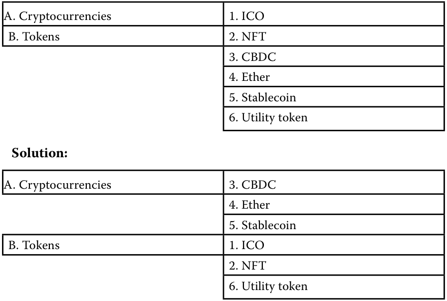
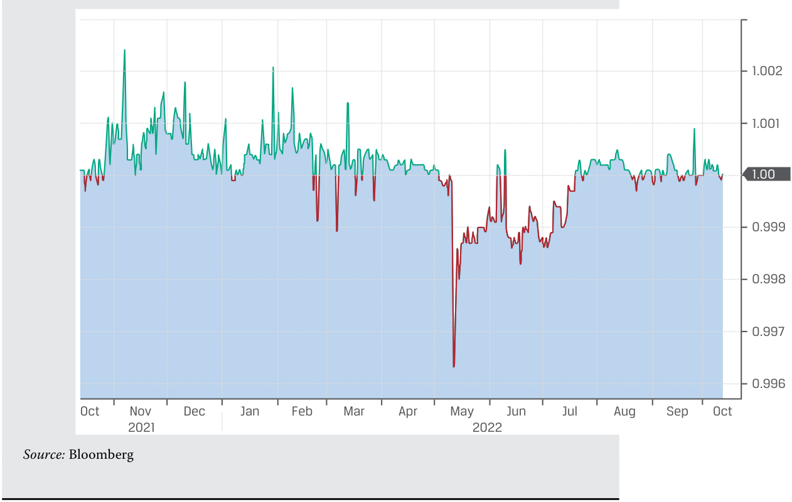
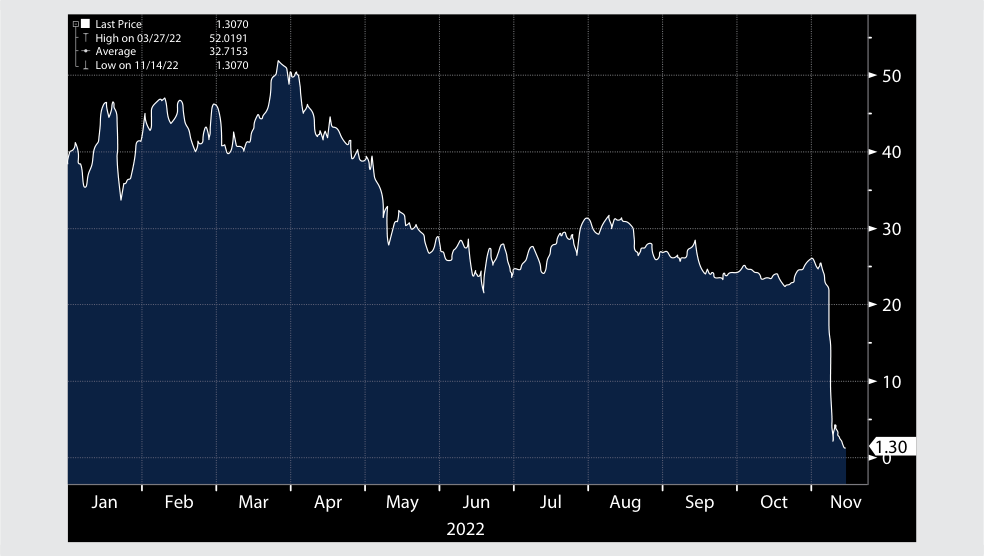
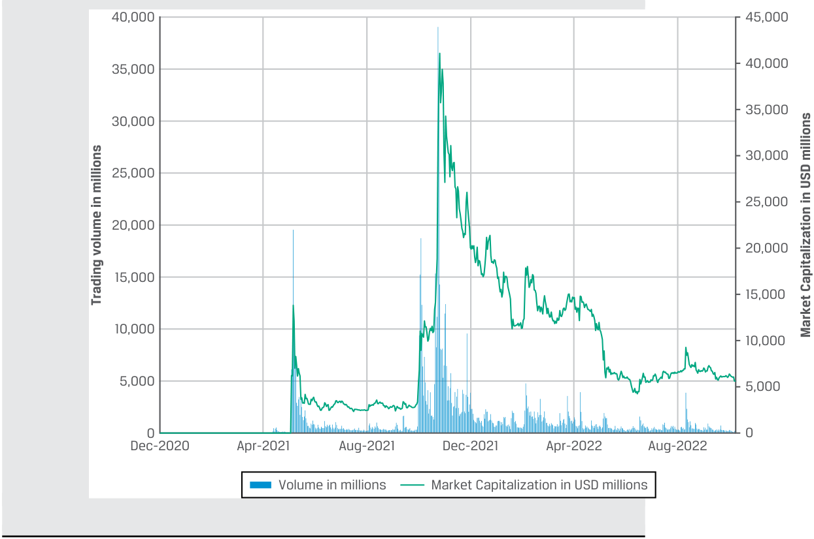

[Toàn Chương] LM07 — Learning Module 7 Introduction to Digital Assets
Volume 8: Alternative Investments
Learning Module 7 Introduction to Digital Assets
Part 1/3: Introduction (PDF Pages 187–197)
Tập 8: Đầu tư Thay thế (Alternative Investments)
Học phần 7: Giới thiệu về Tài sản Số (Introduction to Digital Assets)
Phần 1/3: Giới thiệu (Trang PDF 187–197)
L E A R N I N G M O D U L E
H Ọ C P H Ầ N
7
7
Introduction to Digital Assets
Giới thiệu về Tài sản Số (Introduction to Digital Assets)
LEARNING OUTCOMES
MỤC TIÊU HỌC TẬP (LEARNING OUTCOMES)
| Mastery | The candidate should be able to: |
|---|---|
| describe financial applications of distributed ledger technology | |
| explain investment features of digital assets and contrast them with other asset classes |
|
| describe investment forms and vehicles used in digital asset investments |
|
| analyze sources of risk, return, and diversification among digital asset investments |
| Mức độ thành thạo | Ứng viên cần có khả năng: |
|---|---|
| mô tả các ứng dụng tài chính của công nghệ sổ cái phân tán (distributed ledger technology – DLT) | |
| giải thích các đặc điểm đầu tư của tài sản số (digital assets) và đối chiếu chúng với các loại tài sản khác |
|
| mô tả các hình thức và phương tiện đầu tư (investment forms and vehicles) được sử dụng trong đầu tư tài sản số |
|
| phân tích các nguồn rủi ro, lợi nhuận và đa dạng hóa (diversification) giữa các khoản đầu tư tài sản số |
INTRODUCTION
GIỚI THIỆU (INTRODUCTION)
1
1
As introduced in Alternatives Learning Module 1, digital assets are a relatively new investment class that covers assets that can be created, stored, and transmitted electronically and have associated ownership or use rights. This class includes a wide variety of digital assets, including cryptocurrencies, tokens, and digital collectables. Based on the innovative distributed ledger technology (DLT), or blockchain technology, digital assets utilize advanced encryption techniques that assure the authenticity of digital assets. While cryptocurrencies have their own blockchains, crypto-tokens are built on an existing blockchain.
Như đã được giới thiệu trong Học phần 1 của môn Đầu tư Thay thế, tài sản số (digital assets) là một loại tài sản đầu tư tương đối mới bao gồm các tài sản có thể được tạo lập, lưu trữ và truyền tải bằng phương thức điện tử (created, stored, and transmitted electronically) và gắn liền với các quyền sở hữu hoặc quyền sử dụng (ownership or use rights). Loại tài sản này bao gồm rất nhiều dạng tài sản số đa dạng, trong đó có tiền mã hóa (cryptocurrencies), mã thông báo (tokens), và các vật phẩm sưu tầm kỹ thuật số (digital collectables). Dựa trên công nghệ sổ cái phân tán (distributed ledger technology – DLT) mang tính đột phá, hay còn gọi là công nghệ chuỗi khối (blockchain technology), các tài sản số sử dụng các kỹ thuật mã hóa tiên tiến (advanced encryption techniques) nhằm đảm bảo tính xác thực (authenticity) của tài sản số. Trong khi các đồng tiền mã hóa (cryptocurrencies) có chuỗi khối (blockchains) của riêng mình, thì các mã thông báo tiền mã hóa (crypto-tokens) lại được xây dựng trên một chuỗi khối đã tồn tại sẵn.
As with other types of alternative investments, digital assets have characteristics distinct from traditional investments. Since the advent of Bitcoin in 2009, when it was a niche concept in the technology world, digital assets have gradually become more mainstream alternative investments for investors worldwide. We will give an overview of the common forms of digital asset investments and discuss the key concepts and pitfalls in this space.
Cũng giống như các loại hình đầu tư thay thế khác, tài sản số có những đặc điểm khác biệt rõ rệt so với các khoản đầu tư truyền thống. Kể từ sự ra đời của Bitcoin vào năm 2009—thời điểm mà nó vẫn còn là một khái niệm ngách trong thế giới công nghệ—tài sản số đã dần trở thành các khoản đầu tư thay thế phổ biến hơn (mainstream alternative investments) đối với các nhà đầu tư trên toàn thế giới. Chúng ta sẽ đưa ra một cái nhìn tổng quan về các hình thức đầu tư tài sản số phổ biến và thảo luận về các khái niệm cốt lõi cũng như những cạm bẫy (pitfalls) trong lĩnh vực này.
Despite their special features and technological characteristics, digital assets offer investors diversification while providing higher expected returns than traditional investments provide. However, their risks are also higher. We will discuss the sources of risks in digital assets to provide a better understanding of this evolving asset class.
Bên cạnh các tính năng đặc biệt và đặc điểm công nghệ của mình, tài sản số mang lại cho các nhà đầu tư khả năng đa dạng hóa đồng thời cung cấp mức lợi nhuận kỳ vọng cao hơn (higher expected returns) so với các khoản đầu tư truyền thống. Tuy nhiên, rủi ro của chúng cũng cao hơn. Chúng ta sẽ thảo luận về các nguồn rủi ro trong tài sản số nhằm mang lại sự thấu hiểu tốt hơn về loại tài sản đang không ngừng phát triển này.
LEARNING MODULE OVERVIEW
TỔNG QUAN HỌC PHẦN (LEARNING MODULE OVERVIEW)
-
Blockchain and distributed ledger technology might offer a new way to store, record, and track digital assets on a secure, distributed basis. Additionally, DLT could bring efficiencies to posttrade and compliance processes through automation, smart contracts, and identity verification.
-
DLT can take the form of either permissionless or permissioned networks.
-
A consensus protocol is a set of rules that govern how blocks are cryptographically chained together in a blockchain network for the verification of the complete and immutable history of transaction records. Two broad types of consensus protocols are “proof of work” (PoW) and “proof of stake” (PoS).
-
Digital assets are frequently seen as an alternative asset class. As digital assets become more developed, institutional investors may continue to seek some exposure to these assets for their higher returns and possible diversification benefits.
-
Digital assets differ from traditional financial assets in terms of their inherent value, transaction validation approach, uses as a legal medium of exchange, and legal and regulatory protection.
-
The most common digital assets are cryptocurrencies, including Bitcoin and altcoins (including stablecoins and meme coins). There are also digitalized tokens that include non-fungible tokens, security tokens, utility tokens, and governance tokens.
-
Many cryptocurrencies are designed with self-imposed limits on the total supply through complex computer algorithms. Such limits could help maintain a value from a technical perspective, yet there is no economic consensus on how they should be valued. Cryptocurrency exchanges are classified into centralized exchanges and decentralized exchanges. Both centralized and decentralized exchanges face problems with fraud and manipulation because they are not subject to rigorous oversight and are generally not regulated as financial exchanges.
-
Investment in digital assets can take the form of direct ownership of cryptocurrencies and other digital assets on the blockchains or indirect investment in exchange-traded products, hedge funds, trusts, futures, and thematic stocks.
-
Asset-backed tokens are digital claims on physical assets, financial assets, or financial instruments and are collateralized by these underlying assets.
-
The push for financial decentralized applications based on opensource codes and smart contracts has grown into a movement known as decentralized finance, or DeFi. DeFi seeks to design, combine, and develop decentralized financial applications as building blocks for sophisticated financial products and services.
-
The price of Bitcoin and other digital assets are driven by expectations on future asset appreciation rather than any underlying cash flow. The market demand for the limited supply of cryptocurrencies is a significant driver of prices.
-
Công nghệ chuỗi khối (blockchain) và công nghệ sổ cái phân tán (distributed ledger technology – DLT) có thể mang lại một phương thức mới để lưu trữ, ghi nhận và theo dõi các tài sản số trên một nền tảng phân tán, an toàn (secure, distributed basis). Thêm vào đó, DLT có thể mang lại hiệu quả cho các quy trình hậu giao dịch (post-trade) và tuân thủ (compliance processes) thông qua tự động hóa, hợp đồng thông minh (smart contracts), và xác minh danh tính (identity verification).
-
DLT có thể tồn tại dưới hình thức các mạng lưới không cần cấp phép (permissionless networks) hoặc các mạng lưới có cấp phép (permissioned networks).
-
Giao thức đồng thuận (consensus protocol) là một tập hợp các quy tắc chi phối cách thức các khối (blocks) được liên kết chuỗi với nhau bằng mật mã học (cryptographically chained together) trong một mạng lưới blockchain nhằm xác minh lịch sử hoàn chỉnh và bất biến (immutable history) của các bản ghi giao dịch. Hai loại giao thức đồng thuận lớn là “bằng chứng công việc” (“proof of work” – PoW) và “bằng chứng cổ phần” (“proof of stake” – PoS).
-
Tài sản số thường được xem là một loại tài sản thay thế (alternative asset class). Khi tài sản số ngày càng phát triển hoàn thiện hơn, các nhà đầu tư tổ chức có thể tiếp tục tìm kiếm một mức độ tiếp xúc nhất định với các tài sản này vì mức lợi nhuận cao hơn và các lợi ích đa dạng hóa tiềm năng của chúng.
-
Tài sản số khác với các tài sản tài chính truyền thống xét về giá trị nội tại vốn có (inherent value), cách tiếp cận xác thực giao dịch (transaction validation approach), việc sử dụng làm phương tiện trao đổi hợp pháp (legal medium of exchange), và sự bảo vệ về mặt pháp lý cũng như quy định quản lý (legal and regulatory protection).
-
Các tài sản số phổ biến nhất là tiền mã hóa (cryptocurrencies), bao gồm Bitcoin và các đồng tiền mã hóa thay thế (altcoins, bao gồm cả tiền mã hóa ổn định giá – stablecoins và đồng tiền trào lưu – meme coins). Ngoài ra còn có các mã thông báo số hóa (digitalized tokens) bao gồm mã thông báo không thể thay thế (non-fungible tokens – NFTs), mã thông báo chứng khoán (security tokens), mã thông báo tiện ích (utility tokens), và mã thông báo quản trị (governance tokens).
-
Nhiều đồng tiền mã hóa được thiết kế với các giới hạn tự áp đặt (self-imposed limits) đối với tổng nguồn cung thông qua các thuật toán máy tính phức tạp. Những giới hạn như vậy có thể giúp duy trì giá trị xét từ góc độ kỹ thuật, tuy nhiên vẫn chưa có sự đồng thuận về mặt kinh tế (no economic consensus) về cách thức định giá chúng. Các sàn giao dịch tiền mã hóa (cryptocurrency exchanges) được phân loại thành sàn giao dịch tập trung (centralized exchanges) và sàn giao dịch phi tập trung (decentralized exchanges). Cả sàn giao dịch tập trung và phi tập trung đều phải đối mặt với các vấn đề về gian lận và thao túng (fraud and manipulation) bởi vì chúng không chịu sự giám sát nghiêm ngặt và nhìn chung không được quản lý như các sàn giao dịch tài chính chính thống.
-
Đầu tư vào tài sản số có thể dưới hình thức sở hữu trực tiếp (direct ownership) tiền mã hóa và các tài sản số khác trên các chuỗi khối, hoặc đầu tư gián tiếp (indirect investment) vào các sản phẩm giao dịch trên sàn (exchange-traded products), quỹ phòng hộ (hedge funds), quỹ tín thác (trusts), hợp đồng tương lai (futures), và các cổ phiếu theo chủ đề (thematic stocks).
-
Mã thông báo được đảm bảo bằng tài sản (asset-backed tokens) là các quyền đòi nợ kỹ thuật số (digital claims) đối với tài sản vật chất, tài sản tài chính hoặc công cụ tài chính và được thế chấp (collateralized) bằng chính các tài sản cơ sở này.
-
Sự thúc đẩy phát triển các ứng dụng tài chính phi tập trung dựa trên mã nguồn mở (open-source codes) và hợp đồng thông minh đã phát triển thành một phong trào được gọi là tài chính phi tập trung (decentralized finance), hay DeFi. DeFi tìm cách thiết kế, kết hợp và phát triển các ứng dụng tài chính phi tập trung đóng vai trò như những viên gạch nền tảng (building blocks) cho các sản phẩm và dịch vụ tài chính tinh vi.
-
Giá của Bitcoin và các tài sản số khác được dẫn dắt bởi những kỳ vọng về sự tăng giá tài sản trong tương lai (expectations on future asset appreciation) hơn là bất kỳ dòng tiền cơ sở (underlying cash flow) nào. Nhu cầu thị trường đối với nguồn cung hữu hạn của tiền mã hóa là một động lực dẫn dắt giá đáng kể.
-
The performance of the first widely traded digital asset, Bitcoin, has been characterized by high return, high volatility, and low correlations with traditional asset classes.
-
Due to the historically low correlations with other asset classes, digital assets offer potential diversification benefits to a well-diversified portfolio. But the correlations are observed to have risen, especially during periods of high market uncertainty.
-
Hiệu quả hoạt động của tài sản số đầu tiên được giao dịch rộng rãi là Bitcoin được đặc trưng bởi lợi nhuận cao (high return), độ biến động cao (high volatility), và mức tương quan thấp (low correlations) với các loại tài sản truyền thống.
-
Do có mức tương quan lịch sử thấp với các loại tài sản khác, tài sản số mang lại lợi ích đa dạng hóa tiềm năng cho một danh mục đầu tư đã được đa dạng hóa tốt. Tuy nhiên, người ta quan sát thấy hệ số tương quan này đã tăng lên, đặc biệt là trong những giai đoạn thị trường có mức độ bất định cao (high market uncertainty).
LEARNING MODULE SELF-ASSESSMENT
TỰ ĐÁNH GIÁ HỌC PHẦN (LEARNING MODULE SELF-ASSESSMENT)
These initial questions are intended to help you gauge your current level of understanding of this learning module.
Những câu hỏi ban đầu này nhằm giúp bạn tự đánh giá mức độ hiểu biết hiện tại của mình về học phần này.
- The consensus protocol on a distributed ledger technology network refers to:
-
A. the standardized approach that governs how digital assets generated from a blockchain network should be valued.
-
B. programs embedded in electronic transaction records that are coded to self-execute according to predetermined conditions.
-
C. the set of rules governing how blocks are cryptographically linked to the chain to become immutable on the distributed ledger network.
-
Solution:
- Giao thức đồng thuận (consensus protocol) trên một mạng lưới công nghệ sổ cái phân tán (distributed ledger technology network) đề cập đến:
-
A. cách tiếp cận tiêu chuẩn hóa chi phối việc các tài sản số được tạo ra từ một mạng lưới blockchain nên được định giá như thế nào.
-
B. các chương trình được nhúng trong các bản ghi giao dịch điện tử được lập trình để tự thực thi (self-execute) theo các điều kiện đã được xác định trước.
-
C. tập hợp các quy tắc chi phối cách thức các khối (blocks) được liên kết bằng mật mã học vào chuỗi để trở nên bất biến (immutable) trên mạng lưới sổ cái phân tán.
-
Lời giải:
The correct answer is C. When transactions enter a node of the distributed ledger, they are bundled into “blocks” and cryptographically “chained” together to facilitate verification of the prior history. How blocks are chained together is determined by the consensus protocol, a set of rules governing how blocks can join the chain and become the immutable “truth.” The consensus protocols are designed to resist attempts at malicious manipulation up to a certain level of security.
Đáp án đúng là C. Khi các giao dịch đi vào một nút (node) của sổ cái phân tán, chúng được bó lại thành các “khối” (“blocks”) và được “nối chuỗi” (“chained”) với nhau bằng mật mã học nhằm tạo thuận lợi cho việc xác minh lịch sử trước đó. Cách thức các khối được nối chuỗi với nhau được quyết định bởi giao thức đồng thuận (consensus protocol)—một tập hợp các quy tắc chi phối cách các khối có thể gia nhập vào chuỗi và trở thành “sự thật” bất biến (immutable “truth”). Các giao thức đồng thuận được thiết kế để chống lại các nỗ lực thao túng ác ý (malicious manipulation) cho đến một cấp độ bảo mật nhất định.
- Cryptocurrencies are a common form of digital asset that:
-
A. can be mined only through “proof of work” on blockchain networks.
-
B. exist both in physical forms and electronic records with rights to use, buy, or sell by owners.
-
C. can be used to transfer or store value, which allows time-efficient transactions between parties without the need for an intermediary.
-
Solution:
- Tiền mã hóa (cryptocurrencies) là một dạng tài sản số phổ biến mà:
-
A. chỉ có thể được đào (mined) thông qua cơ chế “bằng chứng công việc” (“proof of work”) trên các mạng lưới blockchain.
-
B. tồn tại ở cả hình thái vật chất lẫn các bản ghi điện tử đi kèm quyền sử dụng, mua hoặc bán bởi chủ sở hữu.
-
C. có thể được sử dụng để chuyển giao hoặc lưu trữ giá trị (transfer or store value), cho phép thực hiện các giao dịch tiết kiệm thời gian giữa các bên mà không cần đến một bên trung gian (intermediary).
-
Lời giải:
The correct answer is C. Cryptocurrencies are used to transfer or store value, which allows near-real-time transactions between parties without the need for an intermediary. As electronic mediums of exchange, cryptocurrencies lack physical form and exist only as electronic records on distributed ledgers. Depending on the particular consensus protocols used, cryptocurrencies can be generated either by “proof of work” or “proof of stake” by miners or validators on networks.
Đáp án đúng là C. Tiền mã hóa được sử dụng để chuyển giao hoặc lưu trữ giá trị, cho phép thực hiện các giao dịch gần như theo thời gian thực (near-real-time transactions) giữa các bên mà không cần đến bên trung gian. Là các phương tiện trao đổi điện tử, tiền mã hóa không có hình thái vật chất (lack physical form) và chỉ tồn tại dưới dạng các bản ghi điện tử trên các sổ cái phân tán. Tùy thuộc vào giao thức đồng thuận cụ thể được sử dụng, tiền mã hóa có thể được tạo ra bằng cơ chế “bằng chứng công việc” (“proof of work”) hoặc “bằng chứng cổ phần” (“proof of stake”) bởi các thợ đào (miners) hoặc những người xác thực (validators) trên mạng lưới.
- Digital assets differ from traditional financial securities in that:
-
A. digital assets are subject to a broader legal protection framework.
-
B. digital assets are not valued based on their expected future cash flow.
- Tài sản số khác với các chứng khoán tài chính truyền thống ở điểm:
-
A. tài sản số được hưởng một khung bảo vệ pháp lý rộng hơn.
-
B. tài sản số không được định giá dựa trên dòng tiền kỳ vọng trong tương lai (expected future cash flow) của chúng.
-
C. transaction records of digital assets require a centralized intermediary.
-
Solution:
-
C. các bản ghi giao dịch của tài sản số đòi hỏi phải có một bên trung gian tập trung (centralized intermediary).
-
Lời giải:
The correct answer is B. Most digital assets do not have a fundamental value based on underlying assets or on the potential cash flow or earnings they are expected to generate. To date, the legal and regulatory frameworks for digital assets are still evolving, and there is generally less legal protection compared to traditional financial securities. Digital asset transactions are recorded on a distributed ledger, and no centralized intermediary is required in the process.
Đáp án đúng là B. Hầu hết các tài sản số không có giá trị cơ bản (fundamental value) dựa trên các tài sản cơ sở hoặc dựa trên dòng tiền hay thu nhập tiềm năng mà chúng được kỳ vọng sẽ tạo ra. Cho đến nay, các khung pháp lý và quy định quản lý đối với tài sản số vẫn đang trong quá trình hoàn thiện, và nhìn chung có ít sự bảo vệ pháp lý hơn so với các chứng khoán tài chính truyền thống. Các giao dịch tài sản số được ghi nhận trên một sổ cái phân tán, và không cần đến bất kỳ bên trung gian tập trung nào trong quy trình này.
- A special type of cryptocurrency that is backed by and pegged to a fiat currency is called:
-
A. altcoin.
-
B. stablecoin.
-
C. meme coin.
-
Solution:
- Một loại tiền mã hóa đặc biệt được đảm bảo bằng (backed by) và neo giá vào (pegged to) một đồng tiền pháp định (fiat currency) được gọi là:
-
A. đồng tiền thay thế (altcoin).
-
B. đồng tiền ổn định giá (stablecoin).
-
C. đồng tiền trào lưu (meme coin).
-
Lời giải:
The correct answer is B. A stablecoin is designed to maintain a stable value by pegging its value to another asset and is collateralized by a basket of assets, typically a fiat currency, precious metals, or other cryptocurrencies.
Đáp án đúng là B. Một đồng tiền ổn định giá (stablecoin) được thiết kế để duy trì một mức giá trị ổn định bằng cách neo giá trị của nó vào một tài sản khác và được thế chấp bằng một rổ tài sản (collateralized by a basket of assets), thường là một đồng tiền pháp định (fiat currency), kim loại quý, hoặc các đồng tiền mã hóa khác.
- An indirect investment in digital assets can be made through:
-
A. entering into cryptocurrency futures.
-
B. purchasing Bitcoins on cryptocurrency wallets.
-
C. participating in the initial coin offering of a new digital token.
-
Solution:
- Một khoản đầu tư gián tiếp (indirect investment) vào tài sản số có thể được thực hiện thông qua:
-
A. việc tham gia vào các hợp đồng tương lai tiền mã hóa (cryptocurrency futures).
-
B. việc mua Bitcoin trên các ví tiền mã hóa (cryptocurrency wallets).
-
C. việc tham gia vào đợt phát hành tiền mã hóa lần đầu (initial coin offering – ICO) của một mã thông báo kỹ thuật số mới.
-
Lời giải:
The correct answer is A. Investors interested in an indirect investment in digital assets can trade cryptocurrency futures on established exchanges, such as the Chicago Mercantile Exchange. However, the purchase of Bitcoins and buying new tokens through an initial coin offering are direct forms of investment.
Đáp án đúng là A. Các nhà đầu tư quan tâm đến việc đầu tư gián tiếp vào tài sản số có thể giao dịch các hợp đồng tương lai tiền mã hóa trên các sàn giao dịch lâu đời, chẳng hạn như Sàn Giao dịch Hàng hóa Chicago (Chicago Mercantile Exchange – CME). Ngược lại, việc mua Bitcoin và mua các mã thông báo mới thông qua một đợt phát hành tiền mã hóa lần đầu (ICO) là các hình thức đầu tư trực tiếp (direct forms of investment).
- A cryptocurrency ETF seeks to:
-
A. gain exposure to cryptocurrencies through cash and cryptocurrency derivatives.
-
B. replicate digital asset investment returns by investing directly in cryptocurrencies.
-
C. gain exposure to the cryptocurrency theme by investing in public equities related to the digital asset sector.
- Một quỹ ETF tiền mã hóa (cryptocurrency ETF) tìm cách:
-
A. đạt được mức tiếp xúc (gain exposure) với tiền mã hóa thông qua tiền mặt và các công cụ phái sinh tiền mã hóa (cryptocurrency derivatives).
-
B. mô phỏng tỷ suất sinh lợi đầu tư tài sản số bằng cách đầu tư trực tiếp vào các đồng tiền mã hóa.
-
C. đạt được mức tiếp xúc với chủ đề tiền mã hóa bằng cách đầu tư vào các cổ phiếu đại chúng có liên quan đến lĩnh vực tài sản số.
Solution:
Lời giải:
The correct answer is A. A cryptocurrency ETF seeks to replicate digital asset investment returns by cash and cryptocurrency derivatives.
Đáp án đúng là A. Một quỹ ETF tiền mã hóa tìm cách mô phỏng lại tỷ suất sinh lợi đầu tư tài sản số bằng tiền mặt và các công cụ phái sinh tiền mã hóa.
- Bitcoin as an alternative investment has historically exhibited:
-
A. low return, low risk, and high correlations with traditional assets.
-
B. high return, high risk, and low correlations with traditional assets.
- Bitcoin, với tư cách là một khoản đầu tư thay thế, trong lịch sử đã thể hiện:
-
A. lợi nhuận thấp, rủi ro thấp, và mức tương quan cao với các tài sản truyền thống.
-
B. lợi nhuận cao, rủi ro cao, và mức tương quan thấp với các tài sản truyền thống.
C. high return, high risk, and high correlations with traditional assets. Solution: The correct answer is B. Despite no future cash flow generation, Bitcoin as an alternative investment has been characterized by high return, high volatility, and low correlations with traditional asset classes.
- C. lợi nhuận cao, rủi ro cao, và mức tương quan cao với các tài sản truyền thống.
- Early investors in cryptocurrencies have enjoyed significant price appreciation but many later-stage investors suffered huge losses most likely because: A. blockchain technology favors early-stage investors. B. there are substantial price fluctuations in cryptocurrencies. C. cryptocurrencies have increased their appeal to institutional investors.
Lời giải: Đáp án đúng là B. Mặc dù không tạo ra dòng tiền trong tương lai, Bitcoin với tư cách là một khoản đầu tư thay thế đã được đặc trưng bởi lợi nhuận cao (high return), độ biến động cao (high volatility), và mức tương quan thấp (low correlations) với các loại tài sản truyền thống.
Solution: The correct answer is B. Because cryptocurrencies are a relatively new innovation, their market is subject to rapid price swings, changes, and uncertainty. Their prices have been extremely volatile over the years, and price drawdowns were often much more substantial than for traditional asset classes. As a result, later-stage investors may suffer huge losses depending on their points of entry and exit.
- Các nhà đầu tư giai đoạn đầu vào tiền mã hóa đã tận hưởng mức tăng giá đáng kể nhưng nhiều nhà đầu tư ở giai đoạn sau lại phải gánh chịu những khoản lỗ khổng lồ, nguyên nhân có khả năng cao nhất là vì:
- A. công nghệ blockchain ưu ái các nhà đầu tư giai đoạn đầu.
- B. có những biến động giá rất lớn (substantial price fluctuations) trong tiền mã hóa.
- C. tiền mã hóa đã gia tăng sức hấp dẫn đối với các nhà đầu tư tổ chức.
DISTRIBUTED LEDGER TECHNOLOGY
Lời giải: Đáp án đúng là B. Bởi vì tiền mã hóa là một sự đổi mới tương đối gần đây, thị trường của chúng phải chịu những biến động giá nhanh chóng, nhiều thay đổi và sự bất định. Giá của chúng cực kỳ biến động qua các năm, và các đợt sụt giảm giá (price drawdowns) thường lớn hơn rất nhiều so với các loại tài sản truyền thống. Kết quả là, các nhà đầu tư giai đoạn sau có thể phải gánh chịu những khoản lỗ khổng lồ tùy thuộc vào thời điểm gia nhập và rút lui (points of entry and exit) của họ.
2
CÔNG NGHỆ SỔ CÁI PHÂN TÁN (DISTRIBUTED LEDGER TECHNOLOGY)
2
describe financial applications of distributed ledger technology
Mục tiêu học tập: Mô tả các ứng dụng tài chính của công nghệ sổ cái phân tán (distributed ledger technology).
Distributed ledger technology (DLT) based on a distributed ledger (defined later) represents a technological development and offers potential improvements to delivering financing services and financial record keeping. DLT networks are being considered as a means to create, exchange, and track ownership of financial assets on a peer-to-peer (P2P) basis. Potential benefits of using this technology include greater accuracy, transparency, and security in record keeping; faster transfer of ownership; and P2P interactions. However, the technology is not fully secure, and breaches in privacy and data protection are possible. Additionally, the computational processes underlying DLT generally require massive amounts of energy to verify transaction activity.
Công nghệ sổ cái phân tán (Distributed ledger technology – DLT) dựa trên một sổ cái phân tán (được định nghĩa ở phần sau) đại diện cho một bước phát triển công nghệ và mang lại những cải tiến tiềm năng cho việc cung cấp các dịch vụ tài chính và lưu trữ hồ sơ tài chính (financial record keeping). Các mạng lưới DLT đang được xem xét như một phương tiện để tạo lập, trao đổi và theo dõi quyền sở hữu các tài sản tài chính trên cơ sở ngang hàng (peer-to-peer – P2P). Những lợi ích tiềm năng của việc sử dụng công nghệ này bao gồm độ chính xác, tính minh bạch và tính bảo mật cao hơn trong việc lưu trữ hồ sơ; chuyển giao quyền sở hữu nhanh hơn; và các tương tác ngang hàng (P2P). Tuy nhiên, công nghệ này không hoàn toàn an toàn tuyệt đối, và các vụ vi phạm quyền riêng tư cũng như bảo vệ dữ liệu vẫn có thể xảy ra. Thêm vào đó, các quy trình tính toán nền tảng của DLT nhìn chung đòi hỏi một lượng năng lượng khổng lồ (massive amounts of energy) để xác minh hoạt động giao dịch.
A distributed ledger is a type of database that can be shared among potentially infinite numbers of entities in a network. In a distributed ledger, entries are recorded, stored, and distributed across a network of participants so that each participating entity has a matching copy of the digital database, making each copy of the database a verified record of all current and previous transactions. Basic elements of a DLT network include a digital ledger, a consensus mechanism used to confirm new entries, and a participant network.
Một sổ cái phân tán (distributed ledger) là một loại cơ sở dữ liệu có thể được chia sẻ giữa một số lượng các thực thể tiềm năng là vô hạn trong một mạng lưới. Trong một sổ cái phân tán, các bút toán (entries) được ghi nhận, lưu trữ và phân phối trên khắp một mạng lưới các bên tham gia sao cho mỗi thực thể tham gia đều có một bản sao khớp hoàn toàn (matching copy) của cơ sở dữ liệu kỹ thuật số đó, biến mỗi bản sao của cơ sở dữ liệu thành một bản ghi đã được xác minh của tất cả các giao dịch hiện tại và trước đó. Các yếu tố cơ bản của một mạng lưới DLT bao gồm một sổ cái kỹ thuật số (digital ledger), một cơ chế đồng thuận (consensus mechanism) được sử dụng để xác nhận các bút toán mới, và một mạng lưới các bên tham gia (participant network).
The consensus mechanism is the process by which the computer entities (or nodes) in a network agree on a common state of the ledger. Consensus generally involves two steps: transaction validation and agreement on ledger update by network parties. These features enable the creation of records that are, for the most part, considered immutable, or unchangeable, yet they are transparent and accessible to network participants on a near-real-time basis. There are various approaches to establishing consensus.
Cơ chế đồng thuận (consensus mechanism) là quy trình mà qua đó các thực thể máy tính (hay các nút – nodes) trong một mạng lưới thống nhất với nhau về một trạng thái chung của sổ cái (common state of the ledger). Sự đồng thuận nhìn chung bao gồm hai bước: xác thực giao dịch (transaction validation) và sự đồng ý cập nhật sổ cái (agreement on ledger update) bởi các bên trong mạng lưới. Những tính năng này cho phép tạo ra các bản ghi mà phần lớn được coi là bất biến (immutable), hay không thể thay đổi được, nhưng vẫn minh bạch và có thể truy cập được bởi các bên tham gia mạng lưới trên cơ sở gần như thời gian thực (near-real-time basis). Có nhiều cách tiếp cận khác nhau để thiết lập sự đồng thuận.
Features of DLT include the use of cryptography —an algorithmic process to encrypt data, making the data unusable if received by unauthorized parties—which enables a high level of network security and database integrity. For example, DLT uses cryptographic methods of proof to verify network participant identity and for data encryption.
Các tính năng của DLT bao gồm việc sử dụng mật mã học (cryptography)—một quy trình thuật toán để mã hóa dữ liệu, làm cho dữ liệu không thể sử dụng được nếu rơi vào tay các bên không được ủy quyền—giúp mang lại mức độ bảo mật mạng lưới và tính toàn vẹn cơ sở dữ liệu (database integrity) rất cao. Ví dụ, DLT sử dụng các phương pháp bằng chứng mật mã học (cryptographic methods of proof) để xác minh danh tính của bên tham gia mạng lưới và để mã hóa dữ liệu.
DLT has the potential to accommodate “ smart contracts ,” which are computer programs that self-execute on the basis of pre-specified terms and conditions agreed to by the parties to a contract. Examples of smart contract use are the automatic execution of contingent claims for derivatives and the instantaneous transfer of collateral in the event of default.
DLT có tiềm năng hỗ trợ các “hợp đồng thông minh (smart contracts)”, vốn là các chương trình máy tính tự thực thi (self-execute) trên cơ sở các điều khoản và điều kiện đã được quy định trước và được đồng thuận bởi các bên tham gia hợp đồng. Các ví dụ về việc sử dụng hợp đồng thông minh là việc tự động thực thi các quyền đòi nợ có điều kiện (contingent claims) đối với các công cụ phái sinh và việc chuyển giao tài sản thế chấp tức thời (instantaneous transfer of collateral) trong trường hợp xảy ra vỡ nợ (default).
Exhibit 1 illustrates a distributed ledger network in which all participants (nodes) are connected to one another, each having a copy of the distributed ledger. The term “consensus” is shown in the center of the network and represents the consensus mechanism in which the nodes agree on new transactions and ledger updates.
Bảng 1 (Exhibit 1) minh họa một mạng lưới sổ cái phân tán trong đó tất cả các bên tham gia (các nút – nodes) được kết nối với nhau, mỗi nút nắm giữ một bản sao của sổ cái phân tán. Thuật ngữ “đồng thuận” (“consensus”) được hiển thị ở trung tâm của mạng lưới và đại diện cho cơ chế đồng thuận mà qua đó các nút thống nhất về các giao dịch mới và các bản cập nhật sổ cái.
Exhibit 1: Distributed Ledger Network Setup
Bảng 1: Thiết lập Mạng lưới Sổ cái Phân tán (Exhibit 1: Distributed Ledger Network Setup)

Chú thích hình ảnh: - CONSENSUS (Ở tâm mạng lưới): Cơ chế đồng thuận kết nối tất cả các nút (nodes). - LEDGER (Tại mỗi nút xung quanh): Mỗi nút lưu trữ một bản sao sổ cái giống hệt nhau (cùng mã định danh
81c699a7-b760-4573-8e06-3b7e98f5edfd).
Blockchain is a type of digital ledger in which information, such as changes in ownership, is recorded sequentially within blocks that are then linked or “chained” together and secured using cryptographic methods. The steps outlining adding a new transaction to the network are outlined in Exhibit 2. There are several key steps a transaction must go through before it is added to the blockchain.
Chuỗi khối (Blockchain) là một loại sổ cái kỹ thuật số trong đó thông tin, chẳng hạn như những thay đổi về quyền sở hữu, được ghi nhận tuần tự bên trong các khối (blocks), sau đó các khối này được liên kết hoặc “nối chuỗi” (“chained”) lại với nhau và được bảo mật bằng cách sử dụng các phương pháp mật mã học. Các bước phác thảo việc thêm một giao dịch mới vào mạng lưới được trình bày trong Bảng 2 (Exhibit 2). Có một số bước chính mà một giao dịch phải trải qua trước khi nó được thêm vào chuỗi khối.
Exhibit 2: Adding a Transaction to the Blockchain
Bảng 2: Thêm một Giao dịch vào Chuỗi khối (Exhibit 2: Adding a Transaction to the Blockchain)

Chú thích hình ảnh (Quy trình 6 bước thêm giao dịch vào Blockchain): 1. Bước 1: Giao dịch diễn ra giữa người mua và người bán (Transaction takes place between buyer and seller). 2. Bước 2: Một khối chứa thông tin giao dịch được tạo ra và phát tán tới mạng lưới các máy tính / các nút (A block with transaction information is created and broadcast to the network of computers (nodes)). 3. Bước 3: Các nút xác thực chi tiết giao dịch và các bên tham gia giao dịch (Nodes validate the transaction details and parties to the transaction). 4. Bước 4: Sau khi được xác minh, giao dịch được gộp chung với các giao dịch khác để tạo thành một khối dữ liệu mới (có kích thước xác định trước) cho sổ cái (Once verified, the transaction is combined with other transactions to form a new block (of predetermined size) of data for the ledger). 5. Bước 5: Khối dữ liệu sau đó được thêm vào hoặc liên kết (bằng quy trình mật mã học) với (các) khối trước đó có chứa dữ liệu giao dịch (The block of data is then added or linked (using a cryptographic process) to the previous block(s) containing transaction data). 6. Bước 6: Giao dịch được coi là hoàn tất và sổ cái đã được cập nhật (Transaction is considered complete and ledger has been updated).
Each block contains a grouping of transactions (or entries) and a secure link (known as a hash) to the previous block. New transactions are inserted into the chain only after validation via a consensus mechanism in which authorized members agree on the transaction and the preceding order, or history, in which previous transactions have occurred.
Mỗi khối chứa một nhóm các giao dịch (hoặc bút toán) và một liên kết bảo mật (được gọi là mã băm – hash) nối với khối liền trước. Các giao dịch mới chỉ được chèn vào chuỗi sau khi đã được xác thực thông qua một cơ chế đồng thuận, trong đó các thành viên được ủy quyền thống nhất về giao dịch đó cũng như thứ tự trước sau, hay lịch sử, mà các giao dịch trước đó đã diễn ra.
Proof of Work vs. Proof of Stake
Bằng chứng Công việc so với Bằng chứng Cổ phần (Proof of Work vs. Proof of Stake)
Fundamentally, blockchains are software protocols that enable many parties to interact under common assumptions and knowledge without having to trust each other. When transactions enter into a node of the blockchain, they are bundled into “blocks” and cryptographically “chained” together to facilitate verification of the prior history. How blocks are chained together is determined by the consensus protocol , a set of rules governing how blocks can join the chain and become the immutable “truth.” The consensus protocols are designed to resist attempts at malicious manipulation up to a certain level of security. We distinguish between two main types of protocols.
Về cơ bản, chuỗi khối (blockchains) là các giao thức phần mềm (software protocols) cho phép nhiều bên tương tác với nhau dưới những giả định và hiểu biết chung mà không cần phải tin tưởng lẫn nhau. Khi các giao dịch đi vào một nút của chuỗi khối, chúng được bó lại thành các “khối” (“blocks”) và được “nối chuỗi” (“chained”) với nhau bằng mật mã học để tạo thuận lợi cho việc xác minh lịch sử trước đó. Cách thức các khối được nối chuỗi với nhau được quyết định bởi giao thức đồng thuận (consensus protocol)—một tập hợp các quy tắc chi phối cách các khối có thể gia nhập chuỗi và trở thành “sự thật” bất biến. Các giao thức đồng thuận được thiết kế để chống lại các nỗ lực thao túng ác ý cho đến một cấp độ bảo mật nhất định. Chúng ta phân biệt giữa hai loại giao thức chính.
The Proof of Work (PoW) Protocol
Giao thức Bằng chứng Công việc (The Proof of Work – PoW Protocol)
The proof of work protocol determines which specific block to add through a computationally costly lottery. The PoW consensus mechanism used to verify a transaction involves a cryptographic problem that must be solved by some computers on the network (known as miners) each time a transaction takes place. Miners use powerful computers and significant amounts of energy to solve complex algorithm puzzles to validate and lock blocks of transactions into the blockchain, earning cryptocurrency for themselves in the process. The “proof of work” consensus process to update the blockchain can require substantial amounts of computing power, making it very difficult and extremely expensive for an individual third party to manipulate historical data. To manipulate historical data, an individual or entity would have to control most nodes in the network. The success of the network, therefore, relies on broad network participation.
Giao thức bằng chứng công việc quyết định khối cụ thể nào sẽ được thêm vào thông qua một cuộc xổ số tiêu tốn nhiều chi phí tính toán (computationally costly lottery). Cơ chế đồng thuận PoW được sử dụng để xác minh một giao dịch bao gồm một bài toán mật mã học (cryptographic problem) phải được giải bởi một số máy tính trên mạng lưới (được gọi là các thợ đào – miners) mỗi khi có một giao dịch diễn ra. Các thợ đào (Miners) sử dụng các máy tính mạnh mẽ và lượng năng lượng đáng kể để giải các câu đố thuật toán phức tạp nhằm xác thực và khóa các khối giao dịch vào chuỗi khối, đồng thời kiếm được tiền mã hóa cho chính họ trong quá trình đó. Quy trình đồng thuận “bằng chứng công việc” để cập nhật chuỗi khối có thể đòi hỏi năng lực tính toán (computing power) vô cùng lớn, khiến cho một bên thứ ba đơn lẻ rất khó và cực kỳ tốn kém nếu muốn thao túng dữ liệu lịch sử. Để thao túng dữ liệu lịch sử, một cá nhân hoặc thực thể sẽ phải kiểm soát phần lớn các nút (most nodes) trong mạng lưới. Do đó, sự thành công của mạng lưới phụ thuộc vào sự tham gia rộng rãi của các thành viên trong mạng lưới.
Participants on the network agree that the longest chain of blocks is the only truthful representation of all previous transactions. If a malicious attacker wanted to make a longer chain including fraudulent transactions, it must outperform the entire network’s computational power, which theoretically requires most of the network’s
Các bên tham gia trên mạng lưới đồng ý rằng chuỗi dài nhất của các khối (longest chain of blocks) là đại diện trung thực duy nhất cho tất cả các giao dịch trước đó. Nếu một kẻ tấn công ác ý muốn tạo ra một chuỗi dài hơn có bao gồm các giao dịch gian lận, kẻ đó phải vượt qua năng lực tính toán của toàn bộ mạng lưới, điều mà về mặt lý thuyết đòi hỏi phải nắm giữ phần lớn năng lực
available computational power. This is the famous 51% attack threshold and serves as the boundary of the PoW protocol’s security standards. Amassing this much network power on the most widely used blockchains behind cryptocurrencies, such as Bitcoin or Ethereum, is extremely difficult for any individual, organization, or group of coordinated actors. Even if most of the network’s computational power can be controlled momentarily, the length of block history that can be altered is limited by the duration of this control. This has been the most widely used consensus protocol for digital assets.
tính toán hiện có của mạng lưới. Đây chính là ngưỡng tấn công 51% (51% attack threshold) nổi tiếng và đóng vai trò là ranh giới của các tiêu chuẩn bảo mật thuộc giao thức PoW. Việc tích lũy một sức mạnh mạng lưới lớn đến mức này trên các chuỗi khối được sử dụng rộng rãi nhất đứng sau các đồng tiền mã hóa như Bitcoin hay Ethereum là điều cực kỳ khó khăn đối với bất kỳ cá nhân, tổ chức hoặc nhóm tác nhân phối hợp nào. Ngay cả khi phần lớn năng lực tính toán của mạng lưới có thể bị kiểm soát trong chốc lát, thì độ dài của lịch sử khối có thể bị thay đổi cũng bị giới hạn bởi thời lượng của sự kiểm soát đó. Đây từng là giao thức đồng thuận được sử dụng rộng rãi nhất cho các tài sản số.
The Proof of Stake (PoS) Protocol
Giao thức Bằng chứng Cổ phần (The Proof of Stake – PoS Protocol)
This protocol requires selected participants on the networks, the validators, to pledge capital to vouch for the block's validity. This stake signals to the network that a validator is available to verify the veracity of a transaction and propose a block. A majority of the other validators, who similarly staked a digital asset to the network, must then attest to the validity of proposed block. Validators benefit from both proposing and attesting to the validity of blocks that have been proposed by other participants in a similar staking process. The boundary of the PoS protocol’s security standards builds on a group of stakers (and their pledged stake) controlling the network’s computational power and protecting access from malicious parties gaining a majority.
Giao thức này yêu cầu những người tham gia được lựa chọn trên mạng lưới, được gọi là những người xác thực (validators), phải cam kết thế chấp vốn (pledge capital) để bảo lãnh cho tính hợp lệ của khối (vouch for the block's validity). Phần vốn đặt cọc (stake) này phát tín hiệu cho mạng lưới biết rằng người xác thực đó sẵn sàng xác minh tính trung thực của một giao dịch và đề xuất một khối mới. Đa số những người xác thực khác, những người cũng đã đặt cọc một tài sản số tương tự vào mạng lưới, sau đó phải chứng thực tính hợp lệ (attest to the validity) của khối được đề xuất đó. Những người xác thực hưởng lợi từ cả việc đề xuất lẫn việc chứng thực tính hợp lệ của các khối do các thành viên khác đề xuất trong một quy trình đặt cọc (staking process) tương tự. Ranh giới của các tiêu chuẩn bảo mật thuộc giao thức PoS được xây dựng dựa trên một nhóm những người đặt cọc (stakers cùng phần vốn cam kết của họ) kiểm soát năng lực tính toán của mạng lưới và bảo vệ quyền truy cập khỏi việc các bên ác ý giành được đa số.
Under both consensus protocols, the validation of the transactions comes with rewards: mining. Successful miners that validate the transaction obtain a new digital asset, whether it is a cryptocurrency or a token. The rate of mining and the speed at which new transactions on the network are validated generally control the amount of a new digital asset that can be created on a specific digital ledger network.
Dưới cả hai giao thức đồng thuận, việc xác thực các giao dịch đều đi kèm với phần thưởng: hoạt động đào (mining). Các thợ đào thành công xác thực được giao dịch sẽ nhận được một tài sản số mới, cho dù đó là một đồng tiền mã hóa hay một mã thông báo (token). Tốc độ đào (rate of mining) và tốc độ mà các giao dịch mới trên mạng lưới được xác thực nhìn chung sẽ kiểm soát số lượng tài sản số mới có thể được tạo ra trên một mạng lưới sổ cái kỹ thuật số cụ thể.
Permissioned and Permissionless Networks
Mạng lưới Có cấp phép và Mạng lưới Không cần cấp phép (Permissioned and Permissionless Networks)
DLT can take the form of either permissionless or permissioned networks. Permissionless networks are open to any user who wishes to make a transaction, and all users within the network can see all transactions that exist on the blockchain. In a permissionless, or open, DLT system, any network participant can perform all network functions.
DLT có thể tồn tại dưới hình thức các mạng lưới không cần cấp phép hoặc có cấp phép. Các mạng lưới không cần cấp phép (Permissionless networks) mở rộng cho bất kỳ người dùng nào muốn thực hiện giao dịch, và tất cả người dùng bên trong mạng lưới đều có thể nhìn thấy mọi giao dịch tồn tại trên chuỗi khối. Trong một hệ thống DLT không cần cấp phép, hay hệ thống mở (open), bất kỳ bên tham gia mạng lưới nào cũng có thể thực hiện tất cả các chức năng của mạng lưới.
The main benefit of a permissionless network is that it does not depend on a centralized authority to confirm or deny the validity of transactions, because this takes place through the chosen consensus mechanism. This means no single point of failure exists because all transactions are recorded on a single distributed database and every node stores a copy of the database. Once a transaction has been added to the blockchain, it cannot be changed, barring manipulation; the distributed ledger becomes a permanent and immutable record of all previous transactions. In a permissionless network, trust between transacting parties is not a requirement.
Lợi ích chính của một mạng lưới không cần cấp phép là nó không phụ thuộc vào một cơ quan có thẩm quyền tập trung (centralized authority) để xác nhận hay từ chối tính hợp lệ của các giao dịch, bởi vì việc này diễn ra thông qua cơ chế đồng thuận đã được lựa chọn. Điều này có nghĩa là không tồn tại điểm lỗi đơn lẻ (no single point of failure exists) bởi vì tất cả các giao dịch đều được ghi nhận trên một cơ sở dữ liệu phân tán duy nhất và mọi nút đều lưu trữ một bản sao của cơ sở dữ liệu đó. Một khi giao dịch đã được thêm vào chuỗi khối, nó không thể bị thay đổi, ngoại trừ trường hợp bị thao túng; sổ cái phân tán trở thành một bản ghi vĩnh viễn và bất biến (permanent and immutable record) của tất cả các giao dịch trước đó. Trong một mạng lưới không cần cấp phép, sự tin tưởng (trust) giữa các bên giao dịch không phải là một yêu cầu bắt buộc.
Bitcoin is a well-known use of an open permissionless network. Bitcoin was created in 2009 to serve as the public ledger for all transactions occurring on its virtual currency. Since the introduction of Bitcoin, many more cryptocurrencies, or digital currencies, which use permissionless DLT networks, have been created.
Bitcoin là một ứng dụng nổi tiếng của mạng lưới mở không cần cấp phép. Bitcoin được tạo ra vào năm 2009 để đóng vai trò là sổ cái công khai (public ledger) cho tất cả các giao dịch diễn ra trên đồng tiền ảo của nó. Kể từ khi Bitcoin ra đời, rất nhiều đồng tiền mã hóa, hay tiền kỹ thuật số khác sử dụng các mạng lưới DLT không cần cấp phép đã được tạo ra.
In permissioned networks , network members might be restricted from participating in certain network activities. Controls, or permissions, can be used to allow varying levels of access to the ledger, from adding transactions (e.g., a participant) to viewing transactions only (e.g., a regulator) to viewing selective details of the transactions but not the full record. Exhibit 3 compares the salient features of permissioned and permissionless blockchains.
Trong các mạng lưới có cấp phép (permissioned networks), các thành viên mạng lưới có thể bị hạn chế tham gia vào một số hoạt động nhất định của mạng lưới. Các biện pháp kiểm soát, hay quyền hạn (permissions), có thể được sử dụng để cho phép các cấp độ truy cập khác nhau vào sổ cái, từ việc thêm các giao dịch (ví dụ: một bên tham gia giao dịch) đến việc chỉ được xem các giao dịch (ví dụ: cơ quan quản lý nhà nước) hoặc chỉ được xem các chi tiết chọn lọc của giao dịch chứ không được xem toàn bộ bản ghi. Bảng 3 (Exhibit 3) so sánh các đặc điểm nổi bật của chuỗi khối có cấp phép và không cần cấp phép.
Exhibit 3: Features of Permissioned and Permissionless Blockchains
Bảng 3: Đặc điểm của Chuỗi khối Có cấp phép và Chuỗi khối Không cần cấp phép (Exhibit 3: Features of Permissioned and Permissionless Blockchains)
| Permissioned blockchain | Permissionless blockchain | |
|---|---|---|
| Speed | Faster as only a limited number of mem- bers participate or are authorized to validate transactions |
Slower as a large number of members have to reach consensus, which decreases network speed and scalability |
| Cost | Cost-effective as few members are required to validate each transaction |
Not cost-effective as many members are required to validate each transaction |
| Decentralization | Partially decentralized as there are a limited number of members in the chain |
Decentralized as all members can access the network |
| Access | Membership is limited. | Membership is unlimited. |
| Governance | The governance is determined by a centralized organization. |
The governance is decentralized and is main- tained by the members. |
| Chuỗi khối có cấp phép (Permissioned blockchain) | Chuỗi khối không cần cấp phép (Permissionless blockchain) | |
|---|---|---|
| Tốc độ (Speed) | Nhanh hơn vì chỉ có một số lượng hạn chế các thành viên tham gia hoặc được ủy quyền xác thực các giao dịch | Chậm hơn vì một số lượng lớn các thành viên phải đạt được sự đồng thuận, làm giảm tốc độ mạng lưới và khả năng mở rộng quy mô (scalability) |
| Chi phí (Cost) | Hiệu quả về chi phí (cost-effective) vì chỉ cần ít thành viên xác thực mỗi giao dịch | Không hiệu quả về chi phí vì cần nhiều thành viên xác thực mỗi giao dịch |
| Tính phi tập trung (Decentralization) | Phi tập trung một phần (partially decentralized) vì có một số lượng hạn chế thành viên trong chuỗi | Phi tập trung hoàn toàn (decentralized) vì tất cả các thành viên đều có thể truy cập mạng lưới |
| Quyền truy cập (Access) | Tư cách thành viên bị giới hạn (limited). | Tư cách thành viên không giới hạn (unlimited). |
| Quản trị (Governance) | Việc quản trị được quyết định bởi một tổ chức tập trung (centralized organization). | Việc quản trị mang tính phi tập trung và được duy trì bởi các thành viên. |
Based on their decentralized nature, permissionless distributed ledgers are fully open to all, but that high level of decentralization usually requires more processing power and bandwidth, making them less cost-effective. The opposite holds true for permissioned blockchains. Governance and transaction verification are two other aspects that are specific to the type of blockchain.
Dựa trên bản chất phi tập trung của mình, các sổ cái phân tán không cần cấp phép mở hoàn toàn cho tất cả mọi người, nhưng mức độ phi tập trung cao đó thường đòi hỏi năng lực xử lý (processing power) và băng thông (bandwidth) lớn hơn, khiến chúng kém hiệu quả về mặt chi phí hơn. Điều ngược lại đúng với các chuỗi khối có cấp phép. Quản trị và xác minh giao dịch là hai khía cạnh khác mang tính đặc thù tùy theo từng loại chuỗi khối.
Types of Digital Assets
Các Loại Tài sản Số (Types of Digital Assets)
Potential applications of DLT to financial services and investment management include the creation of digital assets, such as cryptocurrencies, and the process to deliver financial services more efficiently, such as processes tokenization, post-trade clearing and settlement, and compliance. Exhibit 4 summarizes different digital assets.
Các ứng dụng tiềm năng của DLT đối với dịch vụ tài chính và quản lý đầu tư bao gồm việc tạo lập các tài sản số, chẳng hạn như tiền mã hóa, và quy trình cung cấp các dịch vụ tài chính một cách hiệu quả hơn, chẳng hạn như các quy trình mã hóa tài sản (tokenization), bù trừ và thanh toán hậu giao dịch (post-trade clearing and settlement), và tuân thủ (compliance). Bảng 4 (Exhibit 4) tóm tắt các loại tài sản số khác nhau.
Exhibit 4: Different Digital Assets
Bảng 4: Các Loại Tài sản Số Khác nhau (Exhibit 4: Different Digital Assets)

Chú thích hình ảnh (Phân loại Tài sản Số – Digital Assets): - Cryptocurrencies (Tiền mã hóa): - Bitcoin - Altcoins (Tiền mã hóa thay thế): Các đồng tiền mã hóa khác (Other cryptocurrencies), Tiền mã hóa ổn định giá (Stablecoins), Đồng tiền trào lưu (Memecoins). - Central Bank Digital Currencies – CBDCs: Tiền kỹ thuật số của Ngân hàng Trung ương. - Tokens (Mã thông báo): - Non-Fungible Tokens (NFTs): Mã thông báo không thể thay thế. - Security Tokens: Mã thông báo chứng khoán. - Utility Tokens: Mã thông báo tiện ích. - Governance Tokens: Mã thông báo quản trị.
Cryptocurrencies
Tiền mã hóa (Cryptocurrencies)
Digital assets are assets that exist only as an electronic record with rights to use, buy, or sell. They can be securities, currencies, properties, or commodities. The most common digital assets are units used to transfer or store value, referred to as cryptocurrency and digital currency, which allow near-real-time transactions between parties without the need for an intermediary.
Tài sản số là những tài sản chỉ tồn tại dưới dạng một bản ghi điện tử đi kèm với các quyền sử dụng, mua hoặc bán. Chúng có thể là chứng khoán, tiền tệ, bất động sản hoặc hàng hóa. Các tài sản số phổ biến nhất là các đơn vị được sử dụng để chuyển giao hoặc lưu trữ giá trị, được gọi là tiền mã hóa (cryptocurrency) và tiền kỹ thuật số (digital currency), cho phép thực hiện các giao dịch gần như theo thời gian thực giữa các bên mà không cần đến một bên trung gian.
As electronic mediums of exchange, cryptocurrencies lack physical form and are issued privately by individuals, companies, and other organizations. Hence, they do not benefit from the backing of a central bank or a monetary authority. Most issued cryptocurrencies utilize open DLT systems in which a decentralized distributed ledger is used to record and verify all digital currency transactions. Several different types of cryptocurrency exist, such as altcoins and stablecoins.
Là các phương tiện trao đổi điện tử, tiền mã hóa không có hình thái vật chất và được phát hành tư nhân bởi các cá nhân, công ty và các tổ chức khác. Do đó, chúng không được hưởng sự bảo chứng của một ngân hàng trung ương hay một cơ quan quản lý tiền tệ (monetary authority). Hầu hết các đồng tiền mã hóa đã phát hành đều sử dụng các hệ thống DLT mở, trong đó một sổ cái phân tán phi tập trung được sử dụng để ghi nhận và xác minh tất cả các giao dịch tiền kỹ thuật số. Có nhiều loại tiền mã hóa khác nhau tồn tại, chẳng hạn như altcoin và stablecoin.
Many cryptocurrencies have a self-imposed limit on the total amount of currency they may issue. Although such limits could help maintain their store of value, it is important to note that many cryptocurrencies have experienced high levels of price volatility. There is no consensus on how to value cryptocurrencies, and the apparent lack of clear fundamentals underlying these currencies has contributed to their volatility.
Nhiều đồng tiền mã hóa có một giới hạn tự áp đặt (self-imposed limit) đối với tổng lượng tiền tệ mà chúng có thể phát hành. Mặc dù những giới hạn như vậy có thể giúp duy trì chức năng lưu trữ giá trị (store of value) của chúng, nhưng điều quan trọng cần lưu ý là nhiều đồng tiền mã hóa đã trải qua những mức độ biến động giá rất cao (high levels of price volatility). Chưa có sự đồng thuận nào về cách thức định giá tiền mã hóa, và sự thiếu vắng rõ rệt của các yếu tố cơ bản rõ ràng (clear fundamentals) làm nền tảng cho các đồng tiền này đã góp phần tạo nên sự biến động của chúng.
Cryptocurrencies are not government backed or regulated. Central banks around the world, however, are recognizing potential benefits and examining use cases for their own cryptocurrency versions as an alternative to physical currency. Such central bank digital currencies (CBDCs) are typically designed as a tokenized version of the currency issued by the central bank (“fiat currency”)—essentially a digital bank note or coin.
Tiền mã hóa không được chính phủ bảo chứng hay quản lý. Tuy nhiên, các ngân hàng trung ương trên khắp thế giới đang dần nhận ra những lợi ích tiềm năng và đang nghiên cứu các trường hợp ứng dụng (use cases) cho các phiên bản tiền mã hóa của riêng họ như một sự thay thế cho tiền tệ vật chất. Những đồng tiền kỹ thuật số của ngân hàng trung ương (central bank digital currencies – CBDCs) như vậy thường được thiết kế dưới dạng một phiên bản mã hóa (tokenized version) của đồng tiền do ngân hàng trung ương phát hành (“tiền pháp định” – “fiat currency”)—về bản chất là một tờ tiền giấy hoặc đồng tiền xu kỹ thuật số.
Tokens
Mã thông báo (Tokens)
Transactions involving physical assets, such as real estate, luxury goods, and commodities, often require substantial efforts in ownership verification and examination each time a transfer in ownership takes place. Through tokenization , the process of representing ownership rights to physical assets on a blockchain or distributed ledger, DLT has the potential to streamline this process by creating a single, digital record of ownership with which to verify ownership title and authenticity, including all historical activity.
Các giao dịch liên quan đến tài sản vật chất, chẳng hạn như bất động sản, hàng xa xỉ và hàng hóa, thường đòi hỏi những nỗ lực đáng kể trong việc xác minh và kiểm tra quyền sở hữu mỗi khi có sự chuyển giao quyền sở hữu diễn ra. Thông qua mã hóa tài sản (tokenization)—quy trình biểu diễn các quyền sở hữu đối với tài sản vật chất trên một chuỗi khối hoặc sổ cái phân tán—DLT có tiềm năng tinh gọn hóa quy trình này bằng cách tạo ra một bản ghi quyền sở hữu kỹ thuật số duy nhất dùng để xác minh giấy tờ sở hữu (ownership title) và tính xác thực (authenticity), bao gồm toàn bộ hoạt động lịch sử.
Another form of digital assets is the non-fungible token (NFT) . An NFT links digital assets to certificates of authenticity using blockchain technology. NFTs differ from “fungible” tokens, such as cryptocurrencies, because each token and the authenticated object it represents is unique. As such, they uniquely “stamp” assets and can represent digital assets in a virtual world. The most common use for NFTs is trading in digital artwork.
Một dạng tài sản số khác là mã thông báo không thể thay thế (non-fungible token – NFT). Một NFT liên kết các tài sản số với các chứng chỉ xác thực (certificates of authenticity) bằng công nghệ chuỗi khối. NFT khác với các mã thông báo “có thể thay thế cho nhau” (“fungible” tokens) như tiền mã hóa, bởi vì mỗi mã thông báo NFT và đối tượng được xác thực mà nó đại diện là duy nhất (unique). Do đó, chúng “đóng dấu” (“stamp”) các tài sản một cách độc bản và có thể đại diện cho các tài sản số trong một thế giới ảo. Ứng dụng phổ biến nhất của NFT là giao dịch các tác phẩm nghệ thuật kỹ thuật số (digital artwork).
Security tokens digitize the ownership rights associated with publicly traded securities. The custody of these security tokens can be stored on a blockchain, which increases the efficiency of post-trade processing, settlement, record keeping, and custody. Such a single ledger solution would eliminate the need for reconciliation and validation of transactions and allow participants to perform various transactions more easily and with greater transparency.
Mã thông báo chứng khoán (Security tokens) số hóa các quyền sở hữu gắn liền với các chứng khoán được giao dịch công khai. Việc lưu ký (custody) các mã thông báo chứng khoán này có thể được lưu trữ trên một chuỗi khối, giúp làm tăng hiệu quả của việc xử lý hậu giao dịch (post-trade processing), thanh toán (settlement), lưu trữ hồ sơ, và lưu ký. Một giải pháp sổ cái đơn nhất như vậy sẽ loại bỏ sự cần thiết phải đối chiếu (reconciliation) và xác thực các giao dịch qua nhiều khâu, đồng thời cho phép các bên tham gia thực hiện các giao dịch khác nhau một cách dễ dàng hơn và với tính minh bạch cao hơn.
An example of security tokens is initial coin offering (ICO), an unregulated process whereby companies sell their crypto-tokens to investors in exchange for money or for another agreed upon cryptocurrency. An ICO is typically structured to issue digital tokens to investors that can be used to purchase future products or services being developed by the issuer. ICOs provide an alternative to traditional, regulated capital-raising processes, such as IPOs. Compared to the regulated IPO market, ICOs might have lower associated issuance costs and shorter capital-raising time frames. However, most ICOs do not typically have attached voting rights. Regulation for ICOs is under consideration in several jurisdictions, and numerous instances of investor loss have resulted from fraudulent schemes.
Một ví dụ về mã thông báo chứng khoán là phát hành tiền mã hóa lần đầu (initial coin offering – ICO), một quy trình không chịu sự quản lý pháp lý (unregulated process) theo đó các công ty bán các mã thông báo tiền mã hóa (crypto-tokens) của họ cho các nhà đầu tư để đổi lấy tiền mặt hoặc đổi lấy một đồng tiền mã hóa khác đã được thỏa thuận. Một đợt ICO thường được cấu trúc để phát hành các mã thông báo kỹ thuật số cho các nhà đầu tư mà sau đó có thể được dùng để mua các sản phẩm hoặc dịch vụ trong tương lai đang được phát triển bởi tổ chức phát hành. ICO cung cấp một phương án thay thế cho các quy trình huy động vốn truyền thống, chịu sự quản lý pháp lý như phát hành cổ phiếu lần đầu ra công chúng (IPOs). So với thị trường IPO được quản lý chặt chẽ, ICO có thể có chi phí phát hành liên quan thấp hơn và khung thời gian huy động vốn ngắn hơn. Tuy nhiên, hầu hết các đợt ICO thường không có quyền biểu quyết đi kèm (attached voting rights). Quy định quản lý đối với ICO đang được xem xét tại một số khu vực pháp lý, và đã có rất nhiều trường hợp nhà đầu tư bị mất vốn bắt nguồn từ các mô hình lừa đảo (fraudulent schemes).
There are also utility tokens that provide services within a network, such as pay for services and network fees. While security tokens may pay out dividends, utility tokens only compensate for activities on the network.
Ngoài ra còn có các mã thông báo tiện ích (utility tokens) cung cấp các dịch vụ bên trong một mạng lưới, chẳng hạn như thanh toán cho các dịch vụ và phí mạng lưới (network fees). Trong khi các mã thông báo chứng khoán có thể chi trả cổ tức (dividends), thì các mã thông báo tiện ích chỉ bồi hoàn cho các hoạt động trên mạng lưới.
Governance tokens are important in permissionless networks. They serve as votes to determine how particular networks are run. For instance, when there is a technical problem on a permissionless blockchain network, it is the owners of governance tokens who can vote on a solution or any major changes to maintain the stability and integrity of the network.
Các mã thông báo quản trị (Governance tokens) đóng vai trò quan trọng trong các mạng lưới không cần cấp phép. Chúng đóng vai trò như những lá phiếu (votes) để quyết định cách thức các mạng lưới cụ thể được vận hành. Chẳng hạn, khi có một sự cố kỹ thuật trên một mạng lưới chuỗi khối không cần cấp phép, chính những người sở hữu mã thông báo quản trị là những người có thể bỏ phiếu cho một giải pháp khắc phục hoặc bất kỳ thay đổi lớn nào nhằm duy trì sự ổn định và tính toàn vẹn của mạng lưới.
QUESTION SET
BỘ CÂU HỎI (QUESTION SET)
- Which of the following is not a potential benefit of distributed ledger technology?
-
A. Facilitation of smart contracts
-
B. Energy-efficient way of record keeping
-
C. Immutable and secure transaction records
-
Solution:
- Điều nào sau đây không phải là một lợi ích tiềm năng của công nghệ sổ cái phân tán (distributed ledger technology)?
-
A. Tạo điều kiện thuận lợi cho các hợp đồng thông minh (smart contracts)
-
B. Phương thức lưu trữ hồ sơ tiết kiệm năng lượng (energy-efficient)
-
C. Các bản ghi giao dịch bất biến và an toàn (immutable and secure transaction records)
-
Lời giải:
The correct answer is B. Distributed ledger technology provides greater accuracy, transparency, and security in record keeping; enables faster transfer of ownership; and enables peer-to-peer interactions. A DLT network relies on certain consensus mechanisms in which all nodes that are connected on the network agree on new transactions and ledger updates. Once verified by all the nodes of the network, the transaction ledger is immutable and is kept by each of the nodes. However, the transaction validation process requires material computational power of all the miners on the network, especially in the case of proof-of-work consensus protocol.
Đáp án đúng là B. Công nghệ sổ cái phân tán mang lại độ chính xác, tính minh bạch và tính bảo mật cao hơn trong việc lưu trữ hồ sơ; cho phép chuyển giao quyền sở hữu nhanh hơn; và cho phép các tương tác ngang hàng (peer-to-peer interactions). Một mạng lưới DLT dựa trên những cơ chế đồng thuận nhất định, trong đó tất cả các nút (nodes) được kết nối trên mạng lưới thống nhất với nhau về các giao dịch mới và các bản cập nhật sổ cái. Một khi đã được xác minh bởi tất cả các nút của mạng lưới, sổ cái giao dịch là bất biến và được lưu giữ bởi từng nút. Tuy nhiên, quy trình xác thực giao dịch đòi hỏi năng lực tính toán đáng kể (material computational power) của tất cả các thợ đào trên mạng lưới, đặc biệt là trong trường hợp giao thức đồng thuận bằng chứng công việc (proof-of-work consensus protocol).
- Identify the following statement as true or false: Prices of cryptocurrencies can be volatile because there are finite limits on the total amount of currencies that may be issued.
- Solution:
- Hãy xác định phát biểu sau đây là đúng hay sai: Giá của các đồng tiền mã hóa có thể biến động mạnh bởi vì có những giới hạn hữu hạn (finite limits) đối với tổng lượng tiền tệ có thể được phát hành.
- Lời giải:
False. Prices of cryptocurrencies have been volatile because there is no consensus on how to value cryptocurrencies. The apparent lack of clear fundamentals underlying these currencies has contributed to their volatility.
Sai (False). Giá của các đồng tiền mã hóa biến động mạnh là bởi vì không có sự đồng thuận nào về cách thức định giá tiền mã hóa. Sự thiếu vắng rõ rệt của các yếu tố cơ bản rõ ràng (clear fundamentals) làm nền tảng cho các đồng tiền này đã góp phần tạo nên sự biến động của chúng.
- The process where a node on a blockchain network pledges its digital asset to verify a new block’s validity is called:
-
A. tokenization.
-
B. proof of work.
-
C. proof of stake.
-
Solution:
- Quy trình mà một nút trên mạng lưới chuỗi khối cam kết thế chấp (pledges) tài sản số của mình để xác minh tính hợp lệ của một khối mới được gọi là:
-
A. mã hóa tài sản (tokenization).
-
B. bằng chứng công việc (proof of work).
-
C. bằng chứng cổ phần (proof of stake).
-
Lời giải:
The correct answer is C. This proof-of-stake protocol requires selected participants on a blockchain network, the validators, to pledge digital assets to vouch for the block’s validity. This stake signals to the network that a validator is available to verify the veracity of a transaction and propose a block. Other validators who stake a digital asset to the network must then attest to the validity of proposed block. Validators benefit from both proposing and attesting to the validity of blocks that have been proposed by other partici- pants in a similar staking process in the form of new digital assets.
Đáp án đúng là C. Giao thức bằng chứng cổ phần (proof-of-stake protocol) này yêu cầu những người tham gia được lựa chọn trên mạng lưới chuỗi khối, tức những người xác thực (validators), phải cam kết thế chấp tài sản số để bảo lãnh cho tính hợp lệ của khối. Phần vốn đặt cọc (stake) này phát tín hiệu cho mạng lưới biết rằng người xác thực sẵn sàng xác minh tính trung thực của một giao dịch và đề xuất một khối. Những người xác thực khác đã đặt cọc tài sản số vào mạng lưới sau đó phải chứng thực tính hợp lệ của khối được đề xuất đó. Những người xác thực hưởng lợi từ cả việc đề xuất lẫn việc chứng thực tính hợp lệ của các khối đã được đề xuất bởi những người tham gia khác trong một quy trình đặt cọc tương tự dưới hình thức nhận được các tài sản số mới.
Volume 8: Alternative Investments
Learning Module 7 Introduction to Digital Assets
Part 2/3: Digital Asset Investment Features (PDF Pages 198–212)
Tập 8: Đầu tư Thay thế (Alternative Investments)
Học phần 7: Giới thiệu về Tài sản Số (Introduction to Digital Assets)
Phần 2/3: Các Đặc điểm Đầu tư của Tài sản Số (Trang PDF 198–212)
- Identify the various types of digital assets according to their general classifications:
- Hãy xác định các loại tài sản số khác nhau theo phân loại chung của chúng:

3
| Phân loại chung | Các loại tài sản số |
|---|---|
| A. Tiền mã hóa (Cryptocurrencies) | 1. Phát hành tiền mã hóa lần đầu (ICO) 2. Mã thông báo không thể thay thế (NFT) 3. Tiền kỹ thuật số của ngân hàng trung ương (CBDC) 4. Ether 5. Tiền mã hóa ổn định giá (Stablecoin) 6. Mã thông báo tiện ích (Utility token) |
| B. Mã thông báo (Tokens) |
Lời giải:
DIGITAL ASSET INVESTMENT FEATURES
| Phân loại chung | Kết quả ghép nối |
|---|---|
| A. Tiền mã hóa (Cryptocurrencies) | 3. Tiền kỹ thuật số của ngân hàng trung ương (CBDC) 4. Ether 5. Tiền mã hóa ổn định giá (Stablecoin) |
| B. Mã thông báo (Tokens) | 1. Phát hành tiền mã hóa lần đầu (ICO) 2. Mã thông báo không thể thay thế (NFT) 6. Mã thông báo tiện ích (Utility token) |
explain investment features of digital assets and contrast them with other asset classes
3
CÁC ĐẶC ĐIỂM ĐẦU TƯ CỦA TÀI SẢN SỐ (DIGITAL ASSET INVESTMENT FEATURES)
Digital assets have a growing presence in the financial services industry and have become a more prevalent asset class for investors. Most digital assets are cryptocurrencies, and their growth has been spectacular. While there were around 70 cryptocurrencies recorded in 2013, by early 2022, there were close to 10,000 different cryptocurrencies issued by corporations, organizations, and in many cases, individuals.
Mục tiêu học tập: Giải thích các đặc điểm đầu tư của tài sản số (digital assets) và đối chiếu chúng với các loại tài sản khác.
Cryptocurrency investment is typically viewed as an alternative asset. As digital assets increase in prominence, some institutional investors selectively seek exposure to these assets for their potential higher returns and possible diversification benefits. When institutional investors become more comfortable with investing in digital assets, it may be a very early indication that the market may be close to reaching a tipping point. As more institutional investors are becoming comfortable with the idea of owning digital assets outright, various financial service providers, such as digital exchanges and custodians, have expanded their infrastructure in anticipation to support potential investment in these digital assets.
Tài sản số đang ngày càng hiện diện mạnh mẽ hơn trong ngành dịch vụ tài chính và đã trở thành một loại tài sản phổ biến hơn đối với các nhà đầu tư. Hầu hết các tài sản số là tiền mã hóa (cryptocurrencies), và sự tăng trưởng của chúng là vô cùng ngoạn mục. Trong khi chỉ có khoảng 70 đồng tiền mã hóa được ghi nhận vào năm 2013, thì đến đầu năm 2022, đã có gần 10.000 đồng tiền mã hóa khác nhau được phát hành bởi các tập đoàn, tổ chức và trong nhiều trường hợp là bởi các cá nhân.
Đầu tư tiền mã hóa thường được nhìn nhận là một tài sản thay thế (alternative asset). Khi tài sản số ngày càng trở nên nổi bật, một số nhà đầu tư tổ chức bắt đầu có chọn lọc tìm kiếm mức độ tiếp xúc (exposure) với các tài sản này vì tiềm năng sinh lời cao hơn và những lợi ích đa dạng hóa có thể có của chúng. Khi các nhà đầu tư tổ chức cảm thấy thoải mái hơn với việc đầu tư vào tài sản số, đó có thể là một dấu hiệu rất sớm cho thấy thị trường đang tiến gần đến một điểm bùng phát (tipping point). Khi ngày càng có nhiều nhà đầu tư tổ chức thoải mái với ý tưởng sở hữu trực tiếp tài sản số (owning digital assets outright), nhiều nhà cung cấp dịch vụ tài chính khác nhau, chẳng hạn như các sàn giao dịch kỹ thuật số (digital exchanges) và các tổ chức lưu ký (custodians), đã mở rộng cơ sở hạ tầng của mình nhằm đón đầu và hỗ trợ hoạt động đầu tư tiềm năng vào các tài sản số này.
Distinguishing Characteristics of Digital Assets
Các Đặc điểm Phân biệt của Tài sản Số (Distinguishing Characteristics of Digital Assets)
There are notable differences between digital assets and traditional financial assets. The main similarity between these asset types is the emergence of indirect investment vehicles such as exchange-traded funds and hedge funds that invest both in traditional financial assets and in digital assets. The main differences between these asset types are as follows:
Có những điểm khác biệt đáng chú ý giữa tài sản số và các tài sản tài chính truyền thống (traditional financial assets). Điểm tương đồng chính giữa các loại tài sản này là sự xuất hiện của các phương tiện đầu tư gián tiếp (indirect investment vehicles) chẳng hạn như các quỹ hoán đổi danh mục (ETFs) và các quỹ phòng hộ (hedge funds) đầu tư vào cả tài sản tài chính truyền thống lẫn tài sản số. Những điểm khác biệt chính giữa các loại tài sản này như sau:
-
Differences in inherent value . Unlike financial assets, most digital assets do not have an inherent value based on underlying assets or on the potential cash flow—interest and dividends—they can or are expected to generate. With no expected earnings to inform today’s value and indicate the likely direction for tomorrow’s prices, digital assets do not have a fundamental value. They derive their price solely from an anticipated asset appreciation from a perceived scarcity value (due to limitations on the total supply of currency) and the potential ability to transfer value in the future (due to unique features in the underlying algorithms that may facilitate certain types of financial transactions).
-
Differences in validating transactions. One key difference between digital assets and traditional financial instruments is that traditional assets are generally recorded in private ledgers maintained by central intermediaries. The ownership and exchange of digital assets are generally recorded on a decentralized digital ledger using cryptography and enhanced algorithms. Whether a digital asset transaction is validated in a permissionless or permissioned network using either a PoS or PoW standard impacts its perceived value.
-
Differences in the uses as a medium of exchange . Financial assets are traditionally priced and traded in widely accepted currencies; they can be readily transacted and exchanged into fiat currencies. Fiat currencies form the foundation of modern financial systems as the mediums of exchange in any country. In contrast, some digital assets—for example, cryptocurrencies, such as Bitcoins—are used as direct substitutes of real-world fiat currencies in certain circumstances—especially for online transactions in the emerging Web3 ecosystem. Web3 is a concept that refers to the third iteration of the internet built on blockchain technologies, decentralization, and token-based economies.
-
While many digital assets, such as digital art and NFTs, are transacted and traded using cryptocurrencies, there is only a very limited acceptance of digital assets as a medium of exchange in the mainstream financial system to date. A reason has been the relative cost of the transactions, which can be prohibitively high to meaningfully process a large volume of transactions. While cryptocurrencies are being used to pay for certain goods and services and as investments, they are not legal tender in most jurisdictions and cannot usually be used to legally settle and extinguish debt in the same way as fiat currencies. Finally, the use of cryptocurrencies for payment and investment purposes is severely restricted in multiple countries; some countries have banned its usage outright and digital asset ownership may result in criminal conviction. Some governments are exploring the concept of CBDC as a tokenized version of fiat currencies, but the jury is still out how the idea will evolve.
-
Sự khác biệt về giá trị nội tại vốn có (Differences in inherent value). Không giống như các tài sản tài chính, hầu hết các tài sản số không có giá trị nội tại vốn có (inherent value) dựa trên các tài sản cơ sở hoặc dựa trên dòng tiền tiềm năng—tiền lãi và cổ tức—mà chúng có thể hoặc được kỳ vọng sẽ tạo ra. Do không có thu nhập kỳ vọng để làm cơ sở xác định giá trị ngày hôm nay và chỉ báo xu hướng khả dĩ cho mức giá ngày mai, các tài sản số không có giá trị cơ bản (fundamental value). Giá của chúng hoàn toàn bắt nguồn từ sự tăng giá tài sản được kỳ vọng (anticipated asset appreciation) dựa trên giá trị khan hiếm được cảm nhận (perceived scarcity value – do những giới hạn đối với tổng nguồn cung tiền tệ) và khả năng tiềm tàng trong việc chuyển giao giá trị trong tương lai (nhờ các tính năng độc đáo trong các thuật toán cơ sở có thể tạo thuận lợi cho một số loại giao dịch tài chính nhất định).
-
Sự khác biệt trong việc xác thực giao dịch (Differences in validating transactions). Một điểm khác biệt cốt lõi giữa tài sản số và các công cụ tài chính truyền thống là các tài sản truyền thống nhìn chung được ghi nhận trong các sổ cái tư nhân (private ledgers) do các bên trung gian tập trung (central intermediaries) duy trì. Quyền sở hữu và việc trao đổi các tài sản số nhìn chung được ghi nhận trên một sổ cái kỹ thuật số phi tập trung (decentralized digital ledger) sử dụng mật mã học và các thuật toán nâng cao. Việc một giao dịch tài sản số được xác thực trong một mạng lưới không cần cấp phép hay có cấp phép bằng tiêu chuẩn PoS hay PoW đều tác động đến giá trị cảm nhận (perceived value) của nó.
-
Sự khác biệt trong việc sử dụng làm phương tiện trao đổi (Differences in the uses as a medium of exchange). Các tài sản tài chính theo truyền thống được định giá và giao dịch bằng các đồng tiền được chấp nhận rộng rãi; chúng có thể dễ dàng được giao dịch và quy đổi sang các đồng tiền pháp định (fiat currencies). Tiền pháp định tạo nên nền tảng của các hệ thống tài chính hiện đại với vai trò là phương tiện trao đổi ở bất kỳ quốc gia nào. Ngược lại, một số tài sản số—ví dụ như các đồng tiền mã hóa như Bitcoin—được sử dụng làm các công cụ thay thế trực tiếp (direct substitutes) cho các đồng tiền pháp định trong thế giới thực ở một số hoàn cảnh nhất định—đặc biệt là đối với các giao dịch trực tuyến trong hệ sinh thái Web3 đang nổi lên. Web3 là một khái niệm đề cập đến thế hệ thứ ba của mạng internet được xây dựng trên nền tảng công nghệ chuỗi khối, tính phi tập trung và các nền kinh tế dựa trên mã thông báo (token-based economies).
-
Mặc dù nhiều tài sản số, chẳng hạn như nghệ thuật kỹ thuật số (digital art) và NFT, được giao dịch và mua bán bằng tiền mã hóa, nhưng cho đến nay vẫn chỉ có sự chấp nhận rất hạn chế đối với tài sản số trong vai trò là một phương tiện trao đổi trong hệ thống tài chính chính thống (mainstream financial system). Một nguyên nhân là do chi phí tương đối của các giao dịch có thể cao đến mức cản trở (prohibitively high) việc xử lý một khối lượng lớn các giao dịch một cách có ý nghĩa. Mặc dù tiền mã hóa đang được sử dụng để thanh toán cho một số hàng hóa và dịch vụ nhất định cũng như làm khoản đầu tư, nhưng chúng không phải là phương tiện thanh toán hợp pháp (legal tender) ở hầu hết các khu vực pháp lý và thông thường không thể được sử dụng để thanh toán và xóa nợ hợp pháp (legally settle and extinguish debt) theo cùng cách như các đồng tiền pháp định. Cuối cùng, việc sử dụng tiền mã hóa cho mục đích thanh toán và đầu tư bị hạn chế nghiêm ngặt ở nhiều quốc gia; một số quốc gia đã cấm hoàn toàn việc sử dụng chúng và việc sở hữu tài sản số có thể dẫn đến án phạt hình sự (criminal conviction). Một số chính phủ đang khám phá khái niệm CBDC như một phiên bản mã hóa của tiền pháp định, nhưng vẫn còn phải chờ xem ý tưởng này sẽ tiến triển như thế nào.
EXAMPLE 1
VÍ DỤ 1 (EXAMPLE 1)
Tesla’s Acceptance of Bitcoin and Dogecoin
Việc Tesla Chấp nhận Bitcoin và Dogecoin
A high-profile supporter of cryptocurrencies and tokens has been Elon Musk, the CEO and major shareholder of Tesla Inc., the electric vehicle automaker. In February 2021, Tesla announced in a public filing that it has invested USD1.5 billion in Bitcoin to diversify its cash balance (of over USD19 billion at the end of 2020). It also indicated it would start accepting Bitcoin as a payment method for its vehicles subject to applicable laws and on a limited basis initially. But in May 2021, the company announced that it had suspended vehicle purchases using Bitcoin, citing concerns about increasing use of fossil fuels for Bitcoin mining and transactions. In July 2021, Musk indicated that Tesla would most likely restart accepting Bitcoin as payments once it had conducted due diligence on the amount of renewable energy used in Bitcoin mining. It resumed accepting Bitcoin; in January 2022, Musk announced that Tesla would start accepting Dogecoin as a payment method for selected brand merchandise. It is now the only cryptocurrency that Tesla accepts for online payment for certain Dogecoin-eligible products.
Một người ủng hộ nổi tiếng đối với tiền mã hóa và các mã thông báo là Elon Musk, Giám đốc điều hành (CEO) và cổ đông lớn của Tesla Inc., hãng sản xuất ô tô điện. Vào tháng 2 năm 2021, Tesla đã công bố trong một hồ sơ đại chúng rằng hãng đã đầu tư 1,5 tỷ USD vào Bitcoin nhằm đa dạng hóa số dư tiền mặt của mình (vốn ở mức hơn 19 tỷ USD vào cuối năm 2020). Hãng cũng cho biết sẽ bắt đầu chấp nhận Bitcoin làm phương thức thanh toán cho các mẫu xe của mình tùy thuộc vào luật pháp hiện hành và ban đầu triển khai trên cơ sở giới hạn. Nhưng đến tháng 5 năm 2021, công ty thông báo rằng họ đã tạm ngừng việc mua xe bằng Bitcoin, viện dẫn những lo ngại về việc gia tăng sử dụng nhiên liệu hóa thạch (fossil fuels) cho hoạt động đào và giao dịch Bitcoin. Vào tháng 7 năm 2021, Musk cho biết Tesla nhiều khả năng sẽ khởi động lại việc chấp nhận thanh toán bằng Bitcoin một khi hãng hoàn tất việc thẩm định chuyên sâu (due diligence) về lượng năng lượng tái tạo (renewable energy) được sử dụng trong hoạt động đào Bitcoin. Tuy nhiên hãng đã không nối lại việc chấp nhận Bitcoin (bản gốc ghi "It resumed accepting Bitcoin; in January 2022..." ý nói chuyển sang bước tiếp theo); vào tháng 1 năm 2022, Musk thông báo rằng Tesla sẽ bắt đầu chấp nhận Dogecoin làm phương thức thanh toán cho một số mặt hàng lưu niệm thương hiệu (brand merchandise) được chọn. Hiện tại đây là đồng tiền mã hóa duy nhất mà Tesla chấp nhận cho việc thanh toán trực tuyến đối với một số sản phẩm đủ điều kiện mua bằng Dogecoin.
In July 2022, Tesla announced that it had sold off 75% of its Bitcoin holding as the price had plummeted, but none of its Dogecoin.
Vào tháng 7 năm 2022, Tesla thông báo rằng hãng đã bán tháo 75% lượng Bitcoin đang nắm giữ khi giá lao dốc, nhưng không bán bất kỳ đồng Dogecoin nào của mình.
- Differences in legal and regulatory protection . The rules governing financial instruments and the trading of financial instruments are clear, predictable, and well defined across most jurisdictions. Legal and regulatory standards for traditional financial instruments and assets and trading in these are well developed and are often comparable across national borders; this is not the case with digital assets. Comprehensive rules that are specific to digital assets—their formation, trading, and legal standards—are still being developed. The unclear, ambiguous framework puts digital assets at a disadvantage. US regulators consider certain digital currencies as commodities, and other regulators consider them a non-financial asset. With no comprehensive and clear legal recognition—and protection—for digital assets, their value is highly speculative. Finally, the various exchanges at which digital currencies are traded are typically not regulated as a traditional financial exchange. Therefore, certain market behaviors, such as price manipulation and outright fraud, that are considered to be illegal activities on traditional financial transactions are not necessarily prohibited on a digital exchange. Exhibit 5 shows differences between digital and traditional financial assets.
- Sự khác biệt về sự bảo vệ pháp lý và quy định quản lý (Differences in legal and regulatory protection). Các quy tắc chi phối các công cụ tài chính và hoạt động giao dịch các công cụ tài chính là rất rõ ràng, có thể dự đoán được, và được định nghĩa chặt chẽ ở hầu hết các khu vực pháp lý. Các tiêu chuẩn pháp lý và quy định quản lý đối với các công cụ và tài sản tài chính truyền thống cũng như hoạt động giao dịch chúng đã được phát triển rất hoàn thiện và thường có tính tương đồng qua biên giới các quốc gia; nhưng điều này không đúng với tài sản số. Các quy tắc toàn diện dành riêng cho tài sản số—việc hình thành, giao dịch và các tiêu chuẩn pháp lý của chúng—vẫn đang trong quá trình xây dựng. Khung pháp lý không rõ ràng, mơ hồ (unclear, ambiguous framework) đặt tài sản số vào thế bất lợi. Các cơ quan quản lý Hoa Kỳ xem một số đồng tiền kỹ thuật số nhất định là hàng hóa (commodities), trong khi các cơ quan quản lý khác lại xem chúng là một tài sản phi tài chính (non-financial asset). Khi không có sự công nhận—và bảo vệ—pháp lý toàn diện và rõ ràng dành cho tài sản số, giá trị của chúng mang tính đầu cơ rất cao (highly speculative). Cuối cùng, các sàn giao dịch khác nhau nơi tiền kỹ thuật số được giao dịch thường không được quản lý như một sàn giao dịch tài chính truyền thống. Do đó, một số hành vi thị trường nhất định, chẳng hạn như thao túng giá (price manipulation) và gian lận trắng trợn (outright fraud)—vốn bị coi là các hoạt động bất hợp pháp trong các giao dịch tài chính truyền thống—lại không nhất thiết bị cấm trên một sàn giao dịch kỹ thuật số. Bảng 5 (Exhibit 5) thể hiện những điểm khác biệt giữa tài sản số và tài sản tài chính truyền thống.
Exhibit 5: Digital Assets vs. Traditional Financial Assets
Bảng 5: Tài sản Số so với Tài sản Tài chính Truyền thống (Exhibit 5: Digital Assets vs. Traditional Financial Assets)
| Digital Assets | Traditional Financial Assets | |
|---|---|---|
| Inherent value | ■No fundamental value or future cash flow generation ■Price driven by certain features on the blockchain |
■Value determined by future cash flow gener- ated from the assets |
| Transaction validation | ■Usually recorded on decentralized digital ledgers using cryptography and algorithms for permissionless blockchain networks |
■Recorded in private ledgers maintained by central intermediaries |
| Tài sản Số (Digital Assets) | Tài sản Tài chính Truyền thống (Traditional Financial Assets) | |
|---|---|---|
| Giá trị nội tại vốn có (Inherent value) | ■ Không có giá trị cơ bản hoặc không tạo ra dòng tiền trong tương lai ■ Giá được dẫn dắt bởi một số tính năng nhất định trên chuỗi khối |
■ Giá trị được xác định bởi dòng tiền trong tương lai được tạo ra từ các tài sản |
| Xác thực giao dịch (Transaction validation) | ■ Thường được ghi nhận trên các sổ cái kỹ thuật số phi tập trung sử dụng mật mã học và các thuật toán cho các mạng lưới chuỗi khối không cần cấp phép | ■ Được ghi nhận trong các sổ cái tư nhân do các bên trung gian tập trung duy trì |
| Digital Assets | Traditional Financial Assets | |
|---|---|---|
| Uses as a medium of exchange |
■Very few digital assets are used as a direct medium of exchange, mainly targeting large- scale commercially viable acceptance |
■Not used directly as a medium of exchange but can be readily transacted and exchanged into traditional fiat currencies that are widely used in the real world |
| Legal and regulatory protection |
■Ambiguous, often contradictory, evolving framework; generally unregulated, with mini- mal legal protections ■Use can be illegal or criminal in some countries |
■Well-established, tested, and proven legal, regulatory, and commercial standards that are clear, predictable, and well defined across all jurisdictions |
| Tài sản Số (Digital Assets) | Tài sản Tài chính Truyền thống (Traditional Financial Assets) | |
|---|---|---|
| Sử dụng làm phương tiện trao đổi (Uses as a medium of exchange) | ■ Rất ít tài sản số được sử dụng làm phương tiện trao đổi trực tiếp, chủ yếu nhắm tới sự chấp nhận khả thi về mặt thương mại trên quy mô lớn | ■ Không được sử dụng trực tiếp làm phương tiện trao đổi nhưng có thể dễ dàng giao dịch và quy đổi sang các đồng tiền pháp định truyền thống vốn được sử dụng rộng rãi trong thế giới thực |
| Sự bảo vệ pháp lý và quy định quản lý (Legal and regulatory protection) | ■ Khung pháp lý mơ hồ, thường mâu thuẫn, đang phát triển; nhìn chung chưa được quản lý, với sự bảo vệ pháp lý tối thiểu ■ Việc sử dụng có thể là bất hợp pháp hoặc phạm tội hình sự ở một số quốc gia |
■ Các tiêu chuẩn pháp lý, quy định quản lý và thương mại đã được thiết lập vững chắc, được kiểm nghiệm và chứng minh, rất rõ ràng, có thể dự đoán được và được định nghĩa chặt chẽ trên tất cả các khu vực pháp lý |
Investible Digital Assets
Các Tài sản Số Có thể Đầu tư (Investible Digital Assets)
The rapid growth of digital assets has been remarkable. That several digital assets and cryptocurrencies exist reflects that their underlying blockchains are designed and optimized for different purposes. The most popular cryptocurrencies are Bitcoin and Ether. Bitcoin and Ether together make up over 80% of total cryptocurrency market value as of July 2022.
Sự tăng trưởng nhanh chóng của tài sản số là vô cùng đáng chú ý. Việc tồn tại nhiều tài sản số và tiền mã hóa khác nhau phản ánh rằng các chuỗi khối cơ sở (underlying blockchains) của chúng được thiết kế và tối ưu hóa cho các mục đích khác nhau. Hai đồng tiền mã hóa phổ biến nhất là Bitcoin và Ether. Bitcoin và Ether cộng lại chiếm hơn 80% tổng giá trị thị trường tiền mã hóa tính đến tháng 7 năm 2022.
Bitcoin (BTC or XBT) and was launched to secure payments in a P2P network. It was designed as an alternative to traditional currencies: as a medium of exchange and store of value. It is the best-known and most widely traded cryptocurrency and its fundamental design continues to influence the development of new types of digital assets. Thousands of other cryptocurrencies exist based on technology similar to Bitcoin: These are called altcoins .
Bitcoin (BTC hoặc XBT) được ra mắt nhằm bảo mật các khoản thanh toán trong một mạng lưới ngang hàng (P2P). Nó được thiết kế như một phương án thay thế cho các đồng tiền truyền thống: đóng vai trò là một phương tiện trao đổi (medium of exchange) và công cụ lưu trữ giá trị (store of value). Đây là đồng tiền mã hóa nổi tiếng nhất và được giao dịch rộng rãi nhất, đồng thời thiết kế nền tảng của nó tiếp tục có ảnh hưởng đến sự phát triển của các loại tài sản số mới. Hàng ngàn đồng tiền mã hóa khác tồn tại dựa trên công nghệ tương tự như Bitcoin: Chúng được gọi là các đồng tiền thay thế (altcoins).
Altcoins
Tiền mã hóa thay thế (Altcoins)
The most prominent altcoin is Ether , launched in 2015 on its own Ethereum network. Ether involves the added feature of a programmable blockchain that allows users to construct applications using the blockchain to validate or secure transactions or payments for markets or other uses. Ether and other programmable coins therefore have the possibility to be more widely used than simply as a store of value. Such programmable altcoins are also called smart coins or smart contracts, a self-executing contract with the salient terms of the contract directly written into the lines of code, which allows for execution of the contract using the blockchain network. That execution provides a trackable and irreversible record, subject to immutable verification by the nodes of the network. Other altcoins include stablecoins and meme coins.
Đồng altcoin nổi bật nhất là Ether, được ra mắt vào năm 2015 trên mạng lưới Ethereum của riêng nó. Ether có thêm tính năng của một chuỗi khối có khả năng lập trình được (programmable blockchain) cho phép người dùng xây dựng các ứng dụng sử dụng chuỗi khối đó để xác thực hoặc bảo mật các giao dịch hay các khoản thanh toán cho các thị trường hoặc các mục đích sử dụng khác. Do đó, Ether và các đồng tiền có khả năng lập trình khác có tiềm năng được sử dụng rộng rãi hơn chứ không chỉ đơn thuần là một công cụ lưu trữ giá trị. Những đồng altcoin có khả năng lập trình như vậy còn được gọi là các đồng tiền thông minh (smart coins) hoặc hợp đồng thông minh (smart contracts)—một hợp đồng tự thực thi với các điều khoản nổi bật của hợp đồng được viết trực tiếp vào các dòng mã lệnh (lines of code), cho phép thực thi hợp đồng bằng mạng lưới chuỗi khối. Việc thực thi đó cung cấp một bản ghi có thể truy xuất (trackable) và không thể đảo ngược (irreversible), chịu sự xác minh bất biến bởi các nút của mạng lưới. Các đồng altcoin khác bao gồm tiền mã hóa ổn định giá (stablecoins) và đồng tiền trào lưu (meme coins).
Stablecoins
Tiền mã hóa ổn định giá (Stablecoins)
Stablecoins are designed to maintain a stable value by linking their value to another asset and are collateralized by a basket of assets, typically legal tender, precious metals, or other cryptocurrencies. The reserve basket protects the holders from price volatility and minimizes the risk to the holders of the stablecoin should the cryptocurrency face transaction problems, including failure. Some stablecoins—smart stablecoins or algorithmic stablecoins—are designed to use algorithms to control the available supply of the asset, such as minting additional assets when there is increased demand for the coin. It is important to note that stablecoins cannot be exchanged for fiat money and do not have any legal or regulatory backing.
Tiền mã hóa ổn định giá (Stablecoins) được thiết kế để duy trì một mức giá trị ổn định bằng cách liên kết giá trị của chúng với một tài sản khác và được thế chấp bằng một rổ tài sản (collateralized by a basket of assets), thường là phương tiện thanh toán hợp pháp (legal tender), kim loại quý, hoặc các đồng tiền mã hóa khác. Rổ dự trữ (reserve basket) bảo vệ những người nắm giữ trước sự biến động giá và giảm thiểu rủi ro cho những người nắm giữ stablecoin trong trường hợp đồng tiền mã hóa đó gặp phải các trục trặc giao dịch, bao gồm cả sự đổ vỡ (failure). Một số stablecoin—stablecoin thông minh (smart stablecoins) hoặc stablecoin thuật toán (algorithmic stablecoins)—được thiết kế để sử dụng các thuật toán nhằm kiểm soát nguồn cung sẵn có của tài sản, chẳng hạn như đúc thêm (minting) tài sản bổ sung khi nhu cầu đối với đồng tiền đó tăng lên. Điều quan trọng cần lưu ý là các đồng stablecoin (thuật toán/không bảo chứng đầy đủ hoặc tùy loại) không phải lúc nào cũng có thể trực tiếp đổi ngang sang tiền pháp định như tiền gửi ngân hàng và không có bất kỳ sự bảo chứng nào về mặt pháp lý hay quy định quản lý của nhà nước (do not have any legal or regulatory backing).
Stablecoins may potentially facilitate settlement and streamline cross-border trading, investing, and payments. In recent years, several competing solutions have been developed to facilitate transactions across various physical and tokenized financial assets and instruments using the stablecoin concept. A special example is the asset-backed token , which maintains price parity with some target asset (the
Stablecoin có tiềm năng tạo thuận lợi cho việc thanh toán (settlement) và tinh gọn hóa hoạt động giao dịch, đầu tư và thanh toán xuyên biên giới (cross-border). Trong những năm gần đây, một số giải pháp cạnh tranh đã được phát triển nhằm tạo thuận lợi cho các giao dịch xuyên suốt các tài sản và công cụ tài chính vật chất cũng như được mã hóa khác nhau bằng cách sử dụng khái niệm stablecoin. Một ví dụ đặc biệt là mã thông báo được đảm bảo bằng tài sản (asset-backed token), vốn duy trì sự ngang giá (price parity) với một tài sản mục tiêu nào đó (đồng
US dollar or gold) through tokenization and will be covered later in this module. For an investor holding assets in in a cryptographic wallet, asset-backed tokens provide exposure both to assets that are on the chain (cryptocurrencies and digital assets) and off the chain (financial instruments).
đô la Mỹ hoặc vàng) thông qua quá trình mã hóa tài sản (tokenization) và sẽ được trình bày ở phần sau của học phần này. Đối với một nhà đầu tư nắm giữ tài sản trong một ví mật mã (cryptographic wallet), các mã thông báo được đảm bảo bằng tài sản mang lại sự tiếp xúc với cả các tài sản nằm trên chuỗi (on the chain – tiền mã hóa và tài sản số) lẫn ngoài chuỗi (off the chain – các công cụ tài chính).
EXAMPLE 2
VÍ DỤ 2 (EXAMPLE 2)
Market Shakeout of Stablecoins
Cuộc Thanh lọc Thị trường của các Đồng tiền Ổn định giá (Market Shakeout of Stablecoins)
Stablecoins are designed to track the value of real-world conventional fiat currencies and to provide immediate access to liquidity for traders to redeem their digital stablecoins at par with the value of fiat currencies. Some of these stablecoins are collateralized by financial assets, such as a basket of fiat currencies, gold, Treasuries, and other liquid or illiquid assets. Two of the largest stablecoins in terms of collateral, Tether and USD Coins, use this approach and can either be traded freely on the open market or be redeemed for their dollar value from the issuers.
Các đồng tiền ổn định giá (stablecoins) được thiết kế để bám sát giá trị của các đồng tiền pháp định thông thường trong thế giới thực và mang lại khả năng tiếp cận thanh khoản tức thời cho các nhà giao dịch để quy đổi các đồng stablecoin kỹ thuật số của họ ngang giá (at par) với giá trị của các đồng tiền pháp định. Một số đồng stablecoin này được thế chấp bằng các tài sản tài chính, chẳng hạn như một rổ các đồng tiền pháp định, vàng, trái phiếu Kho bạc (Treasuries), và các tài sản thanh khoản hoặc kém thanh khoản khác. Hai trong số các đồng stablecoin lớn nhất xét về tài sản thế chấp là Tether (USDT) và USD Coin (USDC) sử dụng cách tiếp cận này và có thể được giao dịch tự do trên thị trường mở hoặc được quy đổi lấy giá trị đô la tương ứng từ các tổ chức phát hành.
Another popular stablecoin, Terra, was often called an “algorithmic stablecoin.” It was backed not by collateral of financial and physical assets but through an algorithm that sought to keep its value stable.
Một đồng stablecoin phổ biến khác là Terra lại thường được gọi là một “stablecoin thuật toán” (“algorithmic stablecoin”). Nó không được đảm bảo bằng tài sản thế chấp là các tài sản tài chính và vật chất, mà thông qua một thuật toán tìm cách giữ cho giá trị của nó ổn định.
For instance, TerraUSD was Terra’s stablecoin pegged to the US dollar “algorithmically” instead of the value of the underlying collateral in US dollar reserves. The computer algorithm developed by the issuer of Terra, Terraform Labs, used Luna, a governance token also issued by Terraform Labs, to maintain the stability of Terra’s value. The relationship between Terra and Luna was designed so that the holders of Terra could always redeem it for a stable value of newly minted Luna coins. If the pricing relationship between Terra and Luna was not in equilibrium, new Luna coins could be issued or existing Luna coins would be destroyed to maintain the value relationship and this algorithmic peg between Terra and Luna. Through financial arbitrage, the stability of Terra’s value by trading between Terra and Luna would be held. Effectively, Terra was simply backed by Luna, both bearing a US dollar value.
Chẳng hạn, TerraUSD (UST) là đồng stablecoin của Terra được neo giá vào đồng đô la Mỹ “bằng thuật toán” (“algorithmically”) thay vì dựa vào giá trị của tài sản thế chấp cơ sở trong quỹ dự trữ bằng đô la Mỹ. Thuật toán máy tính được phát triển bởi tổ chức phát hành Terra là Terraform Labs đã sử dụng Luna—một mã thông báo quản trị (governance token) cũng do Terraform Labs phát hành—để duy trì sự ổn định giá trị của Terra. Mối quan hệ giữa Terra và Luna được thiết kế sao cho những người nắm giữ Terra luôn có thể quy đổi nó lấy một giá trị ổn định bằng các đồng Luna mới được đúc ra (newly minted Luna coins). Nếu mối quan hệ định giá giữa Terra và Luna không ở trạng thái cân bằng, các đồng Luna mới có thể được phát hành thêm hoặc các đồng Luna hiện hữu sẽ bị đốt bỏ (destroyed) nhằm duy trì mối quan hệ giá trị và tỷ giá neo thuật toán (algorithmic peg) này giữa Terra và Luna. Thông qua hoạt động kinh doanh chênh lệch giá tài chính (financial arbitrage), sự ổn định của giá trị Terra thông qua việc giao dịch qua lại giữa Terra và Luna sẽ được giữ vững. Trên thực tế, Terra chỉ đơn giản là được bảo chứng bằng Luna, trong đó cả hai đều mang một giá trị tính bằng đô la Mỹ.
In May 2022, this relationship was tested. On 9 May, the price of Luna first began to slide, putting pressure on the Terra’s peg. Many Terra owners rushed to redeem their coins, leading to a sudden surge in supply of newly issued Luna: In just one week, the number of Luna increased from 350 million coins to 6.5 trillion. Consequently, the price of Luna collapsed, as did that of Terra.
Vào tháng 5 năm 2022, mối quan hệ này đã bị thử thách. Vào ngày 9 tháng 5, giá của Luna bắt đầu trượt dốc trước, gây áp lực lên tỷ giá neo (peg) của Terra. Nhiều người sở hữu Terra đã đổ xô đi quy đổi đồng tiền của họ, dẫn đến sự tăng vọt đột ngột trong nguồn cung đồng Luna mới được phát hành: Chỉ trong vòng một tuần, số lượng đồng Luna đã tăng vọt từ 350 triệu đồng lên tới 6,5 nghìn tỷ đồng (6.5 trillion). Hậu quả là giá của Luna sụp đổ hoàn toàn, và giá của Terra cũng sụp đổ theo.
TerraUSD was finally depegged from the US dollar on 9 May 2022. Though Terra’s co-founder tried to revive Terra in a reincarnated form of TerraClassicUSD, the stablecoin had since lost its credibility. With its appeal diminished, the coin was practically defunct.
TerraUSD cuối cùng đã bị mất chốt tỷ giá (depegged) khỏi đồng đô la Mỹ vào ngày 9 tháng 5 năm 2022. Mặc dù nhà đồng sáng lập của Terra đã cố gắng hồi sinh Terra dưới một hình thức tái sinh là TerraClassicUSD, nhưng đồng stablecoin này kể từ đó đã đánh mất hoàn toàn uy tín. Với sức hấp dẫn đã suy giảm, đồng tiền này trên thực tế đã chết (practically defunct).
The collapse of Terra sparked serious concern over the collateral backing of its largest stablecoin counterparts, Tether and USD Coins, because of the limited transparency of their reserves. A massive run and redemption by nervous holders of these stablecoins soon followed.
Sự sụp đổ của Terra đã làm dấy lên mối lo ngại sâu sắc về tài sản thế chấp bảo chứng của các đối thủ stablecoin lớn nhất của nó là Tether và USD Coin, do tính minh bạch hạn chế về quỹ dự trữ của chúng. Một cuộc tháo chạy và rút vốn ồ ạt (massive run and redemption) bởi những người nắm giữ đầy lo lắng đối với các đồng stablecoin này đã nhanh chóng diễn ra ngay sau đó.
While the “securitized” stablecoins, such as Tether, may have survived market turbulence, other “algorithmic” stablecoins may not when their technical flaws are exploited. Likewise, the value of asset-backed tokens depends on both the underlying assets and the prices of the relevant tokens. An example of Tether is shown in Exhibit 6.
Mặc dù các đồng stablecoin “được chứng khoán hóa/đảm bảo bằng tài sản” (“securitized” stablecoins) như Tether có thể đã sống sót qua cơn hỗn loạn thị trường, nhưng các đồng stablecoin “thuật toán” khác có thể không trụ vững khi những lỗ hổng kỹ thuật của chúng bị khai thác. Tương tự như vậy, giá trị của các mã thông báo được đảm bảo bằng tài sản (asset-backed tokens) phụ thuộc vào cả các tài sản cơ sở lẫn giá của các mã thông báo có liên quan. Một ví dụ về Tether được trình bày trong Bảng 6 (Exhibit 6).
Exhibit 6: Market Price of Tether
Bảng 6: Giá Thị trường của Tether (Exhibit 6: Market Price of Tether)

Chú thích hình ảnh: Biểu đồ biến động giá thị trường của đồng Tether (USDT) xoay quanh mốc $1,000\text{ USD}$ (từ $0,996$ đến $1,002$) từ tháng 10/2021 đến tháng 10/2022, có thời điểm sụt giảm mạnh xuống dưới $0,996$ vào tháng 5/2022 khi xảy ra sự kiện Terra/Luna. Nguồn: Bloomberg.
Meme Coins
Đồng tiền trào lưu (Meme Coins)
Meme coins are cryptocurrencies often inspired by a joke and are generally launched for entertainment purposes as they gain popularity in a short period of time, which allows early purchasers to sell their holdings at an often considerable profit.
Đồng tiền trào lưu (Meme coins) là các đồng tiền mã hóa thường được lấy cảm hứng từ một trò đùa (joke) và nhìn chung được ra mắt vì mục đích giải trí khi chúng nhanh chóng trở nên nổi tiếng trong một khoảng thời gian ngắn, cho phép những người mua giai đoạn đầu bán lại số lượng nắm giữ của mình với mức lợi nhuận thường rất đáng kể.
EXAMPLE 3
VÍ DỤ 3 (EXAMPLE 3)
Meme Coins—The History of Dogecoin
Đồng tiền Trào lưu—Lịch sử của Dogecoin
The original and probably most popular meme coin is Dogecoin, which is based on the popular “doge” internet meme. Dogecoin, featuring a Shiba Inu dog on its logo, was originally founded in 2013 as a mockery of the popularity of cryptocurrencies, mainly Bitcoin. Even the name “dog” was misspelled as “doge” as part of a light-hearted parody.
Đồng meme coin nguyên bản và có lẽ là phổ biến nhất là Dogecoin, được dựa trên bức ảnh chế (meme) nổi tiếng trên internet về chú chó “doge”. Dogecoin, với hình ảnh chú chó Shiba Inu trên biểu trưng (logo) của mình, ban đầu được sáng lập vào năm 2013 như một sự chế giễu (mockery) đối với sự nổi tiếng của các đồng tiền mã hóa, chủ yếu là Bitcoin. Ngay cả từ “dog” (con chó) cũng được cố tình viết sai chính tả thành “doge” như một phần của màn nhại lại mang tính hài hước nhẹ nhàng (light-hearted parody).
While some cryptocurrencies are scarce by design, Dogecoins were intentionally designed to have no limit in supply. But what started as a joke soon gained popularity among fervent followers as a cult symbol, especially after social media endorsements by some high-profile business figures. At its peak in May 2021, Dogecoin’s market value had jumped to over USD80 billion. However, the price and market cap of Dogecoins plummeted as investors and speculators dumped these coins because their value seemed hardly justifiable. By May 2022, its market dropped to USD11 billion.
Trong khi một số đồng tiền mã hóa có tính khan hiếm ngay từ khâu thiết kế, thì Dogecoin lại được cố ý thiết kế để không có giới hạn về nguồn cung (no limit in supply). Thế nhưng thứ bắt đầu như một trò đùa ấy chẳng mấy chốc đã trở nên nổi tiếng trong cộng đồng những người theo dõi cuồng nhiệt như một biểu tượng sùng bái (cult symbol), đặc biệt là sau những lời tán dương trên mạng xã hội của một số nhân vật kinh doanh có tầm ảnh hưởng lớn. Ở mức đỉnh điểm vào tháng 5 năm 2021, giá trị thị trường của Dogecoin đã nhảy vọt lên hơn 80 tỷ USD. Tuy nhiên, giá và vốn hóa thị trường của Dogecoin đã lao dốc không phanh khi các nhà đầu tư và giới đầu cơ bán tháo (dumped) những đồng tiền này vì giá trị của chúng dường như rất khó có thể biện minh hợp lý. Đến tháng 5 năm 2022, giá trị thị trường của nó đã sụt xuống còn 11 tỷ USD.
QUESTION SET
BỘ CÂU HỎI (QUESTION SET)
- The market value of a digital asset is primarily driven by:
-
A. the future price expectation of speculators.
-
B. the future earnings generated from the digital assets.
-
C. the cryptographic algorithm of the blockchain network.
-
Solution:
- Giá trị thị trường của một tài sản số chủ yếu được dẫn dắt bởi:
-
A. kỳ vọng giá trong tương lai của các nhà đầu cơ (speculators).
-
B. thu nhập trong tương lai được tạo ra từ các tài sản số đó.
-
C. thuật toán mật mã học của mạng lưới chuỗi khối.
-
Lời giải:
The correct answer is A. Unlike financial assets, most digital assets do not have an inherent value based on underlying assets or on the expected cash flow that can be generated. In other words, digital assets do not have a fundamental economic value. Their prices depend solely on the expected asset appreciation due to the perceived scarcity value and the potential ability to transfer value in the future; however, that value reflects market expectations at the time the transaction takes place.
Đáp án đúng là A. Không giống như các tài sản tài chính, hầu hết các tài sản số không có giá trị nội tại vốn có dựa trên các tài sản cơ sở hoặc dựa trên dòng tiền kỳ vọng có thể được tạo ra. Nói cách khác, tài sản số không có giá trị kinh tế cơ bản (fundamental economic value). Giá của chúng phụ thuộc hoàn toàn vào sự tăng giá tài sản kỳ vọng (expected asset appreciation) nhờ giá trị khan hiếm được cảm nhận và khả năng tiềm tàng trong việc chuyển giao giá trị trong tương lai; tuy nhiên, giá trị đó phản ánh các kỳ vọng của thị trường tại thời điểm giao dịch diễn ra.
- Identify the following statement as true or false: The legal protection regulations on securities and commodities are generally applicable to digital assets.
- Hãy xác định phát biểu sau đây là đúng hay sai: Các quy định bảo vệ pháp lý đối với chứng khoán và hàng hóa nhìn chung đều có thể áp dụng cho tài sản số.
Solution:
Lời giải:
False. Whereas legal and regulatory standards for traditional financial instruments are well developed, legally tested, and proven; widely and uniformly enforceable; and often comparable across different jurisdictions and legal systems, comprehensive rules that are specific to digital assets—their formation, trading, and legal standards—are being developed. Additionally, the various digital exchanges on which digital currencies are traded are typically not as heavily regulated as traditional financial markets. Consequently, certain irregular market behaviors, such as price manipulation and outright fraud, are not always prohibited on a digital exchange.
Sai (False). Trong khi các tiêu chuẩn pháp lý và quy định quản lý đối với các công cụ tài chính truyền thống đã được phát triển hoàn thiện, được kiểm nghiệm và chứng minh về mặt pháp lý; có hiệu lực thực thi rộng rãi và thống nhất; và thường có tính tương đồng giữa các khu vực tài phán và hệ thống pháp luật khác nhau, thì các quy tắc toàn diện dành riêng cho tài sản số—việc hình thành, giao dịch và các tiêu chuẩn pháp lý của chúng—vẫn đang trong quá trình xây dựng. Thêm vào đó, các sàn giao dịch kỹ thuật số khác nhau nơi tiền kỹ thuật số được giao dịch thường không chịu sự quản lý chặt chẽ như các thị trường tài chính truyền thống. Hậu quả là, một số hành vi thị trường bất thường, chẳng hạn như thao túng giá và gian lận trắng trợn, không phải lúc nào cũng bị cấm trên một sàn giao dịch kỹ thuật số.
- The ownership and exchange of digital assets on permissionless networks are usually recorded on a:
-
A. centralized ledger maintained by a central intermediary.
-
B. decentralized ledger maintained by a central intermediary.
-
C. decentralized ledger without any central intermediary.
-
Solution:
- Quyền sở hữu và việc trao đổi các tài sản số trên các mạng lưới không cần cấp phép (permissionless networks) thường được ghi nhận trên một:
-
A. sổ cái tập trung (centralized ledger) do một bên trung gian tập trung duy trì.
-
B. sổ cái phi tập trung (decentralized ledger) do một bên trung gian tập trung duy trì.
-
C. sổ cái phi tập trung mà không có bất kỳ bên trung gian tập trung nào.
-
Lời giải:
The correct answer is C. The ownership and exchange of digital assets on permissionless networks are generally recorded on a distributed (i.e., decentralized) digital ledger using cryptography and enhanced algorithms without the use of any central intermediary.
Đáp án đúng là C. Quyền sở hữu và việc trao đổi các tài sản số trên các mạng lưới không cần cấp phép nhìn chung được ghi nhận trên một sổ cái kỹ thuật số phân tán (tức phi tập trung) sử dụng mật mã học và các thuật toán nâng cao mà không sử dụng bất kỳ bên trung gian tập trung nào.
- Compare and contrast the main types of stablecoins.
- Hãy so sánh và đối chiếu các loại tiền mã hóa ổn định giá (stablecoins) chính.
Solution:
Lời giải:
The traditional type of stablecoin, or “securitized stablecoin,” is backed by physical collateral of fiat currencies, precious metals, or other financial assets as reserves for every stablecoin issued. Each coin can be traded freely on the open market or redeemed for its dollar value from the issuer by liquidating the collateral. A special example of the stablecoin is the asset-backed
Loại stablecoin truyền thống, hay còn gọi là “stablecoin được chứng khoán hóa/thế chấp bằng tài sản” (“securitized stablecoin”), được đảm bảo bằng tài sản thế chấp vật chất là các đồng tiền pháp định, kim loại quý, hoặc các tài sản tài chính khác đóng vai trò làm quỹ dự trữ cho mỗi đồng stablecoin được phát hành. Mỗi đồng tiền có thể được giao dịch tự do trên thị trường mở hoặc được quy đổi lấy giá trị đô la tương ứng từ tổ chức phát hành thông qua việc thanh lý tài sản thế chấp. Một ví dụ đặc biệt của stablecoin là mã thông báo được đảm bảo bằng tài sản
token, which maintains price parity with some target asset—for example, the US dollar or gold—through tokenization.
(asset-backed token), vốn duy trì sự ngang giá (price parity) với một số tài sản mục tiêu—ví dụ như đồng đô la Mỹ hoặc vàng—thông qua quá trình mã hóa tài sản (tokenization).
Another unique type of stablecoin is called a “smart stablecoin” or an “algorithmic stablecoin,” because there is no backing of physical assets for the cryptocurrency. Rather, its value is backed by another cryptocurrency or token and is linked to the US dollar “algorithmically” instead of using actual dollar reserves.
Một loại stablecoin độc đáo khác được gọi là “stablecoin thông minh” (“smart stablecoin”) hoặc “stablecoin thuật toán” (“algorithmic stablecoin”), bởi vì không hề có sự bảo chứng bằng tài sản vật chất nào cho đồng tiền mã hóa này. Thay vào đó, giá trị của nó được bảo chứng bằng một đồng tiền mã hóa hoặc mã thông báo khác và được liên kết với đồng đô la Mỹ “bằng thuật toán” (“algorithmically”) thay vì sử dụng quỹ dự trữ bằng tiền đô la thực tế.
DIGITAL ASSET INVESTMENT FORMS
CÁC HÌNH THỨC ĐẦU TƯ TÀI SẢN SỐ (DIGITAL ASSET INVESTMENT FORMS)
4
4
describe investment forms and vehicles used in digital asset investments
Mục tiêu học tập: Mô tả các hình thức và phương tiện đầu tư (investment forms and vehicles) được sử dụng trong đầu tư tài sản số.
Investment in digital assets can take the form of direct investment on the blockchain or indirect investments in exchange-traded products and hedge funds. Direct ownership of Bitcoin and other cryptocurrencies involves the use of a cryptocurrency wallet , which stores the (public and private) digital codes required to access the asset on a computer website or mobile device application. Two different types of cryptocurrency exchanges exist.
Đầu tư vào tài sản số có thể diễn ra dưới hình thức đầu tư trực tiếp (direct investment) trên chuỗi khối hoặc đầu tư gián tiếp (indirect investments) vào các sản phẩm giao dịch trên sàn và các quỹ phòng hộ. Việc sở hữu trực tiếp Bitcoin và các đồng tiền mã hóa khác bao gồm việc sử dụng một ví tiền mã hóa (cryptocurrency wallet), nơi lưu trữ các mã kỹ thuật số (khóa công khai và khóa cá nhân – public and private digital codes) cần thiết để truy cập vào tài sản trên một trang web máy tính hoặc ứng dụng thiết bị di động. Có hai loại sàn giao dịch tiền mã hóa (cryptocurrency exchanges) khác nhau tồn tại.
-
Centralized exchanges are the most popular type of exchange. These privately held exchanges provide trading platforms for cryptocurrencies and offer volume, liquidity, and price transparency. Although the concept of centralized exchanges is incompatible with Bitcoin’s decentralized ideology, they are very popular. Trading is electronic and direct, without any intermediating broker or dealer, and is hosted on private servers, exposing the centralized exchanges and their clients to security vulnerabilities. Should the exchange’s servers become compromised, the entire system may become paralyzed, halting trade, and leaking vital user information—such as cryptographic keys accessing the custodial wallets leaked. Some exchanges are regulated, and depending on jurisdiction, these exchanges may be regulated as financial exchanges or other types of financial intermediaries.
-
Decentralized exchanges emulate blockchain’s decentralized protocol and operate similarly to how Bitcoin operates. Decentralized exchanges lack a centralized control mechanism and operate on a distributed platform without central coordination or control. This comes with the benefit that should one of the computers on the network be attacked, the exchange remains operational since there are numerous other computers that continue to operate on the network. That is why attacking decentralized exchanges is substantially more difficult, rendering such attacks almost certain to fail. Decentralized exchanges are difficult to regulate because no single individual, organization, or group controls the system. This means that those trading on decentralized exchanges are generally free to transact without any regulatory scrutiny, allowing for potentially illegal activity.
-
Các sàn giao dịch tập trung (Centralized exchanges) là loại sàn giao dịch phổ biến nhất. Các sàn giao dịch thuộc sở hữu tư nhân này cung cấp các nền tảng giao dịch cho tiền mã hóa và mang lại khối lượng giao dịch (volume), tính thanh khoản (liquidity), và sự minh bạch về giá (price transparency). Mặc dù khái niệm sàn giao dịch tập trung không tương thích với hệ tư tưởng phi tập trung (decentralized ideology) của Bitcoin, nhưng chúng lại rất phổ biến. Hoạt động giao dịch diễn ra bằng phương thức điện tử và trực tiếp, không qua bất kỳ nhà môi giới hay đại lý trung gian nào, và được lưu trữ trên các máy chủ tư nhân (private servers), khiến cho các sàn giao dịch tập trung và khách hàng của họ phải đối mặt với các lỗ hổng bảo mật (security vulnerabilities). Nếu các máy chủ của sàn giao dịch bị xâm nhập (compromised), toàn bộ hệ thống có thể bị tê liệt, làm ngưng trệ giao dịch, và làm rò rỉ thông tin sống còn của người dùng—chẳng hạn như bị lộ các khóa mật mã dùng để truy cập vào các ví lưu ký (custodial wallets). Một số sàn giao dịch chịu sự quản lý pháp lý, và tùy thuộc vào khu vực tài phán, các sàn giao dịch này có thể được quản lý như các sàn giao dịch tài chính hoặc các loại hình trung gian tài chính khác.
-
Các sàn giao dịch phi tập trung (Decentralized exchanges – DEX) mô phỏng giao thức phi tập trung của chuỗi khối và vận hành tương tự như cách thức hoạt động của Bitcoin. Các sàn giao dịch phi tập trung không có cơ chế kiểm soát tập trung và hoạt động trên một nền tảng phân tán mà không có sự điều phối hay kiểm soát trung tâm. Điều này mang lại lợi ích là nếu một trong các máy tính trên mạng lưới bị tấn công, sàn giao dịch vẫn tiếp tục hoạt động bình thường vì có rất nhiều máy tính khác vẫn tiếp tục vận hành trên mạng lưới. Đó là lý do tại sao việc tấn công các sàn giao dịch phi tập trung khó khăn hơn rất nhiều, khiến cho những cuộc tấn công như vậy gần như chắc chắn thất bại. Các sàn giao dịch phi tập trung rất khó quản lý về mặt pháp lý bởi vì không có một cá nhân, tổ chức hay nhóm đơn lẻ nào kiểm soát hệ thống. Điều này có nghĩa là những người giao dịch trên các sàn giao dịch phi tập trung nhìn chung được tự do giao dịch mà không chịu bất kỳ sự giám sát pháp lý nào (regulatory scrutiny), tạo kẽ hở cho các hoạt động có khả năng bất hợp pháp.
Both centralized and decentralized exchanges may face problems with fraud and manipulation and raise investor-protection concerns because they are not subject to rigorous oversight. Unlike the exchanges for more traditional assets, such as equity securities and futures contracts, cryptocurrency and cryptocurrency trading venues
Cả sàn giao dịch tập trung và phi tập trung đều có thể gặp phải các vấn đề về gian lận và thao túng, đồng thời làm dấy lên những lo ngại về bảo vệ nhà đầu tư bởi vì chúng không chịu sự giám sát nghiêm ngặt. Không giống như các sàn giao dịch dành cho các tài sản truyền thống hơn như chứng khoán vốn cổ phần và hợp đồng tương lai, bản thân tiền mã hóa và các địa điểm giao dịch tiền mã hóa (cryptocurrency trading venues)
are largely unregulated, and individuals or groups may engage in fraud or market manipulation (including using social media to promote cryptocurrencies in a way that artificially increases the price of a cryptocurrency).
phần lớn không được quản lý (largely unregulated), và các cá nhân hoặc các nhóm có thể tham gia vào hành vi gian lận hoặc thao túng thị trường (bao gồm cả việc sử dụng mạng xã hội để quảng bá tiền mã hóa theo cách làm tăng giá một đồng tiền mã hóa một cách giả tạo).
EXAMPLE 4
VÍ DỤ 4 (EXAMPLE 4)
Pump and Dump Schemes of Cryptocurrencies
Các Mô hình Bơm và Xả (Pump and Dump Schemes) trong Tiền mã hóa
In a typical pump and dump scheme, earlier investors of an asset talk it up to encourage others to buy, pushing the price up. When the price is high enough, the scheme orchestrators quickly realize profits and dump the asset in the market, leaving unknowing investors with often steep trading losses. Given the hype around cryptocurrencies and the unregulated nature of the digital assets, pump and dump schemes are widespread.
Trong một mô hình bơm và xả (pump and dump scheme) điển hình, những nhà đầu tư mua tài sản ở giai đoạn đầu sẽ thổi phồng (talk it up) tài sản đó để khuyến khích những người khác mua vào, đẩy giá lên cao. Khi mức giá đã đủ cao, những kẻ chủ mưu mô hình (scheme orchestrators) nhanh chóng hiện thực hóa lợi nhuận và xả (dump) tài sản đó ra thị trường, bỏ lại những nhà đầu tư nhẹ dạ cả tin với những khoản lỗ giao dịch thường là rất nặng nề. Xét đến sự thổi phồng quá mức (hype) xoay quanh tiền mã hóa và bản chất không được quản lý pháp lý của các tài sản số, các mô hình bơm và xả diễn ra hết sức tràn lan.
EthereumMax (EMAX) is a digital token created on the Ethereum blockchain in May 2021, but it has no other connection to Ethereum. Touted as a “culture coin” that “bridges the gap between community-driven coins and foundational coins,” it was endorsed and heavily promoted by pop celebrities and famous sports stars just a month after it came into being. The price of EMAX rose sharply, with frenzied buying likely fueled by receiving heavy social media exposure. Its ascent was rapid, but its descent was faster: After one month, it had lost almost all its value and the interest in trading in it disappeared. It was then alleged that EMAX was a classic example of the typical pump and dump scheme. Subsequent legal action against the celebrities endorsing and “pumping” EMAX with false and misleading statements alleged that this scheme allowed EMAX executives to dump their holdings of EMAX for substantial profit while leaving other investors with worthless tokens.
EthereumMax (EMAX) là một mã thông báo kỹ thuật số được tạo ra trên chuỗi khối Ethereum vào tháng 5 năm 2021, nhưng nó không có bất kỳ mối liên hệ nào khác với Ethereum. Được tung hô là một “đồng tiền văn hóa” (“culture coin”) giúp “bắc nhịp cầu nối giữa các đồng tiền do cộng đồng dẫn dắt và các đồng tiền nền tảng”, nó đã được bảo chứng và quảng bá rầm rộ bởi các ngôi sao giải trí nhạc pop và các ngôi sao thể thao nổi tiếng chỉ một tháng sau khi ra đời. Giá của EMAX đã tăng vọt mạnh mẽ, với làn sóng mua vào điên cuồng nhiều khả năng được tiếp lửa bởi mức độ phủ sóng dày đặc trên mạng xã hội. Đà tăng của nó rất nhanh, nhưng cú lao dốc của nó còn nhanh hơn: Chỉ sau một tháng, nó đã mất gần như toàn bộ giá trị và sự quan tâm giao dịch đối với đồng tiền này hoàn toàn biến mất. Sau đó, có cáo buộc cho rằng EMAX là một ví dụ kinh điển của mô hình bơm và xả điển hình. Các vụ kiện pháp lý tiếp theo nhắm vào những người nổi tiếng đã bảo chứng và “bơm thổi” (“pumping”) EMAX bằng những tuyên bố sai sự thật và gây hiểu lầm đã cáo buộc rằng âm mưu này cho phép các giám đốc điều hành của EMAX xả toàn bộ số EMAX họ nắm giữ để thu lợi nhuận kếch xù trong khi bỏ mặc các nhà đầu tư khác ôm những mã thông báo vô giá trị (worthless tokens).
EXAMPLE 5
VÍ DỤ 5 (EXAMPLE 5)
FTX Bankruptcy
Vụ Phá sản của Sàn giao dịch FTX (FTX Bankruptcy)
FTX, a Bahamas-based cryptocurrency exchange that also owns FTX.US (available to US investors), grew rapidly after its founding in 2019.
FTX, một sàn giao dịch tiền mã hóa đặt trụ sở tại Bahamas đồng thời sở hữu FTX.US (dành cho các nhà đầu tư Hoa Kỳ), đã tăng trưởng nhanh chóng sau khi được thành lập vào năm 2019.
As a centralized exchange for spot cryptocurrency and stablecoins, as well as futures, FTX became one of the largest such exchanges. It also provided custodial and transaction services. In 2021, it had 1.2 million users and generated over USD 1 billion in revenue. Like many digital currency exchanges, FTX issues an exchange token (FTT), a form of utility token used on its platform by market participants. As FTT may be borrowed or lent—and grants holders a discount on FTX trading fees—it represents some value (shown in Exhibit 7).
Là một sàn giao dịch tập trung dành cho tiền mã hóa giao ngay (spot cryptocurrency) và stablecoin, cũng như hợp đồng tương lai, FTX đã trở thành một trong những sàn giao dịch lớn nhất thuộc loại này. Nó cũng cung cấp các dịch vụ lưu ký và giao dịch. Năm 2021, sàn có 1,2 triệu người dùng và tạo ra doanh thu hơn 1 tỷ USD. Giống như nhiều sàn giao dịch tiền kỹ thuật số khác, FTX phát hành một mã thông báo sàn giao dịch (exchange token – FTT), một dạng mã thông báo tiện ích (utility token) được các thành viên thị trường sử dụng trên nền tảng của mình. Bởi vì FTT có thể được vay hoặc cho vay—và mang lại cho người nắm giữ mức chiết khấu phí giao dịch trên sàn FTX—nên nó đại diện cho một giá trị nhất định (được thể hiện trong Bảng 7 – Exhibit 7).
FTX has been funded by several successive rounds of venture capital (VC) investments, raising USD 400 million from VC firms and a major pension fund. In January 2022, FTX was valued at USD 31.6 billion.
FTX đã được tài trợ vốn qua nhiều vòng đầu tư vốn mạo hiểm (venture capital – VC) liên tiếp, huy động được 400 triệu USD từ các công ty VC và một quỹ hưu trí lớn. Vào tháng 1 năm 2022, FTX được định giá ở mức 31,6 tỷ USD.
FTX was considered to be a relatively stable and trusted alternative among digital currency exchanges. In 2022, declining cryptocurrency prices and rising interest rates created liquidity pressures for FTX and other cryptocurrency market participants.
FTX từng được coi là một lựa chọn thay thế tương đối ổn định và đáng tin cậy trong số các sàn giao dịch tiền kỹ thuật số. Trong năm 2022, giá tiền mã hóa sụt giảm cùng với lãi suất tăng cao đã tạo ra áp lực thanh khoản cho FTX và các thành viên thị trường tiền mã hóa khác.
This growing liquidity stress was compounded by reports that FTX and Alameda Research, a quantitative trading firm controlled by FTX’s founder, held significant collateral assets in illiquid investments, including FTX-related assets. On 2 November 2022, a Coindesk article cited close ties between FTX and Alameda Research and noted that Alameda Research held over a third of its
Sự căng thẳng thanh khoản ngày càng gia tăng này lại càng trở nên trầm trọng hơn bởi các báo cáo cho biết FTX và Alameda Research—một công ty giao dịch định lượng do nhà sáng lập của FTX kiểm soát—đang nắm giữ một lượng lớn tài sản thế chấp dưới dạng các khoản đầu tư kém thanh khoản, bao gồm cả các tài sản có liên quan đến chính FTX. Vào ngày 2 tháng 11 năm 2022, một bài báo trên trang Coindesk đã dẫn chứng mối quan hệ mật thiết giữa FTX và Alameda Research và lưu ý rằng Alameda Research nắm giữ hơn một phần ba trong tổng quy mô
USD 14.6 billion balance sheet either directly in FTT or as FTT-based collateral. This revelation prompted an FTT selloff by investors and customer withdrawals, with the FTT price falling from over USD 25 to around USD 1 in just over a week, as Exhibit 7 shows. On 11 November 2022, FTX filed for bankruptcy.
bảng cân đối kế toán trị giá 14,6 tỷ USD của mình trực tiếp bằng đồng FTT hoặc dưới dạng tài sản thế chấp dựa trên FTT. Tiết lộ này đã châm ngòi cho một đợt bán tháo đồng FTT của các nhà đầu tư và làn sóng rút tiền của khách hàng (customer withdrawals), khiến giá FTT rơi tự do từ mức hơn 25 USD xuống chỉ còn khoảng 1 USD chỉ trong hơn một tuần, như Bảng 7 (Exhibit 7) cho thấy. Vào ngày 11 tháng 11 năm 2022, FTX đã chính thức nộp đơn xin phá sản.
Exhibit 7: FTT Digital Token Price (USD), January–November 2022
Bảng 7: Giá Mã thông báo Kỹ thuật số FTT (USD), Tháng 1–Tháng 11 năm 2022 (Exhibit 7: FTT Digital Token Price (USD), January–November 2022)

Chú thích hình ảnh: - Last Price (Giá cuối): $1,3070\text{ USD}$ - High on 03/27/22 (Đỉnh cao nhất ngày 27/03/2022): $52,0191\text{ USD}$ - Average (Trung bình): $32,7153\text{ USD}$ - Low on 11/14/22 (Đáy thấp nhất ngày 14/11/2022): $1,3070\text{ USD}$
Nguồn: Bloomberg.
Source: Bloomberg.
In its bankruptcy filing, FTX listed USD 9 billion in liabilities, with liquid investments comprising just USD 900 million of total assets. The number of creditors exceeds 100,000.
Trong hồ sơ xin phá sản của mình, FTX liệt kê khoản nợ phải trả (liabilities) lên tới 9 tỷ USD, trong khi các khoản đầu tư có tính thanh khoản chỉ chiếm vỏn vẹn 900 triệu USD trong tổng tài sản. Số lượng chủ nợ (creditors) vượt quá con số 100.000 người.
EXAMPLE 6
VÍ DỤ 6 (EXAMPLE 6)
Ponzi Scheme Allegation over Forsage
Cáo buộc Mô hình Ponzi đối với Forsage (Ponzi Scheme Allegation over Forsage)
A Ponzi scheme is an investment scam that typically involves the distribution of high returns to existing investors not from any real investment but from funds contributed by new investors. A variant of the Ponzi scheme is the pyramid Ponzi scheme, in which each level of schemers lures new investors in by promising high returns from investment opportunities that are usually fabricated. The new funds then go in to pay back the “returns” one level up. In effect, the “returns” earned by the earlier investors at the top are paid for by the cash contribution from the different levels of new investors.
Mô hình Ponzi (Ponzi scheme) là một trò lừa đảo đầu tư thường bao gồm việc phân phối mức lợi nhuận cao cho các nhà đầu tư hiện hữu không phải từ bất kỳ khoản đầu tư thực sự nào mà lấy từ nguồn tiền đóng góp của các nhà đầu tư mới. Một biến thể của mô hình Ponzi là mô hình Ponzi kim tự tháp (pyramid Ponzi scheme), trong đó mỗi tầng nấc của những kẻ lừa đảo lại dụ dỗ thêm các nhà đầu tư mới tham gia bằng cách hứa hẹn mức lợi nhuận cao từ các cơ hội đầu tư thường là bịa đặt (fabricated). Nguồn tiền mới sau đó được chuyển lên để chi trả “lợi nhuận” cho tầng ngay phía trên. Trên thực tế, “lợi nhuận” mà các nhà đầu tư tham gia sớm ở tầng đỉnh kiếm được là do khoản tiền mặt đóng góp từ các tầng nấc nhà đầu tư mới khác nhau chi trả.
Launched in January 2020, Forsage ran a decentralized blockchain platform that purportedly enabled online businesses to transact through smart contracts based on Ethereum, Tron, and Binance networks. But in August 2022, the US Securities and Exchange Commission (SEC) laid charges against 11 individuals, including the four founders based in Russia, Georgia, and Indonesia and certain US promoters, for investment fraud. The SEC alleged that Forsage operated a typical fraudulent crypto pyramid and Ponzi scheme that raised more than USD300 million from retail investors worldwide, helped by heavy endorsement and marketing by promoters on social media.
Được ra mắt vào tháng 1 năm 2020, Forsage vận hành một nền tảng chuỗi khối phi tập trung được cho là cho phép các doanh nghiệp trực tuyến giao dịch thông qua các hợp đồng thông minh dựa trên các mạng lưới Ethereum, Tron và Binance. Nhưng đến tháng 8 năm 2022, Ủy ban Chứng khoán và Sàn giao dịch Hoa Kỳ (SEC) đã khởi tố 11 cá nhân, bao gồm bốn nhà sáng lập đặt tại Nga, Georgia và Indonesia cùng một số người quảng bá (promoters) tại Hoa Kỳ, về tội gian lận đầu tư. SEC cáo buộc rằng Forsage đã vận hành một mô hình lừa đảo Ponzi và kim tự tháp tiền mã hóa điển hình, huy động hơn 300 triệu USD từ các nhà đầu tư cá nhân trên toàn thế giới, được tiếp sức bởi hoạt động bảo chứng và tiếp thị rầm rộ của những người quảng bá trên mạng xã hội.
Direct Digital Asset Investment Forms
Các Hình thức Đầu tư Tài sản Số Trực tiếp (Direct Digital Asset Investment Forms)
Direct investments in digital assets are made on various digital exchanges where the transaction is recorded on the blockchain. Once such a transaction is entered between the parties, it becomes validated on the blockchain and a permanent record of the transaction is created. Most cryptocurrency exchanges are open and available 24/7, which allows for continuous trading.
Các khoản đầu tư trực tiếp vào tài sản số được thực hiện trên các sàn giao dịch kỹ thuật số khác nhau nơi giao dịch được ghi nhận trên chuỗi khối. Một khi giao dịch như vậy được xác lập giữa các bên, nó sẽ được xác thực trên chuỗi khối và một bản ghi vĩnh viễn về giao dịch đó được tạo ra. Hầu hết các sàn giao dịch tiền mã hóa đều mở cửa và hoạt động 24/7, cho phép giao dịch liên tục.
There are several risks with direct investment in cryptocurrencies. First, there is the risk for fraud, which has increased with the popularity of cryptocurrencies. Such fraud comes in many forms and includes scam ICOs, various pump and dump schemes, market manipulation, theft, and schemes that seek to gain access to credentials needed to access cryptocurrency wallet information. Second, since cryptocurrencies are usually held in a wallet that is accessible only using a unique passkey, losing access to the passkey makes the holdings in the wallet irretrievable. Around 20% of all Bitcoins are reportedly in lost or deserted wallets that their owners cannot access.
Có một số rủi ro khi đầu tư trực tiếp vào tiền mã hóa. Thứ nhất, có rủi ro gian lận (risk for fraud), vốn đã gia tăng cùng với sự phổ biến của tiền mã hóa. Sự gian lận như vậy xuất hiện dưới nhiều hình thức và bao gồm các đợt ICO lừa đảo (scam ICOs), các mô hình bơm và xả khác nhau, thao túng thị trường, trộm cắp (theft), và các âm mưu tìm cách chiếm đoạt thông tin đăng nhập (credentials) cần thiết để truy cập vào thông tin ví tiền mã hóa. Thứ hai, vì tiền mã hóa thường được giữ trong một chiếc ví chỉ có thể truy cập được bằng một mã khóa mật khẩu duy nhất (unique passkey), nên việc mất quyền truy cập vào mã khóa này sẽ khiến cho toàn bộ tài sản nắm giữ trong ví không thể nào khôi phục lại được (irretrievable). Khoảng 20% tổng số Bitcoin trên toàn thế giới được báo cáo là đang nằm trong những chiếc ví bị mất hoặc bị bỏ hoang mà chủ sở hữu của chúng không thể truy cập được nữa.
Moreover, many of the smaller cryptocurrencies may be held primarily by a small number of holders, sometimes referred to as “whales.” “Whales” is jargon used by the cryptocurrency community to mean individuals or entities that hold an amount of a cryptocurrency large enough to have the ability to manipulate the price.
Hơn nữa, nhiều đồng tiền mã hóa nhỏ hơn có thể được nắm giữ chủ yếu bởi một số lượng nhỏ những người sở hữu, đôi khi được gọi là các “cá voi” (“whales”). “Cá voi” là thuật ngữ chuyên ngành (jargon) được cộng đồng tiền mã hóa sử dụng để chỉ những cá nhân hoặc thực thể nắm giữ một lượng tiền mã hóa đủ lớn để có khả năng thao túng giá (manipulate the price).
EXAMPLE 7
VÍ DỤ 7 (EXAMPLE 7)
Cryptocurrency Whales
Cá voi Tiền mã hóa (Cryptocurrency Whales)
It was reported in mid-2022 that big investors on the Ethereum blockchain were accumulating the newly created meme coin, Shiba Inu (SHIB), a close competitor to Dogecoin. According to Whalestats, the crypto whale-watching platform, by August 2022, 41% of SHIB were “burned” (sent to “dead wallets” and effectively taken out of circulation). However, the next top 10 SHIB holders were estimated to be holding around 21%–23% of the total tokens (or 36%–39% of total coins in circulation). This might have allowed those “whales” to easily influence the price of SHIB. A glimpse into the trading volume might offer a hint about the effect on price action in a thin trading market environment, when the average daily trading volume was less than 10% of the total SHIB tokens. Exhibit 8 shows data on SHIB’s price and trading volume.
Có báo cáo vào giữa năm 2022 cho biết các nhà đầu tư lớn trên chuỗi khối Ethereum đang tích lũy đồng meme coin mới được tạo ra là Shiba Inu (SHIB), một đối thủ cạnh tranh sát sườn với Dogecoin. Theo Whalestats, nền tảng theo dõi cá voi tiền mã hóa, tính đến tháng 8 năm 2022, 41% tổng số SHIB đã bị “đốt” (“burned” – tức được gửi vào các “ví chết” và trên thực tế là bị rút khỏi lưu thông). Tuy nhiên, 10 người nắm giữ SHIB lớn nhất tiếp theo được ước tính đang nắm giữ khoảng 21%–23% tổng số mã thông báo (tương đương 36%–39% tổng số đồng tiền đang lưu hành). Điều này có thể đã cho phép những “cá voi” đó dễ dàng gây ảnh hưởng lên giá của SHIB. Một cái nhìn thoáng qua về khối lượng giao dịch có thể mang lại gợi ý về tác động lên biến động giá (price action) trong một môi trường thị trường giao dịch mỏng (thin trading market environment), khi khối lượng giao dịch trung bình hàng ngày chỉ chưa đầy 10% tổng số mã thông báo SHIB. Bảng 8 (Exhibit 8) trình bày dữ liệu về giá và khối lượng giao dịch của SHIB.
Exhibit 8: Price Action and Trading Volume in Shiba Inu
Bảng 8: Biến động Giá và Khối lượng Giao dịch của Shiba Inu (Exhibit 8: Price Action and Trading Volume in Shiba Inu)

Chú thích hình ảnh: - Trục tung bên trái (Volume in millions): Khối lượng giao dịch tính bằng triệu đơn vị (từ $0$ đến $40.000$). - Trục tung bên phải (Market Capitalization in USD millions): Vốn hóa thị trường tính bằng triệu USD (từ $0$ đến $45.000$). - Trục hoành: Thời gian từ tháng 12/2020 đến tháng 8/2022.
Indirect Digital Asset Investment Forms
Các Hình thức Đầu tư Tài sản Số Gián tiếp (Indirect Digital Asset Investment Forms)
Several alternatives exist to gain indirect exposure to digital assets, including the following:
Có một số phương án thay thế tồn tại để đạt được mức tiếp xúc gián tiếp với tài sản số, bao gồm:
-
Cryptocurrency coin trust s allow investors to trade shares in trusts holding large pools of a cryptocurrency and that trade over the counter (OTC) and behave like closed-end funds. For an investor in a coin trust, there is no need to create a digital wallet and use encryption keys to invest in cryptocurrencies. Additionally, the trusts may provide additional transparency into trading. The trusts charge substantial fees and expenses, in some cases in excess of 2%, and may trade at a premium or discount to their net asset values.
-
Cryptocurrency futures contracts are agreements to buy or sell a specific quantity of Bitcoin or other cryptocurrency at a specified price on a particular future date. For instance, trading in Bitcoin futures on the Chicago Mercantile Exchange (CME) is based on the CME CF Bitcoin Reference Rate, which tracks the price of spot Bitcoin trading on cryptocurrency exchanges. Unlike physical commodities, these contracts are typically cash settled, with no actual cryptocurrency changing hands. Trading in futures is inherently leveraged. The market for cryptocurrency futures may be less developed and potentially less liquid and more volatile than more established futures markets.
-
Các quỹ tín thác đồng tiền mã hóa (Cryptocurrency coin trusts) cho phép các nhà đầu tư giao dịch cổ phần trong các quỹ tín thác đang nắm giữ những bể lớn của một đồng tiền mã hóa, được giao dịch trên thị trường phi tập trung (over the counter – OTC) và vận hành giống như các quỹ đóng (closed-end funds). Đối với một nhà đầu tư vào quỹ tín thác tiền mã hóa, họ không cần phải tạo ví kỹ thuật số và sử dụng các khóa mã hóa để đầu tư vào tiền mã hóa. Thêm vào đó, các quỹ tín thác có thể mang lại sự minh bạch bổ sung trong hoạt động giao dịch. Tuy nhiên, các quỹ tín thác này thu mức phí và chi phí rất lớn, trong một số trường hợp vượt quá 2%, và có thể giao dịch ở mức giá thặng dư (premium) hoặc chiết khấu (discount) so với giá trị tài sản ròng (net asset values – NAV) của chúng.
-
Các hợp đồng tương lai tiền mã hóa (Cryptocurrency futures) là những thỏa thuận mua hoặc bán một số lượng cụ thể Bitcoin hoặc đồng tiền mã hóa khác ở một mức giá xác định vào một ngày cụ thể trong tương lai. Chẳng hạn, hoạt động giao dịch hợp đồng tương lai Bitcoin trên Sàn Giao dịch Hàng hóa Chicago (Chicago Mercantile Exchange – CME) được dựa trên Tỷ giá Tham chiếu Bitcoin CME CF (CME CF Bitcoin Reference Rate), vốn bám sát mức giá giao dịch Bitcoin giao ngay (spot Bitcoin) trên các sàn giao dịch tiền mã hóa. Không giống như các hàng hóa vật chất, các hợp đồng này thường được thanh toán bằng tiền mặt (cash settled), mà không có đồng tiền mã hóa thực tế nào được chuyển giao. Giao dịch hợp đồng tương lai về bản chất luôn có tính đòn bẩy (inherently leveraged). Thị trường hợp đồng tương lai tiền mã hóa có thể kém phát triển hơn và có khả năng kém thanh khoản hơn cũng như biến động mạnh hơn so với các thị trường hợp đồng tương lai lâu đời hơn.
- Cryptocurrency exchange-traded funds: An increasing number of exchange-traded products, such as ETFs, seek to replicate digital asset investment returns. These ETFs typically do not directly invest in cryptocurrencies and gain exposure to the value of cryptocurrencies using cash and cryptocurrency derivatives.
- Các quỹ hoán đổi danh mục tiền mã hóa (Cryptocurrency exchange-traded funds – ETFs): Ngày càng có nhiều sản phẩm giao dịch trên sàn, chẳng hạn như các quỹ ETF, tìm cách mô phỏng lại tỷ suất sinh lợi đầu tư tài sản số. Các quỹ ETF này thường không đầu tư trực tiếp vào tiền mã hóa mà đạt được mức tiếp xúc với giá trị của tiền mã hóa bằng cách sử dụng tiền mặt và các công cụ phái sinh tiền mã hóa (cryptocurrency derivatives).
Baywhite Financial Cryptocurrency ETF (Fund) Term Sheet
Bản Điều khoản Tóm tắt Quỹ ETF Tiền mã hóa Baywhite Financial (Baywhite Financial Cryptocurrency ETF (Fund) Term Sheet)
| Fund description | The Fund is designed to provide investment results that generally correspond to the performance of major traded cryptocurrencies. It offers investors a convenient way to incorporate a rapidly growing digital asset into their portfolios as an alternative to traditional investments. The Fund does not invest directly in Bitcoin or other cryptocurrencies. |
|---|---|
| Fund investment strategy |
The Fund seeks to provide capital appreciation primarily through managed exposure to cryptocurrency futures contracts. The Fund does not invest directly in cryptocurrencies. The value of cryptocurrencies is not backed by any government, corporation, or other identified body authorized to legally issue currency. Instead, its value is determined in part by the supply and demand in markets created to facilitate trading of cryptocurrencies. Ownership and transaction records for cryptocurrencies are pro- tected through public-key cryptography. The supply of cryptocur- rencies is typically determined by protocols that are unique to each specific cryptocurrency. The Fund may also invest in Cryptocurrency futures contracts, standardized, cash-settled crypto- currency futures contracts traded on exchanges Money market instruments, such as short-term cash instruments with high-quality credit profiles, including short-term government debt and repurchase agreements |
| Fund trading | The Fund is bought and sold through a brokerage account, eliminat- ing the need for a cryptocurrency exchange account or wallet. |
| Fund expenses | Annual Fund operating expenses are 1.50% of NAV. |
| Additional considerations |
The Fund is non-diversified, with the ability to invest a relatively high percentage of its assets in financial instruments with a single counterparty or a few counterparties. Cryptocurrencies and cryptocurrency futures are relatively new investments. They are subject to unique and substantial risks and historically have been subject to significant price volatility. The value of an investment in the Fund could decline significantly and without warning, including to zero. |
| Mô tả quỹ (Fund description) | Quỹ được thiết kế nhằm mang lại kết quả đầu tư nhìn chung tương ứng với hiệu quả hoạt động của các đồng tiền mã hóa lớn được giao dịch. Quỹ cung cấp cho các nhà đầu tư một phương thức thuận tiện để đưa một tài sản số đang tăng trưởng nhanh chóng vào danh mục của họ như một sự thay thế cho các khoản đầu tư truyền thống. Quỹ không đầu tư trực tiếp vào Bitcoin hoặc các đồng tiền mã hóa khác. |
|---|---|
| Chiến lược đầu tư của quỹ (Fund investment strategy) | Quỹ tìm cách mang lại sự tăng giá vốn (capital appreciation) chủ yếu thông qua việc quản lý mức tiếp xúc với các hợp đồng tương lai tiền mã hóa. Quỹ không đầu tư trực tiếp vào tiền mã hóa. Giá trị của tiền mã hóa không được bảo chứng bởi bất kỳ chính phủ, tập đoàn, hay cơ quan xác định nào khác có thẩm quyền phát hành tiền tệ hợp pháp. Thay vào đó, giá trị của nó được quyết định một phần bởi cung và cầu trên các thị trường được tạo ra để phục vụ giao dịch tiền mã hóa. Quyền sở hữu và các bản ghi giao dịch đối với tiền mã hóa được bảo vệ thông qua mật mã học khóa công khai (public-key cryptography). Nguồn cung tiền mã hóa thường được quyết định bởi các giao thức mang tính đặc thù riêng của từng đồng tiền mã hóa cụ thể. Quỹ cũng có thể đầu tư vào: Các hợp đồng tương lai tiền mã hóa (Cryptocurrency futures contracts), tức các hợp đồng tương lai tiền mã hóa được tiêu chuẩn hóa, thanh toán bằng tiền mặt được giao dịch trên các sở giao dịch. Các công cụ thị trường tiền tệ (Money market instruments), chẳng hạn như các công cụ tiền mặt ngắn hạn có hồ sơ tín dụng chất lượng cao, bao gồm nợ chính phủ ngắn hạn và các hợp đồng mua lại (repurchase agreements – repos). |
| Giao dịch quỹ (Fund trading) | Quỹ được mua và bán thông qua một tài khoản môi giới chứng khoán (brokerage account), loại bỏ sự cần thiết phải có một tài khoản sàn giao dịch tiền mã hóa hoặc ví kỹ thuật số. |
| Chi phí của quỹ (Fund expenses) | Chi phí hoạt động hàng năm của Quỹ là 1,50% tính trên NAV. |
| Các lưu ý bổ sung (Additional considerations) | Quỹ thuộc dạng không đa dạng hóa (non-diversified), với khả năng đầu tư một tỷ lệ phần trăm tài sản tương đối cao vào các công cụ tài chính với một đối tác duy nhất (single counterparty) hoặc một vài đối tác. Tiền mã hóa và hợp đồng tương lai tiền mã hóa là các khoản đầu tư tương đối mới. Chúng phải chịu những rủi ro đặc thù và rất lớn, đồng thời trong lịch sử từng trải qua sự biến động giá nghiêm trọng. Giá trị của một khoản đầu tư vào Quỹ có thể sụt giảm mạnh mẽ mà không có cảnh báo trước, kể cả việc giảm về bằng không (zero). |
-
Cryptocurrency stocks provide indirect exposure due to their activity and relationship to digital assets. Examples include equity in publicly traded digital exchanges; payment providers accepting cryptocurrencies; corporations accepting cryptocurrencies as payments, investing in cryptocurrencies, or mining cryptocurrencies; and corporations developing and/or manufacturing products or services that are used for running blockchain networks, such as specialized computers used for mining.
-
Hedge funds investing in cryptocurrencies , such as discretionary long, long/ short, quantitative, and multi-strategy, have emerged as a major source of indirect digital asset investing. Several hedge funds actively mine for Bitcoin to generate further returns.
-
Các cổ phiếu tiền mã hóa (Cryptocurrency stocks) mang lại mức tiếp xúc gián tiếp nhờ hoạt động kinh doanh và mối quan hệ của chúng với các tài sản số. Các ví dụ bao gồm vốn cổ phần tại các sàn giao dịch kỹ thuật số được niêm yết công khai; các nhà cung cấp dịch vụ thanh toán chấp nhận tiền mã hóa; các tập đoàn chấp nhận tiền mã hóa làm phương thức thanh toán, đầu tư vào tiền mã hóa, hoặc đào tiền mã hóa; và các tập đoàn phát triển và/hoặc sản xuất các sản phẩm hay dịch vụ được sử dụng để vận hành các mạng lưới chuỗi khối, chẳng hạn như các máy tính chuyên dụng dùng cho hoạt động đào (mining).
-
Các quỹ phòng hộ đầu tư vào tiền mã hóa (Hedge funds investing in cryptocurrencies), chẳng hạn như các quỹ mua tự quyết (discretionary long), mua/bán khống (long/short), định lượng (quantitative), và đa chiến lược (multi-strategy), đã nổi lên như một nguồn đầu tư tài sản số gián tiếp quan trọng. Một số quỹ phòng hộ còn tích cực đào Bitcoin để tạo thêm lợi nhuận.
| **Seq ** | uester Capital LLC Crypto Hedge Fund (“Fund”) Term Sheet |
|---|---|
| Fund | The Fund is designed to provide investment results that generally |
| description | h correspond to the performance of major traded cryptocurrencies. The Fund invests directly in multiple cryptocurrencies. |
| Fund invest- ment strategy |
The Fund uses a combination of common hedge fund strategies, including quantitatively driven trading strategies, discretionary long/ short positions, and discretionary long-only positions in cryptocurren- cies and other digital assets. The Fund invests in multiple cryptocurrencies, including Bitcoin, Ether, Litecoin, Cardano, Solana, and Polkadot. Additionally, the Fund trades in cryptocurrency derivatives and may from time to time take specu- lative short positions in certain cryptocurrencies that it believes to be overvalued. h |
| The Fund may engage in lending and borrowing cryptocurrencies. |
Bản Điều khoản Tóm tắt Quỹ Phòng hộ Tiền mã hóa Sequester Capital LLC (Sequester Capital LLC Crypto Hedge Fund (“Fund”) Term Sheet)
Digital Forms of Investment for Non-Digital Assets
| Mô tả quỹ (Fund description) | Quỹ được thiết kế nhằm mang lại kết quả đầu tư nhìn chung tương ứng với hiệu quả hoạt động của các đồng tiền mã hóa lớn được giao dịch. Quỹ đầu tư trực tiếp vào nhiều đồng tiền mã hóa khác nhau. |
|---|---|
| Chiến lược đầu tư của quỹ (Fund investment strategy) | Quỹ sử dụng sự kết hợp của các chiến lược quỹ phòng hộ phổ biến, bao gồm các chiến lược giao dịch dẫn dắt bởi định lượng (quantitatively driven trading strategies), các vị thế mua/bán khống tự quyết (discretionary long/short positions), và các vị thế chỉ mua tự quyết (discretionary long-only positions) đối với tiền mã hóa và các tài sản số khác. Quỹ đầu tư vào nhiều đồng tiền mã hóa, bao gồm Bitcoin, Ether, Litecoin, Cardano, Solana, và Polkadot. Thêm vào đó, Quỹ giao dịch các công cụ phái sinh tiền mã hóa và đôi khi có thể thực hiện các vị thế bán khống mang tính đầu cơ (speculative short positions) đối với một số đồng tiền mã hóa nhất định mà Quỹ tin rằng đang bị định giá quá cao. Quỹ có thể tham gia vào hoạt động cho vay và đi vay (lending and borrowing) tiền mã hóa. |
These represent similar digital forms of investment with an underlying non-digital asset from which the investment derives its value.
Các Hình thức Đầu tư Kỹ thuật số đối với các Tài sản Phi Kỹ thuật số (Digital Forms of Investment for Non-Digital Assets)
A recent development is asset-backed tokens, digital claims on physical assets, financial assets, or financial instruments that are collateralized by the underlying asset and derive their value directly from the underlying asset. Asset-backed tokens are a digital representation of the ownership. Tokenized assets include gold, crude oil, real estate, and equities.
Những hình thức này đại diện cho các dạng đầu tư kỹ thuật số tương tự nhưng có một tài sản cơ sở phi kỹ thuật số (underlying non-digital asset) mà từ đó khoản đầu tư nhận được giá trị của mình.
Asset-backed tokens could increase liquidity by allowing for fractional ownership of high-priced assets, such as houses, art, precious metals, and precious stones, which allows multiple investors to possess a fractional interest of the same asset. The digital representation of the ownership allows for an immutable record of ownership information and ownership transfer, which increases the transparency of these transactions and reduces transaction, intermediation, and record-keeping costs.
Một sự phát triển gần đây là các mã thông báo được đảm bảo bằng tài sản (asset-backed tokens)—tức các quyền đòi nợ kỹ thuật số (digital claims) đối với tài sản vật chất, tài sản tài chính, hoặc các công cụ tài chính được thế chấp bằng chính tài sản cơ sở đó và nhận giá trị trực tiếp từ tài sản cơ sở. Các mã thông báo được đảm bảo bằng tài sản là một sự biểu diễn kỹ thuật số của quyền sở hữu (digital representation of the ownership). Các tài sản được mã hóa (tokenized assets) bao gồm vàng, dầu thô, bất động sản và cổ phiếu.
Các mã thông báo được đảm bảo bằng tài sản có thể làm tăng tính thanh khoản bằng cách cho phép sở hữu theo phân đoạn nhỏ (fractional ownership) đối với các tài sản có giá trị cao, chẳng hạn như nhà cửa, tác phẩm nghệ thuật, kim loại quý và đá quý, giúp nhiều nhà đầu tư có thể cùng sở hữu một phần lợi ích phân đoạn (fractional interest) của cùng một tài sản. Sự biểu diễn kỹ thuật số của quyền sở hữu cho phép tạo ra một bản ghi bất biến về thông tin quyền sở hữu và chuyển giao quyền sở hữu, làm tăng tính minh bạch của các giao dịch này và làm giảm chi phí giao dịch, chi phí trung gian và chi phí lưu trữ hồ sơ.
Financial regulators typically classify asset-backed tokens as securities, as the ownership of the token entitles the holder to an ownership interest in the underlying asset.
Các cơ quan quản lý tài chính thường phân loại các mã thông báo được đảm bảo bằng tài sản là chứng khoán (securities), bởi vì quyền sở hữu mã thông báo trao cho người nắm giữ quyền lợi sở hữu (ownership interest) đối với tài sản cơ sở.
Asset-backed tokens are often issued on the Ethereum network or other smart contract platforms that allow for peer-to-peer interaction using interoperable, transparent smart contracts that persist for the duration of the chain. These decentralized applications, or dApps, allow for transactions to take place—and to be recorded on the blockchain—without a central coordinating mechanism.
Các mã thông báo được đảm bảo bằng tài sản thường được phát hành trên mạng lưới Ethereum hoặc các nền tảng hợp đồng thông minh khác cho phép tương tác ngang hàng (P2P) bằng cách sử dụng các hợp đồng thông minh minh bạch, có khả năng tương tác liên thông (interoperable) và tồn tại xuyên suốt thời gian hoạt động của chuỗi. Các ứng dụng phi tập trung này, hay còn gọi là dApps, cho phép các giao dịch diễn ra—và được ghi nhận trên chuỗi khối—mà không cần một cơ chế điều phối trung tâm.
The push for financial decentralized applications grew into a movement known as decentralized finance, or DeFi. DeFi seeks to design, combine, and develop various open-source financial applications as building blocks for sophisticated financial products and services. Effectively, DeFi is a marketplace of dApps that are designed to perform various core financial functions, including potentially acting as a medium of exchange, storage of value, tokenization of underlying assets, and immutable record keeping of ownership and transfer of ownership. Effectively, all kinds of smart contracts can be embedded in dApps to handle nearly all aspects of the traditional financial system, such as lending, trading, investment, settlement, payment, and transfer in a decentralized, authenticated and instantaneous manner. Some advocates of DeFi argue that the modern blockchain ecosystem may have more technical advantages over the traditional finance system—for example, time saving and risk reduction in settlement and asset transfer. However, the nascent idea of DeFi is yet to be fully developed. To date, most dApps have centered around extending leverage to investment and speculation in digital assets.
Sự thúc đẩy phát triển các ứng dụng tài chính phi tập trung đã lớn mạnh thành một phong trào được biết đến với tên gọi tài chính phi tập trung (decentralized finance), hay DeFi. DeFi tìm cách thiết kế, kết hợp và phát triển các ứng dụng tài chính mã nguồn mở khác nhau đóng vai trò như những viên gạch nền tảng (building blocks) cho các sản phẩm và dịch vụ tài chính tinh vi. Trên thực tế, DeFi là một thị trường (marketplace) của các ứng dụng dApp được thiết kế để thực hiện các chức năng tài chính cốt lõi khác nhau, bao gồm tiềm năng đóng vai trò là phương tiện trao đổi, công cụ lưu trữ giá trị, mã hóa các tài sản cơ sở, và lưu trữ hồ sơ bất biến về quyền sở hữu cũng như chuyển giao quyền sở hữu. Về mặt hiệu quả, đủ mọi loại hợp đồng thông minh có thể được nhúng vào trong các dApp để xử lý gần như mọi khía cạnh của hệ thống tài chính truyền thống, chẳng hạn như cho vay, giao dịch, đầu tư, bù trừ thanh toán, chi trả và chuyển tiền theo một cách thức phi tập trung, được xác thực và diễn ra tức thời. Một số người ủng hộ DeFi lập luận rằng hệ sinh thái chuỗi khối hiện đại có thể có nhiều lợi thế kỹ thuật hơn so với hệ thống tài chính truyền thống—ví dụ như tiết kiệm thời gian và giảm thiểu rủi ro trong khâu thanh toán và chuyển giao tài sản. Tuy nhiên, ý tưởng non trẻ (nascent idea) về DeFi vẫn chưa được phát triển hoàn thiện. Cho đến nay, hầu hết các dApp vẫn chỉ xoay quanh việc cấp đòn bẩy (extending leverage) cho hoạt động đầu tư và đầu cơ vào các tài sản số.
QUESTION SET
BỘ CÂU HỎI (QUESTION SET)
- Compare and contrast centralized cryptocurrency exchanges and decentralized cryptocurrency exchanges. Solution:
-
Centralized exchanges are privately held. They provide trading platforms for cryptocurrencies and offer volume, liquidity, and price transparency. Trading is electronic and direct, without any intermediating broker or dealer, and is hosted on private servers, exposing the centralized exchanges and their clients to security vulnerabilities. Should the exchange's servers be attacked, the entire system may be compromised, halting trade, and leaking vital user information. Depending on jurisdiction, some centralized exchanges are regulated as financial exchanges or other types of financial intermediaries.
-
Decentralized exchanges emulate blockchain’s decentralized protocol. Decentralized exchanges lack a centralized control mechanism and operate on a distributed platform without central coordination or control. The benefit is that should one of the computers on the network be attacked, the exchange remains operational since there are numerous other computers that continue to operate on the network. That is why decentralized exchanges are substantially less susceptible to computer hacks. Decentralized exchanges are difficult to regulate because no single individual, organization, or group controls the system. Therefore those trading on decentralized exchanges are generally free of any regulatory scrutiny, allowing for potentially illegal activity.
- Hãy so sánh và đối chiếu các sàn giao dịch tiền mã hóa tập trung (centralized cryptocurrency exchanges) và các sàn giao dịch tiền mã hóa phi tập trung (decentralized cryptocurrency exchanges).
Lời giải:
-
Các sàn giao dịch tập trung (Centralized exchanges) thuộc sở hữu tư nhân. Chúng cung cấp các nền tảng giao dịch cho tiền mã hóa và mang lại khối lượng giao dịch, tính thanh khoản và sự minh bạch về giá. Hoạt động giao dịch diễn ra bằng phương thức điện tử và trực tiếp, không qua bất kỳ nhà môi giới hay đại lý trung gian nào, và được lưu trữ trên các máy chủ tư nhân, khiến cho các sàn giao dịch tập trung và khách hàng của họ phải đối mặt với các lỗ hổng bảo mật. Nếu các máy chủ của sàn giao dịch bị tấn công, toàn bộ hệ thống có thể bị xâm phạm, làm ngưng trệ giao dịch và làm rò rỉ thông tin sống còn của người dùng. Tùy thuộc vào khu vực tài phán, một số sàn giao dịch tập trung được quản lý như các sàn giao dịch tài chính hoặc các loại hình trung gian tài chính khác.
-
Các sàn giao dịch phi tập trung (Decentralized exchanges) mô phỏng giao thức phi tập trung của chuỗi khối. Các sàn giao dịch phi tập trung không có cơ chế kiểm soát tập trung và hoạt động trên một nền tảng phân tán mà không có sự điều phối hay kiểm soát trung tâm. Lợi ích là nếu một trong các máy tính trên mạng lưới bị tấn công, sàn giao dịch vẫn tiếp tục hoạt động vì có rất nhiều máy tính khác vẫn tiếp tục vận hành trên mạng lưới. Đó là lý do tại sao các sàn giao dịch phi tập trung ít bị tổn thương hơn rất nhiều trước các cuộc tấn công tin tặc (computer hacks). Các sàn giao dịch phi tập trung rất khó quản lý về mặt pháp lý bởi vì không có một cá nhân, tổ chức hay nhóm đơn lẻ nào kiểm soát hệ thống. Do đó, những người giao dịch trên các sàn giao dịch phi tập trung nhìn chung không chịu bất kỳ sự giám sát pháp lý nào, tạo kẽ hở cho các hoạt động có khả năng bất hợp pháp.
2. Identify the direct and indirect forms of investment in digital assets:
2. Hãy xác định các hình thức đầu tư trực tiếp và gián tiếp vào tài sản số:
| A. Direct investment | 1. CryptocurrencyETF |
|---|---|
| B. Indirect investment | 2. Cryptocurrencycoin trust |
| 3. Initial coin offering 4. Hedge fund investingin digital tokens 5. Buyinga digital art NFT 6. Tradingcryptocurrencystocks |
|
| 7. Tradingtokens on a cryptocurrencyexchange | |
| 8. Buying Bitcoin futures on a futures exchange |
| Hình thức đầu tư | Khoản đầu tư |
|---|---|
| A. Đầu tư trực tiếp (Direct investment) | 1. Quỹ ETF tiền mã hóa (Cryptocurrency ETF) 2. Quỹ tín thác đồng tiền mã hóa (Cryptocurrency coin trust) 3. Phát hành tiền mã hóa lần đầu (Initial coin offering) 4. Quỹ phòng hộ đầu tư vào các mã thông báo kỹ thuật số (Hedge fund investing in digital tokens) 5. Mua một NFT nghệ thuật kỹ thuật số (Buying a digital art NFT) 6. Giao dịch các cổ phiếu tiền mã hóa (Trading cryptocurrency stocks) 7. Giao dịch các mã thông báo trên một sàn giao dịch tiền mã hóa (Trading tokens on a cryptocurrency exchange) 8. Mua hợp đồng tương lai Bitcoin trên một sàn giao dịch hợp đồng tương lai (Buying Bitcoin futures on a futures exchange) |
| B. Đầu tư gián tiếp (Indirect investment) |
Solution:
Lời giải:
| A. Direct investment | 3. Initial coin offering |
|---|---|
| 5. Buyinga digital art NFT | |
| 7. Tradingtokens on a cryptocurrencyexchange | |
| B. Indirect investment | 1. CryptocurrencyETF |
| 2. Cryptocurrencycoin trust | |
| 4. Hedge fund investingin digital tokens | |
| 6. Tradingcryptocurrencystocks, | |
| 8. Buying Bitcoin futures on a futures exchange. |
| Hình thức đầu tư | Kết quả phân loại |
|---|---|
| A. Đầu tư trực tiếp (Direct investment) | 3. Phát hành tiền mã hóa lần đầu (Initial coin offering) 5. Mua một NFT nghệ thuật kỹ thuật số (Buying a digital art NFT) 7. Giao dịch các mã thông báo trên một sàn giao dịch tiền mã hóa (Trading tokens on a cryptocurrency exchange) |
| B. Đầu tư gián tiếp (Indirect investment) | 1. Quỹ ETF tiền mã hóa (Cryptocurrency ETF) 2. Quỹ tín thác đồng tiền mã hóa (Cryptocurrency coin trust) 4. Quỹ phòng hộ đầu tư vào các mã thông báo kỹ thuật số (Hedge fund investing in digital tokens) 6. Giao dịch các cổ phiếu tiền mã hóa (Trading cryptocurrency stocks) 8. Mua hợp đồng tương lai Bitcoin trên một sàn giao dịch hợp đồng tương lai (Buying Bitcoin futures on a futures exchange) |
Volume 8: Alternative Investments
Learning Module 7 Introduction to Digital Assets
Part 3/3: Digital Asset Investment Risk, Return, and Diversification (PDF Pages 213–220)
Tập 8: Đầu tư Thay thế (Alternative Investments)
Học phần 7: Giới thiệu về Tài sản Số (Introduction to Digital Assets)
Phần 3/3: Rủi ro, Lợi nhuận và Đa dạng hóa trong Đầu tư Tài sản Số (Trang PDF 213–220)
- Which of the following is not a risk in direct investment in digital assets?
-
A. Market manipulation
-
B. Pump and dump schemes
-
C. Failure to validate asset transfers
-
Solution:
- Điều nào sau đây không phải là một rủi ro khi đầu tư trực tiếp vào tài sản số?
-
A. Thao túng thị trường (Market manipulation)
-
B. Các mô hình bơm và xả (Pump and dump schemes)
-
C. Thất bại trong việc xác thực chuyển giao tài sản (Failure to validate asset transfers)
-
Lời giải:
The correct answer is C. There are several risks with direct investment in cryptocurrencies, including the risk for fraud, such as scam ICOs, pump and dump schemes, market manipulation, theft, and schemes that seek to gain access to credentials needed to access cryptocurrency wallet information. However, transactions in digital assets such as cryptocurrencies and tokens are verified and authenticated by cryptographical algorithms and consensus protocols. Once a transaction is entered between the parties, it becomes validated on the blockchain and creates a permanent record of the transaction. Therefore, the DLT technology makes it very unlikely to fail validating asset transfers.
Đáp án đúng là C. Có một số rủi ro khi đầu tư trực tiếp vào tiền mã hóa, bao gồm rủi ro gian lận như các đợt ICO lừa đảo, các mô hình bơm và xả, thao túng thị trường, trộm cắp, và các âm mưu tìm cách chiếm đoạt thông tin đăng nhập cần thiết để truy cập vào thông tin ví tiền mã hóa. Tuy nhiên, các giao dịch tài sản số như tiền mã hóa và mã thông báo được xác minh và chứng thực bằng các thuật toán mật mã học và các giao thức đồng thuận. Một khi giao dịch được xác lập giữa các bên, nó sẽ được xác thực trên chuỗi khối và tạo ra một bản ghi vĩnh viễn về giao dịch đó. Do đó, công nghệ DLT khiến cho việc thất bại trong khâu xác thực chuyển giao tài sản là cực kỳ khó xảy ra.
- Determine the correct answers to fill in the blanks: DeFi is loosely defined as a marketplace for __ that allows for financial transactions to take place and to be recorded on the __ without a central coordinating mechanism. DeFi seeks to design, combine, and develop various ___ as building blocks for sophisticated financial products and services.
- Solution:
- Hãy xác định các câu trả lời đúng để điền vào chỗ trống: DeFi được định nghĩa một cách khái quát là một thị trường dành cho __ cho phép các giao dịch tài chính diễn ra và được ghi nhận trên __ mà không cần một cơ chế điều phối trung tâm. DeFi tìm cách thiết kế, kết hợp và phát triển các ___ khác nhau đóng vai trò như những viên gạch nền tảng (building blocks) cho các sản phẩm và dịch vụ tài chính tinh vi.
- Lời giải:
DeFi is loosely defined as a marketplace for dApps (or decentralized applications) that allow for financial transactions to take place and to be recorded on the blockchain without a central coordinating mechanism. DeFi seeks to design, combine, and develop various open-source financial applications as building blocks for sophisticated financial products and services.
DeFi được định nghĩa một cách khái quát là một thị trường dành cho các dApp (hoặc các ứng dụng phi tập trung – decentralized applications) cho phép các giao dịch tài chính diễn ra và được ghi nhận trên chuỗi khối (blockchain) mà không cần một cơ chế điều phối trung tâm. DeFi tìm cách thiết kế, kết hợp và phát triển các ứng dụng tài chính mã nguồn mở (open-source financial applications) khác nhau đóng vai trò như những viên gạch nền tảng cho các sản phẩm và dịch vụ tài chính tinh vi.
DIGITAL ASSET INVESTMENT RISK, RETURN, AND DIVERSIFICATION
RỦI RO, LỢI NHUẬN VÀ ĐA DẠNG HÓA TRONG ĐẦU TƯ TÀI SẢN SỐ (DIGITAL ASSET INVESTMENT RISK, RETURN, AND DIVERSIFICATION)
5
5
analyze sources of risk, return, and diversification among digital asset investments
Mục tiêu học tập: Phân tích các nguồn rủi ro, lợi nhuận và đa dạng hóa (diversification) giữa các khoản đầu tư tài sản số.
Value appreciation of digital assets, such as Bitcoin and Ethereum, has been rapid since inception, most recently fueled by the introduction of more traditional indirect forms of investment. Because cryptocurrencies are a relatively new innovation, their market is subject to rapid price swings, changes, and uncertainty, with most investors considering them alternative investments.
Sự gia tăng giá trị (value appreciation) của các tài sản số, chẳng hạn như Bitcoin và Ethereum, đã diễn ra rất nhanh chóng kể từ khi ra đời, và gần đây nhất được tiếp thêm động lực bởi sự ra mắt của các hình thức đầu tư gián tiếp mang tính truyền thống hơn. Bởi vì tiền mã hóa là một sự đổi mới tương đối gần đây, thị trường của chúng phải chịu những biến động giá nhanh chóng, nhiều thay đổi và sự bất định, khiến hầu hết các nhà đầu tư xem chúng là các khoản đầu tư thay thế (alternative investments).
Digital Asset Investment Risks and Returns
Rủi ro và Lợi nhuận Đầu tư Tài sản Số (Digital Asset Investment Risks and Returns)
Bitcoin and other cryptocurrency values are based solely on asset appreciation, with no underlying cash flows. The market demand for the limited supply of cryptocurrencies is a significant driver of prices. For instance, the supply of Bitcoin is limited to 21 million Bitcoins, by design. For this reason, Bitcoins are sometimes viewed by some investors as the digital version of gold.
Giá trị của Bitcoin và các đồng tiền mã hóa khác hoàn toàn dựa trên sự tăng giá tài sản (asset appreciation), mà không có bất kỳ dòng tiền cơ sở (underlying cash flows) nào. Nhu cầu thị trường đối với nguồn cung hữu hạn của tiền mã hóa là một động lực dẫn dắt giá đáng kể. Chẳng hạn, nguồn cung của Bitcoin được giới hạn ở mức 21 triệu đồng Bitcoin ngay từ khâu thiết kế. Vì lý do này, Bitcoin đôi khi được một số nhà đầu tư nhìn nhận như là phiên bản kỹ thuật số của vàng (digital version of gold).
Since its launch in 2009, Bitcoin’s performance has been characterized by high return, high volatility, and low correlations with traditional asset classes, as seen in Exhibit 9 and Exhibit 10.
Kể từ khi ra mắt vào năm 2009, hiệu quả hoạt động của Bitcoin được đặc trưng bởi lợi nhuận cao (high return), độ biến động cao (high volatility), và mức tương quan thấp (low correlations) với các loại tài sản truyền thống, như được thấy trong Bảng 9 (Exhibit 9) và Bảng 10 (Exhibit 10).
Exhibit 9: Monthly Log-Returns for Bitcoin and Asset Class Benchmarks between January 2011 and January 2022
Bảng 9: Lợi nhuận Logarit Hàng tháng của Bitcoin và các Chỉ số Chuẩn Loại Tài sản từ Tháng 1 năm 2011 đến Tháng 1 năm 2022 (Exhibit 9: Monthly Log-Returns for Bitcoin and Asset Class Benchmarks between January 2011 and January 2022)
| Bitcoin in USD | S&P 500 Index Total Return |
MSCI World Index Return |
Bloomberg Global Aggre- gate Index |
|
|---|---|---|---|---|
| Average | 8.84% | 1.13% | 0.66% | 0.16% |
| Standard deviation | 0.32 | 0.04 | 0.04 | 0.01 |
| Coefficient of | ||||
| fi variation |
3.66 | 3.43 | 6.09 | 8.16 |
| Bitcoin tính bằng USD (Bitcoin in USD) | Tổng Lợi nhuận Chỉ số S&P 500 (S&P 500 Index Total Return) | Lợi nhuận Chỉ số MSCI World (MSCI World Index Return) | Chỉ số Bloomberg Global Aggregate (Bloomberg Global Aggregate Index) | |
|---|---|---|---|---|
| Trung bình (Average) | 8,84% | 1,13% | 0,66% | 0,16% |
| Độ lệch chuẩn (Standard deviation) | 0,32 | 0,04 | 0,04 | 0,01 |
| Hệ số biến thiên (Coefficient of variation) | 3,66 | 3,43 | 6,09 | 8,16 |
Notes: Bitcoin price in US dollars, S&P 500 Total Return, MSCI World Index, and Bloomberg Global Aggregate Bond Index are log-returns for January 2011 to December 2022. All series are in US dollars.
Ghi chú: Giá Bitcoin tính bằng đô la Mỹ, Tổng lợi nhuận S&P 500 (S&P 500 Total Return), Chỉ số MSCI World, và Chỉ số Trái phiếu Tổng hợp Toàn cầu Bloomberg (Bloomberg Global Aggregate Bond Index) là lợi nhuận logarit (log-returns) trong giai đoạn từ tháng 1 năm 2011 đến tháng 12 năm 2022 (hoặc tháng 1 năm 2022 theo tiêu đề bảng). Tất cả các chuỗi dữ liệu đều tính bằng đô la Mỹ.
From mid-2010, when publicly available market prices were available, Bitcoin price has risen from USD0.05 at inception to the historical peak of USD68,789 on 10 November 2021, before a subsequent crash took it down to around USD17,709 on 18 June 2022. Early investors in Bitcoins were hugely rewarded with phenomenal price appreciation.
Từ giữa năm 2010, khi bắt đầu có mức giá thị trường được công bố công khai, giá Bitcoin đã tăng từ mức 0,05 USD lúc khởi đầu lên mức đỉnh lịch sử là 68.789 USD vào ngày 10 tháng 11 năm 2021, trước khi một đợt sụp đổ tiếp theo kéo nó xuống mức khoảng 17.709 USD vào ngày 18 tháng 6 năm 2022. Các nhà đầu tư giai đoạn đầu vào Bitcoin đã được tưởng thưởng hậu hĩnh với mức tăng giá phi thường (phenomenal price appreciation).
Investing in cryptocurrencies therefore comes with material risks unique to digital assets. Cryptocurrencies have a relatively brief track record, yet their volatility has remained high, as Exhibit 10 shows. Although the volatility of Bitcoin has declined, it is still much higher than the volatility of traditional financial assets, such as the S&P 500 Index.
Do đó, việc đầu tư vào tiền mã hóa đi kèm với những rủi ro trọng yếu (material risks) mang tính đặc thù riêng của tài sản số. Tiền mã hóa có lịch sử hoạt động (track record) tương đối ngắn ngủi, nhưng độ biến động của chúng vẫn duy trì ở mức cao, như Bảng 10 (Exhibit 10) cho thấy. Mặc dù độ biến động của Bitcoin đã giảm bớt theo thời gian, nhưng nó vẫn cao hơn rất nhiều so với độ biến động của các tài sản tài chính truyền thống như Chỉ số S&P 500.
Exhibit 10: Distribution of Monthly Log-Returns for Bitcoin and Asset Class Benchmarks between January 2011 and January 2022
Bảng 10: Phân phối Lợi nhuận Logarit Hàng tháng của Bitcoin và các Chỉ số Chuẩn Loại Tài sản từ Tháng 1 năm 2011 đến Tháng 1 năm 2022 (Exhibit 10: Distribution of Monthly Log-Returns for Bitcoin and Asset Class Benchmarks between January 2011 and January 2022)

Chú thích hình ảnh: Biểu đồ phân phối lợi nhuận logarit hàng tháng (dao động từ $-100\%$ đến $+200\%$) của Bitcoin tính bằng USD (có biên độ dao động cực lớn) so với 3 chỉ số chuẩn truyền thống: Tổng lợi nhuận Chỉ số S&P 500, Lợi nhuận Chỉ số MSCI World, và Chỉ số Bloomberg Global Aggregate (vốn chỉ dao động trong biên độ rất hẹp quanh mức $0\%$).
Notes: Bitcoin price in US dollars, S&P 500 Total Return, MSCI World Index, and Bloomberg Global Aggregate Bond Index are log-returns for January 2011 to January 2022. All series are in US dollars.
Ghi chú: Giá Bitcoin tính bằng đô la Mỹ, Tổng lợi nhuận S&P 500, Chỉ số MSCI World, và Chỉ số Trái phiếu Tổng hợp Toàn cầu Bloomberg là lợi nhuận logarit trong giai đoạn từ tháng 1 năm 2011 đến tháng 1 năm 2022. Tất cả các chuỗi dữ liệu đều tính bằng đô la Mỹ.
Bitcoin-like price and return patterns are often observed in other cryptocurrencies and may reflect a great deal of uncertainty about cryptocurrencies as an investable asset class. Given that regulation of cryptocurrencies is evolving, there still is no clear legal protection for using them as a medium of exchange. While they are regulated as a digital commodity in the United States and comprehensive rules in the EU remain pending, there is a great deal of uncertainty from an investor perspective about the quality of legal protection an investor can enjoy when investing in these assets. Considering that fraud and criminal activities are rampant among buyers, sellers, issuers, and marketers of digital assets, the continued legal and regulatory uncertainty is non-trivial. Multiple countries have placed extensive restrictions on trading and owning cryptocurrencies, such as China, which banned the asset in 2021.
Các khuôn mẫu giá và lợi nhuận giống như của Bitcoin thường được quan sát thấy ở các đồng tiền mã hóa khác và có thể phản ánh mức độ bất định rất lớn về tiền mã hóa với tư cách là một loại tài sản có thể đầu tư (investable asset class). Xét đến việc quy định quản lý đối với tiền mã hóa vẫn đang trong quá trình định hình, hiện vẫn chưa có sự bảo vệ pháp lý rõ ràng cho việc sử dụng chúng làm phương tiện trao đổi. Mặc dù chúng được quản lý như một mặt hàng kỹ thuật số (digital commodity) tại Hoa Kỳ và các quy tắc toàn diện tại Liên minh Châu Âu (EU) vẫn đang chờ ban hành, nhưng vẫn có sự bất định rất lớn xét từ góc độ nhà đầu tư về chất lượng bảo vệ pháp lý mà một nhà đầu tư có thể được hưởng khi đầu tư vào các tài sản này. Xét thấy các hoạt động gian lận và tội phạm diễn ra tràn lan giữa những người mua, người bán, tổ chức phát hành và người tiếp thị tài sản số, thì sự bất định kéo dài về mặt pháp lý và quy định quản lý là một rủi ro không hề nhỏ (non-trivial). Nhiều quốc gia đã áp đặt các hạn chế sâu rộng đối với việc giao dịch và sở hữu tiền mã hóa, chẳng hạn như Trung Quốc—quốc gia đã cấm hoàn toàn loại tài sản này vào năm 2021.
Diversification Benefits of Digital Asset Investments
Lợi ích Đa dạng hóa của các Khoản Đầu tư Tài sản Số (Diversification Benefits of Digital Asset Investments)
Although purely speculative in nature, considered by some to have value drivers distinct from common equity and debt markets, cryptocurrencies have exhibited low correlations with traditional asset class returns. This may provide a hint that the long-term determinants of cryptocurrency prices differ from those of traditional investment assets. In practice, prices (or returns) of cryptocurrencies are driven more by market adoption, network effects, technological advancement, regulatory development, speculation, and general market risk appetite. Some of these factors are unique to this asset class. Exhibit 11 shows the monthly correlation of Bitcoin with some benchmarks.
Mặc dù mang bản chất thuần túy là đầu cơ (purely speculative in nature), được một số người coi là có các động lực tạo giá trị khác biệt so với các thị trường vốn cổ phần và thị trường nợ thông thường, các đồng tiền mã hóa đã thể hiện mức tương quan thấp với lợi nhuận của các loại tài sản truyền thống. Điều này có thể mang lại một gợi ý rằng các yếu tố quyết định giá tiền mã hóa trong dài hạn (long-term determinants) khác với các yếu tố quyết định giá của các tài sản đầu tư truyền thống. Trên thực tế, giá (hoặc lợi nhuận) của tiền mã hóa được dẫn dắt nhiều hơn bởi mức độ chấp nhận của thị trường (market adoption), hiệu ứng mạng lưới (network effects), sự tiến bộ công nghệ (technological advancement), sự phát triển của quy định quản lý (regulatory development), hoạt động đầu cơ (speculation), và khẩu vị rủi ro chung của thị trường (general market risk appetite). Một số nhân tố trong số này mang tính đặc thù duy nhất đối với loại tài sản này. Bảng 11 (Exhibit 11) trình bày hệ số tương quan hàng tháng của Bitcoin với một số chỉ số chuẩn.
Exhibit 11: Correlations between Monthly Log-Returns for Cryptocurrencies and Selected Asset Classes (January 2011 to January 2022)
Bảng 11: Hệ số Tương quan giữa Lợi nhuận Logarit Hàng tháng của Tiền mã hóa và một số Loại Tài sản Được Lựa chọn (Tháng 1 năm 2011 đến Tháng 1 năm 2022) (Exhibit 11: Correlations between Monthly Log-Returns for Cryptocurrencies and Selected Asset Classes (January 2011 to January 2022))
| Bitcoin in US Dollars |
S&P 500 Index Total Return |
MSCI World Index Return |
Bloomberg Global Aggregate Index |
|
|---|---|---|---|---|
| Bitcoin in US | ||||
| dollars | 1 | |||
| S&P 500 Index | ||||
| Total Return | 0.21 | 1 | ||
| MSCI World Index | ||||
| Return | 0.22 | 0.97 | 1 | |
| Bloomberg Global | ||||
| Aggregate Index | 0.14 | 0.25 | 0.33 | 1 |
| Bitcoin tính bằng Đô la Mỹ (Bitcoin in US Dollars) | Tổng Lợi nhuận Chỉ số S&P 500 (S&P 500 Index Total Return) | Lợi nhuận Chỉ số MSCI World (MSCI World Index Return) | Chỉ số Bloomberg Global Aggregate (Bloomberg Global Aggregate Index) | |
|---|---|---|---|---|
| Bitcoin tính bằng đô la Mỹ (Bitcoin in US dollars) | 1 | |||
| Tổng lợi nhuận Chỉ số S&P 500 (S&P 500 Index Total Return) | 0,21 | 1 | ||
| Lợi nhuận Chỉ số MSCI World (MSCI World Index Return) | 0,22 | 0,97 | 1 | |
| Chỉ số Bloomberg Global Aggregate (Bloomberg Global Aggregate Index) | 0,14 | 0,25 | 0,33 | 1 |
Notes: Bitcoin price in US dollars, S&P 500 Total Return, MSCI World Index, and Bloomberg Global Aggregate Bond Index are log-returns for January 2011 to January 2022. All series are in US dollars.
Ghi chú: Giá Bitcoin tính bằng đô la Mỹ, Tổng lợi nhuận S&P 500, Chỉ số MSCI World, và Chỉ số Trái phiếu Tổng hợp Toàn cầu Bloomberg là lợi nhuận logarit trong giai đoạn từ tháng 1 năm 2011 đến tháng 1 năm 2022. Tất cả các chuỗi dữ liệu đều tính bằng đô la Mỹ.
In this way, cryptocurrencies are potential portfolio diversifiers. The correlation of cryptocurrencies with traditional assets appears to increase, and the correlation and diversification benefits of cryptocurrencies remain to be seen.
Theo cách này, tiền mã hóa là những công cụ đa dạng hóa danh mục tiềm năng (potential portfolio diversifiers). Tuy nhiên, độ tương quan của tiền mã hóa với các tài sản truyền thống dường như đang tăng lên, và mức độ tương quan cũng như lợi ích đa dạng hóa thực sự của tiền mã hóa trong tương lai vẫn còn phải chờ xem xét thêm.
QUESTION SET
BỘ CÂU HỎI (QUESTION SET)
- More institutional investors are allocating capital to cryptocurrencies because of their:
-
A. low price volatility.
-
B. high expected cash flow.
-
C. low correlation with other traditional asset classes.
- Ngày càng có nhiều nhà đầu tư tổ chức phân bổ vốn vào tiền mã hóa bởi vì:
-
A. độ biến động giá thấp của chúng.
-
B. dòng tiền kỳ vọng cao của chúng.
-
C. mức tương quan thấp của chúng với các loại tài sản truyền thống khác.
Solution:
Lời giải:
The correct answer is C. The value of Bitcoin and other cryptocurrencies is based solely on asset appreciation, with no underlying cash flows. Historically, their price volatility has been extremely high. As such, cryptocurrencies are often considered a high-risk investment. Nevertheless, more institutional investors allocate their investment into cryptocurrencies because of the low historical correlation with other traditional asset classes, providing potential diversification benefits to a portfolio.
Đáp án đúng là C. Giá trị của Bitcoin và các đồng tiền mã hóa khác hoàn toàn dựa trên sự tăng giá tài sản, mà không có bất kỳ dòng tiền cơ sở nào. Trong lịch sử, độ biến động giá của chúng ở mức cực kỳ cao. Do đó, tiền mã hóa thường được coi là một khoản đầu tư có rủi ro cao. Mặc dù vậy, ngày càng có nhiều nhà đầu tư tổ chức phân bổ khoản đầu tư của họ vào tiền mã hóa bởi vì mức tương quan lịch sử thấp với các loại tài sản truyền thống khác, mang lại lợi ích đa dạng hóa tiềm năng cho một danh mục đầu tư.
- Explain the historical characteristics of cryptocurrencies’ correlation with other traditional investments.
- Hãy giải thích các đặc điểm lịch sử về độ tương quan của tiền mã hóa với các khoản đầu tư truyền thống khác.
Solution:
Lời giải:
Cryptocurrencies have historically exhibited low long-term correlations with traditional asset class returns. Prices of cryptocurrencies are driven more by market adoption, network effects, technological advancement, regulatory development, and general market risk appetite. Some of these factors are unique to this asset class. But as institutional participation increases in digital assets, the correlations with traditional assets have risen.
Tiền mã hóa trong lịch sử đã thể hiện mức tương quan dài hạn thấp với lợi nhuận của các loại tài sản truyền thống. Giá của tiền mã hóa được dẫn dắt nhiều hơn bởi mức độ chấp nhận của thị trường, hiệu ứng mạng lưới, sự tiến bộ công nghệ, sự phát triển của quy định quản lý, và khẩu vị rủi ro chung của thị trường. Một số nhân tố trong số này mang tính đặc thù duy nhất đối với loại tài sản này. Nhưng khi sự tham gia của các định chế tài chính vào tài sản số gia tăng, hệ số tương quan với các tài sản truyền thống đã tăng lên.
- Identify the following statement as true or false: Regulatory uncertainty is a non-trivial risk for investors in cryptocurrencies.
- Hãy xác định phát biểu sau đây là đúng hay sai: Sự bất định về quy định quản lý (regulatory uncertainty) là một rủi ro không hề nhỏ (non-trivial risk) đối với các nhà đầu tư vào tiền mã hóa.
Solution:
Lời giải:
True. Regulatory uncertainty is a non-trivial risk for investors in cryptocurrencies because there is considerable risk of fraud and criminal activity among participants, and legal protection over these assets remains uncertain. Regulation of cryptocurrencies is evolving; some countries have adopted them, while some have banned them altogether.
Đúng (True). Sự bất định về quy định quản lý là một rủi ro không hề nhỏ đối với các nhà đầu tư vào tiền mã hóa bởi vì có rủi ro đáng kể về hành vi gian lận và tội phạm giữa các bên tham gia, đồng thời sự bảo vệ pháp lý đối với các tài sản này vẫn còn chưa chắc chắn. Quy định quản lý đối với tiền mã hóa đang trong quá trình định hình; một số quốc gia đã chấp nhận chúng, trong khi một số quốc gia khác lại cấm hoàn toàn.
~~PRACTICE PROBLEMS~~
BÀI TẬP THỰC HÀNH (PRACTICE PROBLEMS)
1. A benefit of distributed ledger technology (DLT) that increases its use by the investment industry is its:
1. Một lợi ích của công nghệ sổ cái phân tán (distributed ledger technology – DLT) giúp làm tăng việc ứng dụng nó trong ngành công nghiệp đầu tư là:
-
A. scalability of underlying systems.
-
B. ease of integration with existing systems.
-
C. streamlining of current post-trade processes.
-
A. khả năng mở rộng quy mô (scalability) của các hệ thống cơ sở.
-
B. sự dễ dàng tích hợp với các hệ thống hiện hữu.
-
C. việc tinh gọn hóa các quy trình hậu giao dịch (post-trade processes) hiện tại.
2. What is a DLT application suited for physical assets?
2. Đâu là một ứng dụng của DLT phù hợp cho các tài sản vật chất (physical assets)?
-
A. Tokenization
-
B. Cryptocurrencies
-
C. Permissioned networks
-
A. Mã hóa tài sản (Tokenization)
-
B. Tiền mã hóa (Cryptocurrencies)
-
C. Các mạng lưới có cấp phép (Permissioned networks)
3. A cryptocurrency miner can earn new digital assets by:
3. Một thợ đào tiền mã hóa (cryptocurrency miner) có thể kiếm được các tài sản số mới bằng cách:
-
A. solving complex algorithm puzzles to validate blocks of transactions onto a blockchain network based on a PoS protocol.
-
B. staking his own cryptocurrencies to validate blocks of transactions onto a blockchain network based on a PoW protocol.
-
C. validating and locking transactions onto a blockchain irrespective of the consensus protocol adopted by the particular network.
-
A. giải các câu đố thuật toán phức tạp để xác thực các khối giao dịch lên một mạng lưới chuỗi khối dựa trên giao thức PoS.
-
B. đặt cọc (staking) tiền mã hóa của chính mình để xác thực các khối giao dịch lên một mạng lưới chuỗi khối dựa trên giao thức PoW.
-
C. xác thực và khóa các giao dịch lên một chuỗi khối bất kể giao thức đồng thuận (consensus protocol) nào được mạng lưới cụ thể đó áp dụng.
4. The perceived value of a cryptocurrency depends on the following factors except :
4. Giá trị cảm nhận (perceived value) của một đồng tiền mã hóa phụ thuộc vào các nhân tố sau đây, ngoại trừ:
-
A. the maximum supply of the cryptocurrencies.
-
B. the underlying cash flow of the cryptocurrencies.
-
C. whether the relevant blockchain operates on a permissionless or permissioned network.
-
A. nguồn cung tối đa (maximum supply) của đồng tiền mã hóa đó.
-
B. dòng tiền cơ sở (underlying cash flow) của đồng tiền mã hóa đó.
-
C. việc chuỗi khối liên quan hoạt động trên một mạng lưới không cần cấp phép hay có cấp phép.
5. A key difference between digital assets and traditional financial assets is that:
5. Một điểm khác biệt cốt lõi giữa tài sản số và tài sản tài chính truyền thống là:
-
A. digital assets are usually subject to a well-defined set of regulations.
-
B. transactions in digital assets are most likely kept on private centralized ledgers.
-
C. digital assets are valued not on their earnings but on the expected price appreciation given supply limitation.
-
A. tài sản số thường chịu sự điều chỉnh của một bộ quy định quản lý được định nghĩa chặt chẽ.
-
B. các giao dịch tài sản số có nhiều khả năng nhất được lưu giữ trên các sổ cái tập trung tư nhân.
-
C. tài sản số được định giá không phải dựa trên thu nhập của chúng mà dựa trên sự tăng giá kỳ vọng (expected price appreciation) xét trong điều kiện giới hạn nguồn cung.
6. Asset-backed tokens have the potential of improving the liquidity of the underlying assets because:
6. Các mã thông báo được đảm bảo bằng tài sản (asset-backed tokens) có tiềm năng cải thiện tính thanh khoản của các tài sản cơ sở bởi vì:
-
A. they allow for fractional ownership of high-value assets.
-
B. costs of validating the transactions are reduced on the blockchains.
-
C. they make it easier to trade the underlying assets on centralized exchanges.
-
A. chúng cho phép sở hữu theo phân đoạn nhỏ (fractional ownership) đối với các tài sản có giá trị cao.
-
B. chi phí xác thực các giao dịch được cắt giảm trên các chuỗi khối.
-
C. chúng giúp việc giao dịch các tài sản cơ sở trên các sàn giao dịch tập trung trở nên dễ dàng hơn.
| 7.Which of the following is the least vulnerable to a computer security hack? A.Cryptocurrency wallets |
|---|
| B.Centralized cryptocurrency exchanges |
| C.Decentralized cryptocurrency exchanges |
| 8.An investor who wants to replicate the return on Bitcoins without the use of a digital wallet can_best_do so by: |
| A.investing in a cryptocurrency coin trust that holds Bitcoins. |
| B.investing in a listed cryptocurrency exchange stock. |
| C.buying Bitcoins from a centralized cryptocurrency exchange. |
| 9.Which of the following is a key building block of dApps? |
| A.Bitcoins |
| B.Smart contracts |
| C.Centralized exchanges |
| 10.Compared to traditional equity investment, the historical return distribution of Bitcoins shows: |
| A.negative skewness. |
| B.high mean returns. |
| C.low standard deviation. |
| 11.Despite higher volatility, cryptocurrencies may offer diversification benefits to an investment portfolio due to their: |
| A.scarcity value. |
| B.expected higher return. |
| C.lower correlation with other traditional investments. |
| 12.Price volatility of cryptocurrencies is high most likely because they are: |
| A.subject to self-imposed limit on supply. |
| B.correlated with traditional risky asset classes. |
| C.highly speculative with no fundamental value or cash flow. |
7. Điều nào sau đây ít bị tổn thương nhất trước một cuộc tấn công xâm nhập bảo mật máy tính (computer security hack)?
-
A. Các ví tiền mã hóa (Cryptocurrency wallets)
-
B. Các sàn giao dịch tiền mã hóa tập trung (Centralized cryptocurrency exchanges)
-
C. Các sàn giao dịch tiền mã hóa phi tập trung (Decentralized cryptocurrency exchanges)
8. Một nhà đầu tư muốn mô phỏng lại tỷ suất sinh lợi của Bitcoin mà không cần sử dụng ví kỹ thuật số có thể thực hiện điều đó tốt nhất bằng cách:
-
A. đầu tư vào một quỹ tín thác đồng tiền mã hóa (cryptocurrency coin trust) nắm giữ Bitcoin.
-
B. đầu tư vào một cổ phiếu sàn giao dịch tiền mã hóa đang niêm yết (listed cryptocurrency exchange stock).
-
C. mua Bitcoin từ một sàn giao dịch tiền mã hóa tập trung.
9. Điều nào sau đây là một viên gạch nền tảng cốt lõi (key building block) của các ứng dụng phi tập trung (dApps)?
-
A. Bitcoin
-
B. Các hợp đồng thông minh (Smart contracts)
-
C. Các sàn giao dịch tập trung (Centralized exchanges)
10. So với khoản đầu tư cổ phiếu truyền thống, phân phối lợi nhuận lịch sử (historical return distribution) của Bitcoin cho thấy:
-
A. độ lệch âm (negative skewness).
-
B. lợi nhuận trung bình cao (high mean returns).
-
C. độ lệch chuẩn thấp (low standard deviation).
11. Mặc dù có độ biến động cao hơn, tiền mã hóa có thể mang lại lợi ích đa dạng hóa cho một danh mục đầu tư nhờ vào:
-
A. giá trị khan hiếm (scarcity value) của chúng.
-
B. lợi nhuận kỳ vọng cao hơn của chúng.
-
C. mức tương quan thấp hơn (lower correlation) của chúng với các khoản đầu tư truyền thống khác.
12. Độ biến động giá của các đồng tiền mã hóa ở mức cao có khả năng lớn nhất là bởi vì chúng:
-
A. chịu giới hạn tự áp đặt đối với nguồn cung.
-
B. có tương quan với các loại tài sản rủi ro truyền thống.
-
C. mang tính đầu cơ rất cao (highly speculative) mà không có giá trị cơ bản hay dòng tiền nào.
~~SOLUTIONS~~
LỜI GIẢI (SOLUTIONS)
-
The correct answer is C. DLT has the potential to streamline the existing, often complex and labor-intensive post-trade processes in securities markets by providing close to real-time trade verification, reconciliation, and settlement, thereby reducing related complexity, time, and costs.
-
The correct answer is A. Through tokenization—the process of representing ownership rights to physical assets on a blockchain or distributed ledger—DLT has the potential to streamline this rights process by creating a single digital record of ownership with which to verify ownership title and authenticity, including all historical activity.
-
The correct answer is C. Under both PoW and PoS consensus protocols, the validation of the transactions, or “mining,” always comes with rewards. A successful miner that validates the transactions obtains new digital assets—either a cryptocurrency or a token. For blockchain networks based on the PoW protocol, the miner earns his digital assets by solving complex algorithm puzzles to validate blocks of transactions onto a blockchain network. For blockchain networks based on the PoS protocol, the miner earns his digital assets by staking his own to validate and attest to the new blocks of transactions.
-
The correct answer is B. A cryptocurrency derives its price solely from an anticipated asset appreciation given the perceived scarcity value arising from a self-imposed limit of supply. Whether a cryptocurrency transaction is validated in a permissionless or permissioned network using either PoS or PoW standard also impacts its perceived value. But most digital assets do not have an inherent value based on underlying assets or on the potential cash flow.
-
The correct answer is C. Unlike traditional financial assets, most digital assets do not have an inherent value based on underlying assets or the potential cash flow or earnings they are expected to generate. Digital asset transactions are usually kept on decentralized digital ledgers using cryptography and algorithms without any central intermediaries. Regulations around digital assets are also ambiguous and evolving, unlike most traditional financial assets, which are subject to a well-defined set of regulations.
-
The correct answer is A. Asset-backed tokens can increase liquidity by allowing for fractional ownership of high-priced assets, such as houses, art, precious metals, and precious stones, which allows multiple investors to possess a fractional interest of the same asset. B is incorrect because the validation of transactions on the blockchains takes up a substantial amount of computing power, which can be expensive.
-
The correct answer is C. Decentralized exchanges operate on a distributed platform without central coordination or control. The benefit is that should one of the computers on the network be attacked, the exchange remains operational since there are numerous other computers that continue to operate on the network. For this reason, decentralized exchanges are substantially more difficult to hack, rendering such attacks almost certain to fail. However, transactions on centralized cryptocurrency exchanges are hosted on private servers, exposing the centralized exchanges and their clients to security vulnerabilities. Should the exchange’s servers become compromised, the entire system may become paralyzed, halting trade and leaking vital user information, such as cryptographic keys stored in the cryptocurrency wallets.
-
Đáp án đúng là C. Công nghệ DLT có tiềm năng tinh gọn hóa các quy trình hậu giao dịch (post-trade processes) hiện hữu—vốn thường phức tạp và thâm dụng lao động—trên các thị trường chứng khoán bằng cách cung cấp khả năng xác minh, đối chiếu và thanh toán giao dịch gần như theo thời gian thực, qua đó làm giảm sự phức tạp, thời gian và chi phí có liên quan.
-
Đáp án đúng là A. Thông qua quá trình mã hóa tài sản (tokenization)—quy trình biểu diễn các quyền sở hữu đối với tài sản vật chất trên một chuỗi khối hoặc sổ cái phân tán—DLT có tiềm năng tinh gọn hóa quy trình quyền sở hữu này bằng cách tạo ra một bản ghi quyền sở hữu kỹ thuật số duy nhất dùng để xác minh giấy tờ sở hữu và tính xác thực, bao gồm toàn bộ hoạt động lịch sử.
-
Đáp án đúng là C. Dưới cả hai giao thức đồng thuận PoW và PoS, việc xác thực các giao dịch, hay còn gọi là “đào” (“mining”), luôn đi kèm với phần thưởng. Một thợ đào thành công xác thực được các giao dịch sẽ nhận được các tài sản số mới—hoặc là một đồng tiền mã hóa hoặc là một mã thông báo (token). Đối với các mạng lưới chuỗi khối dựa trên giao thức PoW, thợ đào kiếm được tài sản số của mình bằng cách giải các câu đố thuật toán phức tạp để xác thực các khối giao dịch lên mạng lưới chuỗi khối. Đối với các mạng lưới chuỗi khối dựa trên giao thức PoS, thợ đào (người xác thực) kiếm được tài sản số của mình bằng cách đặt cọc (staking) tài sản của chính mình để xác thực và chứng thực các khối giao dịch mới.
-
Đáp án đúng là B. Một đồng tiền mã hóa nhận được mức giá của nó hoàn toàn từ sự tăng giá tài sản được kỳ vọng xét trong điều kiện giá trị khan hiếm được cảm nhận phát sinh từ một giới hạn nguồn cung tự áp đặt. Việc một giao dịch tiền mã hóa được xác thực trong một mạng lưới không cần cấp phép hay có cấp phép bằng tiêu chuẩn PoS hay PoW cũng tác động đến giá trị cảm nhận của nó. Nhưng hầu hết các tài sản số không có giá trị nội tại vốn có dựa trên các tài sản cơ sở hoặc dựa trên dòng tiền tiềm năng.
-
Đáp án đúng là C. Không giống như các tài sản tài chính truyền thống, hầu hết các tài sản số không có giá trị nội tại vốn có dựa trên các tài sản cơ sở hoặc dòng tiền hay thu nhập tiềm năng mà chúng được kỳ vọng sẽ tạo ra. Các giao dịch tài sản số thường được lưu giữ trên các sổ cái kỹ thuật số phi tập trung sử dụng mật mã học và các thuật toán mà không có bất kỳ bên trung gian tập trung nào. Các quy định quản lý xoay quanh tài sản số cũng còn mơ hồ và đang trong quá trình phát triển, không giống như hầu hết các tài sản tài chính truyền thống vốn chịu sự điều chỉnh của một bộ quy định quản lý được định nghĩa chặt chẽ.
-
Đáp án đúng là A. Các mã thông báo được đảm bảo bằng tài sản (asset-backed tokens) có thể làm tăng tính thanh khoản bằng cách cho phép sở hữu theo phân đoạn nhỏ (fractional ownership) đối với các tài sản có giá cao như nhà cửa, tác phẩm nghệ thuật, kim loại quý và đá quý, cho phép nhiều nhà đầu tư cùng sở hữu một phần lợi ích phân đoạn của cùng một tài sản. B không đúng bởi vì việc xác thực các giao dịch trên các chuỗi khối tiêu tốn một lượng năng lực tính toán đáng kể, vốn có thể rất đắt đỏ.
-
Đáp án đúng là C. Các sàn giao dịch phi tập trung (decentralized exchanges) hoạt động trên một nền tảng phân tán mà không có sự điều phối hay kiểm soát trung tâm. Lợi ích là nếu một trong các máy tính trên mạng lưới bị tấn công, sàn giao dịch vẫn tiếp tục hoạt động vì có rất nhiều máy tính khác vẫn tiếp tục vận hành trên mạng lưới. Vì lý do này, các sàn giao dịch phi tập trung khó bị tin tặc tấn công (hack) hơn rất nhiều, khiến cho những cuộc tấn công như vậy gần như chắc chắn thất bại. Ngược lại, các giao dịch trên các sàn giao dịch tiền mã hóa tập trung được lưu trữ trên các máy chủ tư nhân, khiến các sàn giao dịch tập trung và khách hàng của họ phải đối mặt với các lỗ hổng bảo mật. Nếu các máy chủ của sàn giao dịch bị xâm nhập, toàn bộ hệ thống có thể bị tê liệt, làm ngưng trệ giao dịch và làm rò rỉ thông tin sống còn của người dùng, chẳng hạn như các khóa mật mã được lưu trữ trong các ví tiền mã hóa.
-
The correct answer is A. Investing in a cryptocurrency coin trust that holds Bitcoins is the best way to replicate the return on Bitcoins. Investing in a listed cryptocurrency exchange stock provides very indirect exposure that may not necessarily replicate the performance of Bitcoins because of a variety of company-specific factors, as well as the sensitivity to the general stock market environment. Buying Bitcoins from a centralized cryptocurrency exchange provides a direct exposure, but it would require a digital wallet.
-
The correct answer is B. Smart contracts are the building block of dApps. dApps are usually developed on the Ethereum blockchain network or other smart contract platforms that allow for peer-to-peer interaction using interoperable, transparent smart contracts that persist for the duration of the chain. These decentralized applications, or dApps, allow for transactions to take place—and to be recorded on the blockchain—without a central coordinating mechanism or centralized exchange.
-
The correct answer is B. Historical Bitcoin returns are characterized by high mean returns and high standard deviation. Despite the high volatility, the return distribution is positively skewed.
-
The correct answer is C. Although purely speculative in nature, cryptocurrencies have historically exhibited low correlations with traditional asset class returns and are considered to have value drivers distinct from common equity and debt markets. Therefore, cryptocurrencies are potential diversifiers of an investment portfolio.
-
The correct answer is C. Cryptocurrencies are purely speculative, with no fundamental value or future cash flow. There is no consensus on how to value them. Their markets are therefore subject to rapid price swings, changes, and uncertainty. But historically, their performance has relatively low correlations with traditional asset classes.
-
Đáp án đúng là A. Đầu tư vào một quỹ tín thác đồng tiền mã hóa (cryptocurrency coin trust) đang nắm giữ Bitcoin là cách tốt nhất để mô phỏng lại tỷ suất sinh lợi của Bitcoin mà không cần ví kỹ thuật số. Việc đầu tư vào một cổ phiếu sàn giao dịch tiền mã hóa đang niêm yết chỉ mang lại mức tiếp xúc rất gián tiếp, có thể không nhất thiết mô phỏng đúng hiệu quả hoạt động của Bitcoin do có nhiều nhân tố đặc thù của công ty cũng như độ nhạy cảm với môi trường thị trường chứng khoán chung. Việc mua Bitcoin từ một sàn giao dịch tiền mã hóa tập trung mang lại mức tiếp xúc trực tiếp, nhưng nó đòi hỏi phải có một chiếc ví kỹ thuật số.
-
Đáp án đúng là B. Các hợp đồng thông minh (smart contracts) là viên gạch nền tảng của các ứng dụng dApp. Các dApp thường được phát triển trên mạng lưới chuỗi khối Ethereum hoặc các nền tảng hợp đồng thông minh khác cho phép tương tác ngang hàng bằng cách sử dụng các hợp đồng thông minh minh bạch, có khả năng tương tác liên thông và tồn tại xuyên suốt thời gian hoạt động của chuỗi. Các ứng dụng phi tập trung này, hay dApps, cho phép các giao dịch diễn ra—và được ghi nhận trên chuỗi khối—mà không cần một cơ chế điều phối trung tâm hay một sàn giao dịch tập trung.
-
Đáp án đúng là B. Lợi nhuận lịch sử của Bitcoin được đặc trưng bởi lợi nhuận trung bình cao (high mean returns) và độ lệch chuẩn cao (high standard deviation). Bất chấp độ biến động cao, phân phối lợi nhuận của nó có độ lệch dương (positively skewed).
-
Đáp án đúng là C. Mặc dù mang bản chất thuần túy là đầu cơ, các đồng tiền mã hóa trong lịch sử đã thể hiện mức tương quan thấp với lợi nhuận của các loại tài sản truyền thống và được coi là có các động lực tạo giá trị khác biệt so với các thị trường vốn cổ phần và thị trường nợ thông thường. Do đó, tiền mã hóa là những công cụ đa dạng hóa tiềm năng của một danh mục đầu tư.
-
Đáp án đúng là C. Các đồng tiền mã hóa mang tính đầu cơ thuần túy, không có giá trị cơ bản hay dòng tiền trong tương lai. Không có sự đồng thuận nào về cách thức định giá chúng. Do đó, thị trường của chúng phải chịu những biến động giá nhanh chóng, nhiều thay đổi và sự bất định. Nhưng xét trong lịch sử, hiệu quả hoạt động của chúng có mức tương quan tương đối thấp với các loại tài sản truyền thống.